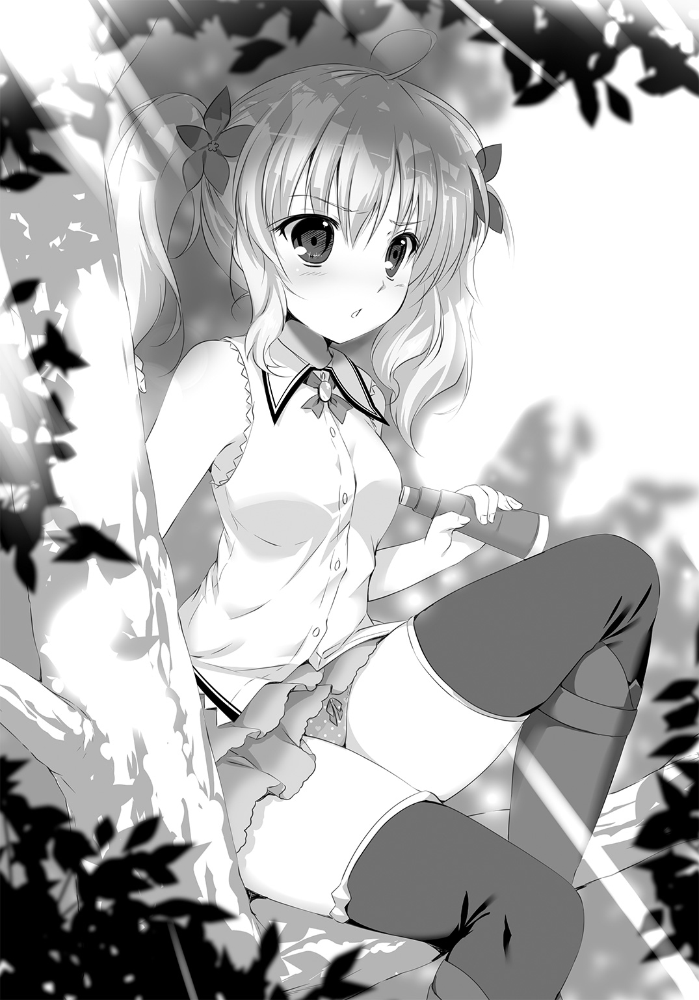

| 精霊医は勇者の変態を癒せるのか!? 2 | |
| 神秋昌史 | |
この本は縦書きでレイアウトされています。
また、ご覧になる機種により、表示の差が認められることがあります。
 ダッシュエックス文庫DIGITAL
ダッシュエックス文庫DIGITAL
精霊医は勇者の変態を癒せるのか!? ２
神秋昌史
【プロローグ 旅のまにまに】
「にゃはははは。なーんか、あったかいねーぇ」
そんな世にもとろけるような声が、実にたまらん位置から聞こえてくるわけで。
俺はもともと、夜が嫌いじゃない。夢を見るのが好きだったってのもある。
だけど今は、怖い。夜が怖い。今が怖い。
なにせ、
「さむーい夜は、あったかーくしないとねー。今は夏だけどねー、んふふふふーん」
横たわる俺の上に乗って、いいや寝そべって！
真っ赤な顔のテトリアが、ぐでぐでにぐでりきっているからだ！
体が動かない。痺れてるのと似てるけど、感覚はある。自分のものじゃない何かが、体内に重く沈殿してる感じだ。
かてて加えて、揺るぎない酔っぱらいに好き放題されちゃってる事実。
い、嫌すぎる！ 逃げ出したい！ くそぉテトリアのお尻やわらかいなぁ！
「あったかーいのは、なんでかなーん？ それは人肌だからかなーん？」
「んぎぎぎ......っ！」
「正解はねぇ、んっとねぇー。あ、このピーナッツすっごいおいしー。やはははは」
まぁ楽しそうに笑いやがって。正解は何なんだよ!? 言え、せめて言え！
人事不省寸前ではないかとすら思えるこの女の子、信じがたいことにお医者さんだ。
さらに信じがたいことに、今まさしく治療の真っ最中。
いや詳しくは、治療を行うための診察、検査研究段階ってことらしいんだけど。
俺の口の中にある、最悪な苦みと甘み。つい十分前のテトリアを思い出してみよう。
『リドくんリドくん！ 今日はだいじょーぶだよ、なんと魔力検査薬が完全に新型なのです！ 固まりやすくなる果汁のシロップも混ぜて、フルーティかつスウィーティなの！』
なぜ信じた、俺っ......！ 果糖ごときでどうにかなる味か！
大自然の甘さが加わって、味覚の暴風雨だわ！ 固まりやすくする意味もわかんねーし！
「やーリドくん、今日はいつにも増して絶好調だねぇ！ なーんも反射ないよ。毛ほども」
「にこやかにっ......言う、こと、っか......！」
「なんでかなー。なんでかなー。手だからかな？ えいっ」
「ぉふっ......!?」
両手でぺちぺち俺の体を叩いていたテトリアが、ぎゅっとほっぺたを押しつけてきた。
ふにふにと、むにむにと、甘えるようにすり動かす――な、なんだこれ。キモチイイ。いや、気持ちいいっていうか！
胸のとこにほっぺがあるってことは、腹のとこに護るべきものがあるわけで。
テトリアのパジャマはゆるゆるなわけで。
こぼれ落ちそうってわけで！
「テ......テトリア......？」
「すぴー」
寝やがっただと!? なんだこいつ、信じられねえ！
「か、患者を治療、してるって、自覚がっ......ないのか......！」
「むにゃむにゃ」
「ちくしょう......！ せ、せめてもんでやる。その胸もんでやる、動け俺の腕っ......！」
「アニスちゃんをもめばー......んんー」
「この期に及んで仲間を売りやがるか!? なんつー極悪非道......よし動く、少しずつなら動くぞ！ 極悪だろうが非道だろうが、おっぱいはおっぱいだ――」
「あーっ！」
がばっと身を起こしたテトリアが、必死の思いでぷるぷる動かしていた俺の右手を弾き飛ばす。な、なんだなんだ!?
「間違えちー！」
「へ？」
「これ飲み薬じゃないよ！ やだもーリドくんったらぁ。あたしのお薬が飲みたいからって、ダメじゃなーいうふふふふ」
え。なにそれ。
これガチで殴っていいやつ？
「ちょーっと待っててねーん。ふんふふーん」
「このやろ......！」
俺の上から滑り降り、ベッドの端でなにやら作業をはじめたテトリアの背に手を伸ばす。
そろそろ限界だ。胃も精神力も。いっしょに行動して早一月。毎夜毎夜、こんな美少女と二人っきりの時間があるのはすばらしいことだけど。
今のところ、成果はなにもない。
俺の記憶に関することにも――俺のおっぱいに関することにも！
だから、せめてもまねば！ 人に薬飲ませーの自分は酒飲みーの、どうせ最終的にはこのままぶっ倒れるんだろ!? もう飽きたんだよ！ 最低限の収穫はいただくぞ、その巨乳をな！
「ねー、リドくーん」
「なんだよっ......!?」
「どーして勇者やめちゃったの？」
予想外の質問に、あと少しで届きそうだった手を止める。
勇者をやめた。......確かに俺は、九日勇者って呼ばれてた時期もあったけど。
「やめたっつか、クビになっただけだぞ......職業でもないのに、変な話だけど」
「なっただけって、確か第四王女さん襲ったんでしょ？ クビになるに決まってるじゃん、てゆーか死刑だよ普通。なんでそんなわかりきったことしたの？」
「人聞きの悪い、襲ってなんかないぞ！ 護るために知る機会をくださいって言ったんだ！」
「はぇ？」
まぬけな声を返すテトリアに、麻痺も忘れて熱弁する。
「この世で護るべきみっつのものは、国と誇りとおっぱいで！ 王女様っつーたら王様の娘ってことで、国の大事ってことで、象徴？ だかってことで！ つまり王女様のおっぱいは、この国にいちばん近しいおっぱいってことだろ？」
「頭おかしい予感」
「そのおっぱいを護ることができたら、記憶戻る確率高いかなって思って。護るためには知らなくちゃいけないから、もしよかったら知ってもいいですか？ って聞いたんだ」
「頭おかしい実感」
「なんでだよ!? いきなりはダメだから、ちゃんと質問したんだぞ！ そしたら――」
「樹氷精霊トトミーア、微可視！」
ぽんっ、とテトリアの手元から小さな煙が上がる。
口をつぐむ俺を振り返り、彼女はにぃーっと笑った。指先ほどの白い円錐状の何かを、見せびらかすように掲げて。
「できたよ！ ホビットの秘薬、ザ・ヤークでーす！」
「ひ......秘薬？ なんだそれ、すごい薬ってことか？」
「そーだよー。珍しめの材料がこまごま必要だから、おいそれとは作れないんだけどさ。旅の道すがら、薬草を見つけては採り歩いてたのでした。えっへん」
「おおお......！ この時間のテトリアがお医者様に見えたのは、初めてかもしれない！」
その薬の材料をいつも通り俺ののどに流しこんだのは、この際忘れてしまおう。
「でもそれ、さっきのスープを固めたやつなのか？ じゃあ飲んでもよかったんじゃ？」
「ふっふー。そこがホビットの東方薬治、普通の薬とちとチガーウ。飲むんじゃなーいの」
「ほうほう。えらく腹立つ言い回しだけど、飲むんじゃないなら......？」
「はあぁ～、お酒おいしい」
「お前ももう飲むなって！ ピーナッツも食うな！ 飲むんじゃないならどうすんだよ!?」
「お尻に入れるの」
........................。
はい？
「お尻のね、穴にね、ずぼって。そんで調べるの。画期的よねー」
「え......え、いや。お尻って......え？ 俺の？」
「当たり前でしょ！ あたしのお尻に入れてどーすんのよ、バカ！ ヘンタイ！」
「いやいやいや、え、だって、え？ ウソだろ？ そんなの薬って言う？ 冗談だよな？」
「さーリドくん、早いとこぬぎぬぎしましょーねー」
マジかこいつ。マジだ、目が笑ってない。
お酒のせいで動きはへにゃへにゃだけど、瞳に宿る光は確かに医者のもの。
世界最高の精霊医としての意思がそこに――っていやちょっと待て!?
「いやいやいや!? 待っていやいやいや！」
「はーい抵抗しなーい。ズボンをずりーっとねー」
「ぐわあああ!? 違うって聞いてくれ、聞け！ 持ってるの薬じゃないって！ それピーナッツだって！」
「だいじょぶ、あたしにまかせて？ 痛くしないから......おねーさんを信じて」
「ちくしょおおおお！ やめて、見ないで！ せめて前は見ないでえええええ!?」
体に力が入らない。シーツを引っ張って抵抗するも、無様に組み敷かれていく。ああ。
さんざんだマジで。
【第一章 街と勇者】
シーノムスの街が、けっこうな都会だってことは知ってた。
華やかさでは、首都にも見劣りしない商都。交易が盛んで、物流の要地。
結果、治安の面でよそに一歩ゆずってるのは、まぁ仕方ないかってとこなんだけど。
「それでもこの辺りは、さすがって感じか......」
石畳の中央通り。開放型の店や露店の間を、荷車引っ張った物売りがたえず行き交う。買うほうは買うほうで両手に荷物、さらにはリュック、腰にまでなんか巻いてる気合いっぷり。
ともすれば活気に呑まれてしまいそうなのに、不思議と秩序だっている。
「このストリートは他国でも有名だからね。でもスリとか、気をつけないとだよ？」
白い切削杖をふりふり、テトリアがマジメな顔をつくった。
夕暮れ色の長い髪に、真っ白なローブと浅黄色のツーピース。バカでっかいガラスのビンを、よくわからない構造のベルトでくくり、リュックみたいに背負ってる。幅広の革帯が巨乳を上下から挟みこみ、もともと無防備な胸元を効果的に強調中。まことに眼福。
まぁスリやらひったくりやらには、テトリアがいちばん狙われそうだけどな。
「あれれぇー......？ わたしのお財布が、あれ、ありませんですよー？」
横手でのんびりわたわたしてる金髪美女は、南方エルフのアニス。
今日の露出度も絶好調、ほとんど水辺の格好だ。白い肌が夏の日差しに映える。サイズではテトリアを上回る爆乳も、動きに合わせて揺れ放題！ まことに重畳。
「も、もしかして、スリさんでしょうかー!? 大変なことですます......！」
「姉様、街に入るとき、わたしがお預かりしたでしょう？ 荷物と財布。ほらここに」
わたわたを止めたのは、同じく南方エルフのイニス。
アニスの妹ながら、こっちの肌はミルクチョコレートを思わせるなめらかな褐色だ。肩までの銀髪が見事なコントラスト、慎ましやかなお胸も愛らしい。まことに夏まっ盛り。
そう、夏。このリッシード、十八歳？ の夏！
女性三人引き連れて商都のメインストリートを闊歩なんて、ゴキゲンすぎるだろう！
「ま、イニスはついでのオマケの温情だけどな......」
「なんか言った？ 不治の変態男」
「アニスの荷物は俺が持ってんだろよ、ちゃっかり自分の手柄にしてんじゃねーや！」
「仕事をくれてやってるんじゃない。文句言われる筋合いないから」
マジでこいつだけはマジでいっぺんマジで......
「二人とも、こんなゴミゴミしたとこでケンカしてないで！ ほら、ついたよー」
テトリアが足を止めたのは、ひときわ大きな木造建築の前。
看板の文字は、『ＤＤ組合』と読める。
中に入ると、通りの喧噪が一気に遠ざかった。
人が少ないわけじゃない。人種的にはむしろ賑やかになったくらいだ――エルフ、ノーム、ドワーフにホビット。トカゲっぽいのや熊っぽいのもいる。話にゃ聞いてたけど、なるほど。
ここが亜人種医師組合か。
「へー......ほー......」
いくつものテーブルが設えられた広いホールを、テトリアについて奥へと向かう。さすがに物珍しくて、ため息も出ようってもんだ。
向こうも俺をじろじろ見てくる。この場所で剣にマントだもんな、当然か――
「いらっしゃいませだにゃん！」
思わず耳を疑った。
いつのまにやらたどり着いていた、受付と思しき窓口の向こう。かわいらしい女の子が、キラッキラの笑顔で愛想を振りまいている。
栗毛のクセッ毛はセミロング。ややツリ気味の両目はぱっちり。
えらくたっぷりフリフリのついた、白黒衣装もかわいらしいけど。
なにより、頭の上でぴこぴこ動く、大きなネコ耳が！ やたらかわいい！ 人型猫精だ！
「シーノムスＤＤ組合へようこそ！ エルフのお客様ですかにゃ？」
「ええ、連れがね。あたしは人間だけど、いい？」
「もちろんですにゃん！ 組合員にはなれませんけど、サービスはご利用できますにゃん！ 本日はどうなさいますかにゃ？ お薬の精製辞典、情報掲示板閲覧、種族別薬膳ランチ、井戸端会議の場所提供、なんでも対応させていただきますにゃん！ メニューをどうぞにゃん」
喫茶店かよ。でも確かに、メニューあったほうが便利そうだな。
医者御用達のなんでも屋、ってとこか？
「......にゃ？」
ケットシーの女の子が、大きな目をすいっと細めた。
とん、とん、とん、とテトリアの指先がメニュー表を叩く。次いで切削杖をカウンターにコツン。ケットシーに顔を近づけて、
「トイレで本を読みたいんだけど」
「お手洗いは、そちらのドアを入っていただいて、階段をおりた突き当たりですにゃーん！」
接客反応速ぇ！ まさに立て板に水。......けど、トイレ？ で本を？
「何言ってんだ......？」
「黙ってついてけっ」
なぜかイニスにすごまれた。
四人でトイレか？ なんだそれ？ よくわからんけどほのかにうれしいものがあるぞ。
戸惑う俺を引っ張って、テトリアは言われた通りに進んだ。階段をおりると、さらにざわめきが遠ざかり、やがて聞こえなくなる。地下に特有の、ひんやりした空気。
ほの明るい魔術の照明のもと、飾り気のないドアを開けると、
「改めまして、いらっしゃいませっス」
「へっ......？」
耳を疑うこと、この短時間で二回め。
聞こえた声は、確かにさっきまでにゃんにゃん言ってたかわいらしいそれ。けど、たったひとことでわかる、気の抜けた口調は。目の前で半眼をさらす、フリーダムな態度は。
まさしく受付のケットシーが、鼻でもほじりだしそうな振る舞いでそこにいたんだ！
「精霊医のお客さんたぁ、また珍しい。来てもらえて光栄っスね」
「珍しいの？ レクセンタルなのに」
「つっても半年ぶりっスかね。あ、どぞどぞ、お連れさん方もずずいと奥まで」
え......えぇー。なにこれ。フリフリ衣装が一気に白々しくなってんだけど。
てゆーか、上からここまでどうやって来たんだこの子。
「自分、組合の副主計やっとります、ルッチェっス。見ての通りのケットシーで」
「ど、どうも......あのー。なんか、え、さっきとすごい違うなーなんて......」
「ああ。ありゃ組合のお客様用キャラっスから。裏をご存知の方々にゃ意味ネーんで。アレお気に召しました？ にゃんで通すっスか？」
「い、いえ。いいです......」
なにか、自分でもよくわからないものを打ち砕かれてしまいそうだから。
にしても、この狭い部屋......すごいな。
壁が見えない。すみに会計用の机があるだけで、あとはぜんぶ棚だ。天井まで届いてるそれらに、大小様々ながら『得体が知れない』という点で共通してる品物が詰めこまれてる。わけわからんけど、なんとなくピンとくるものはあった。
これぜんぶが、おいそれと人目につくとこには置いとけない系アイテム、ってことか。
「ここは、どういう......？」
「上と同じ、自治体が経営するショップなんスがね。お国にとってカユい部分にある金貨を、うちらで回収させていただこうってハラで」
鷹揚に両手を広げたルッチェが、眠たげな、でも上で見たよりずっと自然な顔で笑う。
「主にモグリのお医者さん方に、ごひいきにしていただいてるっス。特に精霊医さんは、いろいろ大変っスからね。こちらからも支援させていただいてるんスよ」
「この街にＤＤ組合があって助かったわ。ちょっと路銀が心許なくて」
「というと、買い取りっスか？ なにを？」
本、とテトリアが分厚い革表紙のそれを差し出す。
途端にルッチェの表情が変わった。
「おおーっ、これはこれは！ 転換医術育書をおゆずりいただけるっスか！」
「え、ちょっ......い、いいのかテトリア!? めちゃくちゃ必要なもんなんじゃ......!?」
うろたえる俺に、テトリアは背負ったままのガラスビンを後ろ手で叩く。
「自分の分は持ってるよー。売るのは予備」
「え、これ予備なんスか？ すげーページ埋まってまスけど」
「ふふん？ そこはまぁ、腕よね？」
「ほ。こりゃあごひいきにしてもらわにゃあ」
ふ、ふーむ......？ いつも治療のときに使ってるあの本、売り物になるのか。それもけっこういい値段っぽい？ どういう仕組みなんだろ。
そろそろいっしょにいて一月以上経つけど、そのへんなんにも知らないんだよなぁ俺。
「パッハ病、ラクルケテ病、シンブ熱......わは、ライハテ病まで。こいつぁ売れるっス」
「あと、ナノワクトも買いたいんだけど、その前に......なにか仕事はない？」
「仕事？ そりゃいろいろあるっスよー。コツコツタイプっスか？ 一攫千金タイプ？」
「あるやつぜんぶ見せて。本を育てたいの。それとも、急を要する患者さんでもいる？」
「今は聞いた覚えないっスね。こちらのリスト、ご覧くださいっスー」
さくさくと商談を進めるテトリアを横目に。
俺は、棚の品物をためつすがめつしているアニスの肩を、ぽんぽんと叩いた。
「なー。正直、テトリアが何言ってんだか、さっぱりわかんねーんだけど......どゆこと？」
「え？ えっとー。それはー。すみません、わたしお話聞いてなくって......」
ダメだこりゃ。
「イニスー......」
「アホにわからせてもわたしに得ないから」
インクで漆黒に塗りつぶすぞその肌......！
「よーしいいね、決めたっ！」
ルッチェから受け取ったリストをぽんと叩き、テトリアが振り向く。妙に自信満々な顔だ。
「イニスちゃんアニスちゃん、リドくんも行くよ！ よさそうな患者さん見つけたから！」
「い、行くって、どこへ？ 買い物は？」
患者さんを見てからね、と、また俺にはわからない理屈をつけるテトリア。けれどルッチェは心得たもんで、またのおこひをーとすでにあくびまじりだ。なんだこのネコ耳マジで。
ぽりぽりと頰をかく俺に、テトリアはいたずらっぽく笑う。
「忙しく、なるかもだねえ！」
＊＊＊＊＊＊＊＊＊＊
馬車にしばらく揺られると、自然豊かなシーノムスの郊外に出る。
のどかな原っぱに、麦畑がちらほら。名だたる商都の意外な一面を見た気分だ。
「もらったリストによると、患者さんは十歳」
他に客がいないのをいいことに、テトリアが乾薄紙を読み上げる。馬車酔いするぞー？
「若いってか幼いねこりゃ。しばらく前から、両足が麻痺する病気に悩まされてるんだって。内科医外科医の治療に効果は見られず、不自由な車椅子生活、と」
「ＤＤにはかかったのですますか？ さっきの店にもたくさんおりましたですが」
「ホビットの東方薬治は試したけど、芳しくなかったって書いて――あ。あれじゃない？」
馬車の行く手に現れた建物に、俺も含めて皆小さく感嘆の声をもらす。
白い壁に囲まれた、しかし要塞然としない瀟洒な造り。丘を利用したんだろう、横に広い三階建ての全容が見上げる形でよくわかる。
こんな屋敷、貴族か財宝の悪魔しか住みゃしない。
「患者は貴族の一人娘。治療依頼が出てたわけじゃないけど、治せばいくらかくれるでしょ。よほどのドケチでもない限り」
「営業かける、ってことか......？」
「そーゆーこと。リドくんの治療が、あんまりにも手がかりつかめないもんだからねー」
え、俺？ 俺がなんか関係あんの？
てゆーかあれは！ テトリアが！ 毎夜毎夜エロかわいく酔っぱらってくれるから！
「ま、体が麻痺する病気には、いくつか心当たりあるの。外科医の領分じゃないし、そこらの内科医にもムリでしょーね。つまり、狙い目でもある、と！」
テトリアのあこぎな気合いと同時、馬車が止まった。
荷物を背負って門をくぐり、玄関までの長い小路を歩く。これまた見事な前庭だ――外の自然をそのまま持ってきたみたいな緑に、池や橋まで設えてある。
そして至るところに花、花、花！
示し合わせたように咲き誇ってる。まるで天国からここに降り積もったみたいだ。
きゃっきゃとはしゃぎながら先を行くテトリアとアニスに遅れ、俺はイニスの隣に並んだ。
「なぁ......」
「口クサい」
「とりあえずで罵倒すんのやめろよ!? フローラルだろ！ 歯には気ぃ遣ってんだ俺は！」
「なんかここのとこ、一日一回あんたの悪口言わないと落ち着かないのよね」
どんだけ底意地悪いんだこの女。
で、でもまぁ......テトリアと長年旅してるだけあって、知識や経験には信用置けるからな。
「患者にさー、いいとか悪いとか、あるのか？」
「は？」
「さっきテトリアが言ってたろ、いい患者を見つけたって。あれって、治しやすそうな患者、とかの意味じゃないよな......？ なんか、違和感あってさ」
テトリアは医者だ。この街に着くまでも、行く先々で治療を施してきた。
それはそう、まさに『施し』で――空き地を借りて診療所を開き、貧しい人間も分け隔てなく迎え、奇蹟のような医術でもってケガも病気も治してしまう。夕日のような長髪に、朝日のような笑顔の少女。そんでもって巨乳。なんといっても巨乳。
俺は彼女の『剣』として、けっこう、その、夢中で手伝ってきた。
だから初めて、テトリアが患者を選んでるところを見て、こう......。落ち着かない感じが。
「いや、やっぱなんでもない。路銀がないと何もできないもんな！ 助けられる人間も助けられなくなるし。つーかおかしいと思ってたんだ、朝になく夕になくアニスが不気味なぐらい食うのに、患者から大した金もとらなくてどこから――」
「患者にいい悪いは、あるから」
「え」
「お金を持ってる患者。地位のある患者。役に立つ患者。そういう【疵】者以外は治療しないわよ。慈善事業じゃないんだから」
「で......でも、ついこないだだって、貧乏な人たちをあんなに」
「そうよ。あの人たちも役に立つ患者。十分、役立ってくれてるから」
は、はあ......？ どういうことだ？
テトリアの治療に対して、パンのひとかけや、ジャガイモ一個を差し出すくらいしかできない患者たちが、十分役に立つ!? そんな風には......正直、見えなかったぞ......
「リ～ドくーん！ イニスちゃーん！ なにやってんのー!?」
早く早く、と小路の先からテトリアが急かす。
イニスは横目で俺を見、フンと鼻で笑った。
「アホな勇者様にヒントあげる。なんでお師様の【本】が、高値で売れたんだと思う？」
「へっ？ あ、いや、あー......実はそれも聞こうと......」
「ちょっとは自分で考えなさいよ。あははムリか、頭ん中おっぱいでいっぱいだもんね」
嫌味のつもりなんだろうけどさ。
女の子の口から聞くおっぱいって言葉、いいよね。
すごくいいよね。とてもいいよね。......もっかい言って――
ガン ゴンゴン
「――はい」
前者の音は、俺の表情から何かを察したらしいイニスによる打撃音なわけだが。
後者の音、分厚いドアへのノックに応えて、中から若い女性が現れた。涼やかな目元の、落ち着いた美人。すらりと背が高く、野暮ったい使用人服すら凜として見える気品もある。
「ご主人にお取り次ぎ願えます？ お嬢様を診させていただきたいんですけど」
「そちら様は......？」
「テトリアといいます。精霊医です」
使用人が、わずかに表情を変えた。無表情な中にも驚きの色。
俺もけっこうびっくりしてる。まさかこういう手合いに、いきなり身分を明かすとは。
「......お待ちしておりました」
「えっ？」
「わたくしはパノ。ネイアス家の使用人頭です。主はただ今おりませんが、どうぞこちらへ」
顔を見合わせ、俺たちは招かれるまま屋敷の中へ入った。
外から見た印象に比べると、建物の内部はシンプルだ。貴重な調度品の類は少なく、広々としたホールや廊下を色とりどりの花が彩っている。
こりゃあいい。首都らへんの気取りきった貴族屋敷より、よっぽど親しみやすい空気だな。
「待ってたって、ずっと？ どうして？」
「さあ......俺らを待ってたってんじゃ、ないだろ......」
「そりゃそうでしょ。誰でもいいから医者が訪ねてくるのを待ってた？ んんー......？」
「そうだな......」
首をかしげるイニスに生返事をする。確かに一瞬不思議に思ったけど、今は前を行くパノさんのお尻から目がはなせない。
きゅっとしまって、ぷりぷり動いて、薄い布地に垂れない若さ。紛れもない極上だな。
「お嬢様......医者が参りました。失礼いたします」
パノさんが開いたドアの先。小さな家ならすっぽり収まってしまいそうなほど大きい、ダンスホールじみた広間の中央で。
一人の少女が、読んでいた本をぱたりと閉じた。
薄桃色のロングヘアが、白い部屋着に流れ落ちている。大きな瞳に、やせ気味の頰。パノさんともまた異なる、根本的に別種の可憐な人品。
有り体に言ってめちゃくちゃかわいいその子は、車輪つきの椅子に座り、厚手の膝掛けで足を覆ったまま、にっこりと微笑んだ。
「あたらしいお医者さま？ はじめまして。アイリーンです」
「アイリーン・ネイアス様です。名高きネイアス男爵のご息女であらせられます」
「お父さまのこと、知ってる？」
ひょっ？ とテトリアが挨拶し損ねた。いきなり意表をつかれてやがる。
顔を見合わせるアニスとイニス。くすくす笑うアイリーンに、俺は苦笑して口を挟んだ。
「狩りの名手だったお方ですね？」
「え。知ってるの!?」
「王城に毎年、見事な獲物をご献上なさってました。何年か前に大きな白鹿を仕留めてこられたときは、すごい話題になりましたね。それで、確か......そ、の」
しまった......知ってたからつい出しゃばったけど、この先どう言えばいいかわからない。
見かけによらずイタズラ好きなのか、アイリーンはまたくすっと笑った。
「三年前、狩りの最中に事故で死んじゃった。名誉の戦死？ です！」
「......その、まことに。なんというか」
「お父さまの話をしてくれて、ありがとう。うれしいな、知ってる人に来てもらえて」
リドくんグッジョ！ とテトリアが後ろ手にサムズアップしてくれる。空気読め。
パノさんがアイリーンのそばに寄り、膝掛けを受け取った。
「さっそく診察を願います。両方のおみ足が麻痺されて、ご随意になりません」
「わかりました。失礼しますねー......」
杖と荷物をアニスに預け、テトリアがアイリーンの白いスカートをたくし上げる。
患者でないパノさんのお尻はともかく――患者を好色な目で見ることは、テトリアに固く禁じられている。内科医ほどじゃないにしろ、やっぱり肌を見ることの多い仕事だ。あからさまに目をそらす必要はないけど、決して鼻の下を伸ばさないように、と。
もちろん心得ている。生命の際にいる人も多いんだ。
どんな美女だろうと、美少女だろうと、患者である以上エロい目でなんか！
「ここは......なにか感じます？」
「ううん......」
「ここ......こっちは？」
「あっ......ちょっと、だけ......」
「ここを、こうすると......？ 感じますか？」
「うん、そこは......感じるっ......」
エロい目でなんか!!
「リドさんはときどき、とってもマジメなお顔でテトさんの診察を見てますですねー」
「ああ......務めだからな」
こんぐらいツラに力入れてないと、表情がどうなるかわからなくて怖いだけです。
「ふむふむ、なるほどー？ 麻痺はなるほどー。じゃ、原因をさぐっていきましょーか」
「原因......？」
不安げに細い眉をひそめるアイリーンに、テトリアが明るい笑顔を返した。
「ケガはもちろん、病気にも原因があります。それがわかれば、精霊医の治療はやりやすくなるんです！ ちなみになにか、心当たりなんかは？ ちょっとしたことでもなんでも」
「さ......さあ。ぜんぜん......ある日いきなり......」
「ふーむふむ。よーし、それじゃあー」
調子が出てきたらしいテトリアが、荷物からてきぱきと道具を取り出す。
片手鍋に、ガラスの小ビン。さらに陶器の小ビン。よっしゃちょっと待て。
「テ、テトリア！ テトリアそれは!? まさか！」
「え、なーに？」
「なにじゃねーよ！ アレだろ、魔力反射薬つくるつもりだろ!?」
「うん」
「飲ませるつもりだろ!?」
「うん」
「ダメだろ！ 患者を死なせる気か！」
死!? とアイリーンが驚愕する。パノさんが無表情のまま両目を細める。
さも心外だと言わんばかりに、テトリアは両手を細い腰に当てた。
「人聞き悪いこと言わないでよ!? お薬で人が死んでたまるもんですか！」
「俺が何回意識失いかけたと思ってる!? 小さい子に飲ませるなんてムチャだ！」
「シロップあるから大丈夫だもん！」
「つい昨日大丈夫じゃなかっただろが！ おっぱいももませてくんねーし！」
「だっ、も、もませるわけないでしょ!? 何言ってんの何言ってんの、ヘンターイっ！」
「とにかく薬はダメだ！ 死ぬぞ、人が！」
ぎゃいのぎゃいのと言い争う。アニスがのんびり笑い、イニスがため息をつくのが見えた。
いやいや、どう考えても俺が正しいって。飲ませられるかあんな劇物。
アイリーンとパノさんも顔を見合わせ、何か言おうとしたみたいだったけど。
コン コン
「......？ 誰です？」
『あのぉー。なんとか特使、っていう人がきてますけどー』
「特使......。どうぞ」
なんだかやる気の感じられない使用人らしき者の声に続き、広間のドアが開く。
カツンッ、と硬い足音が、高い天井に響き渡った。
一同、黙して見守る中を、一人の少女が歩いてくる。
歳のころ、十六、七といったところか。整った細面に白い肌。ややクセのある水色の髪を両側頭部でくくって、ふわふわのしっぽをふたつつくっている。右の小脇に大きな本、左手で白い杖をつき、つかつかつかっと俺たちのすぐそばまでやってきて、フンと仁王立ち。
かわいい子だ、すごく。でも顔は問題じゃない。
見覚えのある本。見覚えのある杖。そして見覚えの、ない、
「の......昇り竜の、ローブ......!?」
テトリアが啞然と呟いた通り。
ひざほどまであるローブのすそから、襟へ向かって堂々と。二匹の猛々しいドラゴンの刺繡が、仰々しく翔け昇っているんだ。
し、趣味わりー......初めて見たぞあんなん。どこで売ってんだ......？
「......。アイリーン・ネイアスさん？」
「は、はいっ」
昇り竜の少女は、俺たちを強い視線で一瞥したあと、無視してアイリーンを見下ろした。
落ち着いた口調だけど、甲高い声はどこか刺々しい。
「この時間に、というお話でしたよね？ アタシ、約束破られるの嫌いなんですけど」
「はあ......あの、あなたは......？」
「ユーエミルです。精霊医の、ユーエミル・ワルウェルドキンダム」
なっ......
精霊医!?
い、今この子、確かに。水色ツインテールで昇り竜で、ミニスカートから伸びるあんよがきれいで、胸はかなーり控えめだけどお尻のラインがいい感じなこの子！
確かに、精霊医って言ったぞ!?
「え、精霊医って......えっ？ だって......」
「ちょっとちょっと、待ちなさいよ！」
戸惑うアイリーンを遮って、テトリアが話に割って入る。
「なによ精霊医って！ どこから受けてきたか知らないけど、この仕事はあたしたちが先なんだから！ あきらめなさいよね」
「ハア？ 受けた？ なに言ってんのこのチビ」
「ッチ、ビ......なにぉおおおおお!?」
す、すげえ。ものの十秒で敵対した。
「よくも人の見てくれどうこう言えたわね!? 売れないサーカスみたいなカッコして！」
「ハアー!? どこがサーカスよ！ ごくごく普通のトレンディじゃない！」
「ふつー!? とれんでい!? やめてくれない、精霊医のイメージ悪くなるから！」
「なんであんたみたいなドチビにそんな心配されなきゃならないわけ!? てかあんた誰よ!?」
「あたしは精霊医よ！」
テトリアの言葉に、水色ツインテール――ユーエミルの表情が変わった。
前のめりに怒鳴り合っていた姿勢をすっと引き、控える俺たちまでをもじろじろと無遠慮に眺める。細い眉毛をつり上げた、性格を一発で表現している目つきだ。
「精霊医ぃ......？ 本物......？」
「当たり前でしょうが！」
「アタシと面識がない本物だっていうなら、つまりモグリってわけね？ えっらそーに、犯罪者じゃない！ 偽者よりタチ悪いわ！」
「は、犯罪者とはなによ!? 罪になんかなってないもんね！」
「明確な罰則がない罪だからタチ悪いって言ってんのよ！ 法外な料金せしめて、ハンパに治療のマネゴトして、我がレクセンタルの国民を苦しめてるんでしょ!? このクソチビ外道！」
「っ......こっ――」
尖炎火霊、と聞こえた時点で、俺の体は反応していた。
「アルトレ、可視」
ゴウッ！
と、螺旋を描く炎が宙を駆け、ユーエミルのいた場所を貫いた。そのまま大きな窓ガラスをぶち抜き、庭木をかすめて消えていく。
ぽかんとしているアイリーンの傍ら。
俺は両手で抱えたユーエミルにケガがないか確かめ、いきなりすぎる下手人に振り向いた。
「お、イニスなぁ!? 何やってんだよ、そういうのやめろって！」
「はっ......つい。頭に血がのぼったから」
どんだけの量の血がのぼりゃ、人に向かって術撃てるんだよ。怖すぎだろ。
「う、は......は、はなして！ なに気安く抱きしめてんのよ、最ッ低！」
「あ、っと。いや、その......」
両目をつり上げて暴れるユーエミルを、そっと床に下ろす。
一応助けたんだけど、とはどうにも言えなかった――抱っこしたとき、思いっきりお尻抱えちゃってたから。とてもやわらかで、とてもあたたかで、とてもとてもでした。
「なんって危ない連中なの......!? いきなり殺そうとするなんて！ わけわかんない！」
「やー、その、今のはまぁー。あははは」
「とにかく！ アタシがここに来た以上、モグリの精霊医なんかに好き勝手させないわけ！ この国内特使精霊医、ユーエミルの目が黒いうちはね！」
国内特使！ そういうことか。つーか笑ってごまかそうとすんなよテトリア。
学術、武術、芸術、その他。各分野の特に優秀な人材を、特別権限付きで国内に放つ。行く先々で問題の解決、国力の発展に努めさせるレクセンタル特有の制度。
このユーエミルは、医学分野の特使ってことか。
でも、精霊医がそんなのをまかされてるなんて、正直言って意外だ。よっぽど優秀なのか。
「せ、精霊医さんが二人だなんて......どうなってるの、パノ？」
「わたくしは、国に医師の派遣を依頼しました」
アイリーンの言葉に、パノさんがよどみなく答える。
国に、ってことは......それじゃあ。
「結果、精霊医が来る、という返事を受け取ってはおりました。まさしく今日の、この時間。てっきり、テトリア様がそうだと思っておりましたが......」
ちろ、と静かな視線を向けられたテトリアが、慌てて首を横に振る。
「あ、あたしは確かに、国からの派遣じゃないけど！ でも、ちゃんとしたところから話を聞いてきたのよ!?」
大ウソ。
「それに腕も確かだから！ どのくらい確かかって、そこのサーカス女の百倍ぐらい！」
「ハア!? アタシ特使なんだけど!? あんたの千倍は腕いいし！」
「あたしのが万倍いい！ まかせてもらえますよね、パノさん!?」
「アタシのが一億万倍以上いいから、アタシに決まってますよね!?」
ぎりぎりぎり、と互いに奥歯を嚙みしめながら訴える。
ある種、似た者同士と言うべきか......いやでも、冷静に考えて、これはなぁ。
「ユーエミル様にお願いいたします」
ですよね。
「なんでよーっ!? あたしのが先に来たのに、なんでなんでなんでよーっ！」
「いいから引き上げようってテトリア！ どっちかっていうと仲介者のミスだろ、嚙みつくところが違うって！」
「うぐぐぐ。あっ待ってリドくん、あの女!? あいつ今鼻で笑ったよ、こっち見て笑ったんだよ！ 殴らなきゃ思いきり！」
「だから落ち着け！」
「尖炎火霊、アル――」
「やめれっつにイニスも!! お、お騒がせしました！」
羽交い締めにしたテトリアを引きずり、広間を出る。
まぁ今回はダメだろう。そもそも屋敷に入れてもらえたのだって、パノさんの勘違いだったわけだ。中途半端に首つっこんじゃった分、がっかりはするけどな。
「な......!?」
廊下に出たとこで、思わずギョッとする。
広間正面の壁際に、なにかがふわふわ浮いていた。
二体の、人形――のように見える。三十センチくらいの身長。女の子だろうか？ 白い法衣と黒い法衣を着て、フードを目深にかぶってるからわからない。小さなおちょぼ口と、ちらちら覗く金髪。背中から見えてるのは、ちっちゃい羽か？
俺の胸ぐらいの高さを、わずかに上下に揺れながら。ぶ、不気味すぎる。
「フンっ......本物か。行くよ、リドくん！」
「うっ？ あ、ま、待ってくれよ！」
アニスから荷物を受け取り、足早に歩き出すテトリアを追った。
「また急に気を取り直したな、おい......？ 本物って？」
「あのちっこいの見たでしょ？ ホムンクルスだよ、あれ」
「ほむっ......!? あ、あれが!? ホムンクルス!?」
人工生命の、秘術――レクセンタルが他国に大きく先駆けている分野の、最新技術を結集させた存在！ 知識としては知ってるけど、くそっ、もっとじっくり見ときゃよかった！
あ、そっか。そんなのを引き連れてる、ってことは。
「あのユーエミルとかいうクソガキが国の人間っていうのは、とりあえずほんとっぽい。一旦出直しましょ。アニスちゃんたち、悪いけど宿さがしお願い」
「うんうん、出直そうそうしよう。ありゃ相性も悪そうだ――」
「リドくんはこっち」
はい？
「ちょ、ど、どこ行くんだよテトリア？」
玄関先でエルフコンビと別れ、腕を引かれて壁伝いに移動。
植え込みをこそこそ通り抜け、中庭に集まって談笑しているメイドさんたちの目を盗み、屋敷をぐるっと回りこんで――おい。まさか。
「あれかな？ さっきの部屋の窓。あのクソでっかいやつ」
「テトリア......なんで覗きなんか。出直すんだろ？」
「だってムカつくじゃん！ あんな趣味最悪の小娘に仕事とられたんだよ!? チョー狙い目の仕事！」
だから狙い目とかなんとか。
「絶対許さない。呪ってやる。特使とか言ってるけどきっとヘナチョコよ」
「さすがにそこまで言うことはないんじゃ......けっこうかわいかったし」
「ぶっ飛ばすわよリドくん。それに、ヘナチョコかどうかはすぐわかるってもんよ。間を置かず治療はじめるだろうからね......無様に失敗するかも」
「な、なんでまたそんな」
「出てくるの、たぶんヴルガノモックじゃないかな」
知ってる？ といたずらっぽく見上げてくるテトリアに頷く。
ヴルガノンっていう神話級の天龍、空飛ぶ超巨大な鳥モンスターがいる。
全長の単位がなんとキロメートル。足がないことで有名で、基本的には年がら年中飛びっぱなし。ごく稀に羽を休めるときは広い平野に胴体着陸して、そのときにできるばかでっかいクレーターがのちに湖になるっていう、規格外の魔物だ。
ヴルガノモックは、そのもどき。
「秋になると南から渡ってくるアレだろ？ 犬くらいしかねーくせして鳴き声がケルベロスよりうるさくて、沿岸で群れを撃ち落とすためにわざわざ軍隊が出張るっていう」
「それ。足の病気にはいろいろあるけど、出てくるモンスターはけっこう特定しやすいの。反射薬で調べたわけじゃないから正確なことは言えないけど、でもアイリーンちゃんの症状自体はそこまで重いものじゃなかった。なのに長期化してるって場合、だいたい数種類に絞りこめて、その中でいちばん厄介なのがヴルガノモックって感じ」
「はー、なるほど。さすがテトリア」
「遠慮いらないよ？ もっとほめてどうぞ？」
そういう性格とたまのやらかしがなければ、素直にほめられるのになぁ。
「とりあえず、その窓から見えるでしょ？」
「ああ。そうだな――っぬぅ......!?」
屈めていた腰を伸ばすと同時に、俺は思わずうめいてしまった。
覗きこんだ窓枠の向こう。薄ピンクの髪をまとめたアイリーンが、部屋着の前をはだけている。ほんのわずかにふくらんだ、穢れを知らない珠の肌。体調が悪いせいかほんのり赤らみ、幼女らしからぬ雰囲気を醸しだしている。
な......なんというか。
テトリアの治療中にデレっとしたら怒られるけど、今はそうではないわけで。
だけども俺は幼女好き、エルフ語でいうロリコンなどでは決してないわけで。
それでもこの光景にはさすがに、魂に伝わる熱い脈動を感じてしまうわけで――
「リドくん」
はっ。
「ち、ちが......違うぞテトリア。俺は別に、なにもそんな、やましいことなんてぜんぜんっ」
「なに言ってんの」
「思った以上にきれいだっただけで！ 清らかななにかに目を灼かれただけで！ 俺は、俺はテトリアの教えをちゃんと......！」
「だからなに言ってんの」
見ると、テトリアはただ俺を見上げていた。
ほっぺがややぷっくり。ほのかにぶーたれている。
さらによく見ると、つま先立ちしていた。一所懸命背伸びしてる。そこらにあった石を足場に積み上げ、高さを追求しようとした名残も見受けられたりなんかして。
まぁ......俺でギリギリ覗けるくらいだもんな。そりゃムリか。
「ど、どうする？ 台になろうか、俺......？」
「さすがにそこまでひどいこと言わないわよ。おんぶして、おんぶ」
ッ!? お、おんぶ!?
ちょっと待って、なんて言ういとまもなく、てーいとテトリアが跳びついてきた。
背中に、思ったよりずっと軽い衝撃――男にはないふたつのクッションが、確かな重みをやわらげて伝える。ふにゅふにゅして、むにむにして、ふわふわしているのがわかる。
こ、れはっ......予想したより、はるかに。ずっとはるかに、たまらんっ......！
「小娘が失敗したら、窓から華麗に登場して助けるからね？」
「ふ、太もももいい。太ももやわらかいあったかいローブすごい邪魔......」
「ちょっと聞いてんの!? カッコよくよ！ カッコよく！」
「わ、わかったわかった。でも、失敗しないほうがいいだろ？ アイリーンちゃんかわいそうじゃんか」
「そりゃまぁ。でも大丈夫よ。あたしたちがここにこうしている限り、たとえサーカス小娘がへなちょこぴーにスカこいちゃっても、アイリーンちゃんは助かるから！」
ダメだこりゃ。この医者ろくでもなさすぎる。
いろいろとあきらめ、窓越しの広間に目を戻したとき。
『――以上の調査報告が事実である場合、残念ながら』
乾薄紙のメモ帳をぱたりと閉じて、水色ツインテールの少女、ユーエミルが声高に告げた。
『今のネイアス家は、王国に対して十分に貢献なさっている、とは言えません。偉大なる王国と国王陛下により厳正かつ安全に管理されている、我が精霊医術の恩恵を受けるにふさわしいかと言われると、疑問です』
『そ、それは......』
『そもそも、現当主はどちらに？ 奥方様がご存命でしょう、家にいないんですか？』
これは......なんか、だいぶ予想と違うっていうか。ずいぶんきな臭い雰囲気だな。
耳元で、はえー？ とテトリアが間の抜けた声をもらす。
「王国とか貢献とか、何言ってんのあいつ？ イタい子？」
「ちげーって。なんつーか、国内特使ってのは特殊なんだよ。いろんな問題に無償で力を貸すけど、それは国のために働いてる......有り体に言えば、たくさん金を納めてる人間限定っていうか。国の発展が第一で、あのユーエミルって子も、そのためにいる医者なんだろ」
「貧乏人は助けないってこと？」
「ま、まぁ、そういうことかな......」
「ふーん......。ま、合理的よね」
そこは評価するんだ!? よくわかんねーよ、実年齢九十九歳。
室内では、アイリーンがうなだれている。思えば俺たちも、母親の姿は見なかったな。
『男爵様の事故はまことにお気の毒ですが、こうまではっきり数字に出てると......そのあたりの事情を聞いてこい、とも言われてるんですよね、アタシ』
『問題ないかと存じます』
アイリーンの傍らに立つパノさんが、冷静そのものの口調で言葉を返した。
『アイリーン様の病が治れば、以前同様、あるいはそれ以上の貢献をお約束いたします。これは一使用人にすぎないわたくしの意見ではなく、現当主の意志でございます』
『だからその現当主はどこに......いえ、いいわ。どういうことです？』
『アイリーン様は、クルコッポ商会の会長様、そのご令息と婚約が決まっております』
あら、とユーエミルが目を丸くする。
クルコッポっていや、王国で五本の指に入るほど大きな商業組織だ。
その会長の子供と、貴族の一人娘。......うわー、なるほど。うわー。
「すっごい露骨ね」
呆れるテトリアに、深々と頷いてしまった。
『なるほど。将来有望、ってことですか？』
『あちら様がいたくご執心で、この屋敷にも何度もお見えになっております。しかし、ここしばらく......アイリーン様がおみ足を病まれてからは、励ましのお便りばかりが届きますが』
『ふーむ......つまり、足が治れば』
『お察しいただき恐縮です』
ど派手なローブで腕を組み、ユーエミルが考えこむ様子を見せる。
アイリーンが服の前をかき合わせ、居心地悪そうにもじもじするのがわかった。......かわいそうに。事情が事情なのかもしれないけど、当人の前でする話じゃないよな。
『シールー、クールー！』
『きゅ』『きゅ』
ユーエミルの声に、廊下側のドアがちょこっと開く。
ひよひよひよ、と羽をパタつかせて、空飛ぶ小人が入ってきた――ホムンクルス。うわすげえ、動いてる動いてる！ 手ぇちっちゃ！ 三頭身ちっちゃ！ いいなーあれ！
「あれ高価いんだよねー、二体でお城買えちゃうくらい」
人の夢ぶっ壊さないでもらえますかねテトリアさん。
『そういうことなら、あい承りました！』
テーブルに置いていた本と杖、精霊医の必需品を手に取り、ユーエミルが自信満々に笑う。
『このユーエミル・ワルウェルドキンダムが、ばっちり治してあげましょう！ それじゃあアイリーンお嬢ちゃま、ちょーっと椅子動かしますねー？ なるたけ端っこのほうに』
「わ、こっちくる。リドくんしゃがんで！」
マジで!? ぐ、ぐおお！ つらい、おんぶ中腰はさすがにつらい！
小細工に必死な俺たちと、壁一枚隔てたすぐそこで、
『これから精霊医術で治療しますから、この精霊ナノワクトを足に乗せててください』
ユーエミルが、どことなく得意げな声で語った。
『アタシと、ホムンクルスのシールー、クールー、三人ですべて終わらせます。お嬢さんくらいの歳なら大丈夫だと思うけど、精霊症が起きないようにしっかり処置しますから』
『精霊症とは、なんでしょうか？』
パノさんの声だ。対照的に冷静沈着、深いアルトにしびれるぜ。
精霊症っていうのは、精霊医術独特の副作用だか後遺症だかで、ちゃんと対処しておかないといろいろとっても危ないものだ。
前に説明聞いたし、今もユーエミルがべらべらしゃべり倒してるけど、よくはわからん！
『――てなわけな感じですのでねー。アフターケアもばっちりさせていただきますよ』
『......本当に国内特使、というわけですね』
『あれ。信じてませんでしたぁ？ ま、あんなモグリ見たあとじゃ、ムリないかもねー』
テトリアちゃん、気持ちはわかるけど俺の肩べちべちどつくのやめて。
『特使様の中に精霊医がいるって、メイドさんたちの噂で聞いてはいたんですけど......』
おずおずと、いまだ怯えたようなアイリーンの声がする。
『本当にそうだったから、びっくりして。それに、あの、すごく若いし......』
『うふふ、どーも。ぶっちゃけアレです、アタシってば天才？ みたいな？ そーゆーやつなんで、なーんにも心配いりませんよ！ 貴重な貴重なホムンクルスの所有を許されてるのも、その証拠。ぜんぶアタシにまかせちゃってください』
『は、はあ......その、でもやっぱりちょっと不安で。あの、悪魔の罠、とか――』
『だから！ 心配！ ありま！ せん!!』
否定というより拒絶じみた勢いで、アイリーンの言葉が遮られる。
悪魔の罠。
世間一般が、精霊医術に対して抱いているイメージだ。キズを癒すはずが魔物を、それも凶悪なやつを手招いてしまい、場合によっては周りまで巻きこむ結果になる......
『あんなのはド素人がやった場合！ 知識もないままヘタに手を出すやつが、火中の栗に反撃くらっちゃうわけ！ まぁさっきのモグリにまかせてたら、そーゆーことになったかもしれないけど？ アタシは国に認可を受けた、正規の精霊医！ 免許皆伝なわけですよ！』
『そ、そうだったんですねっ......ごめんなさい......』
『あっゴメンねお嬢ちゃま、おっきな声出しちゃって。えっと、ちゃんと説明すると、アタシが持ってきたナノワクトはまだ一度も治療させてない新顔。一人分の【疵】くらいどーってことないし、万が一、まんっがいちモンスターが出たとしても、たぶんヴルガノモックなんですよね。モグリのヘンテコ集団には退治できないけど、アタシたちならよゆーですからー』
うんうん、よくこらえた、えらいぞテトリア！ 暴れないでガマンできたな！
だから耳元での歯ぎしりは！ 歯ぎしりはご遠慮くだ、あ、あ、背筋ぞわってなるううう。
「フン。人工精霊に、新品精霊ね。確かに大丈夫そうだわ、小娘本人の力じゃないけど！」
「は、はは。でもほら、テトリアとおんなじ診断してるよな？ ヴルガノモックだって」
「むっ。そ、そこはまぁ......そうかもだけど。でも大事なのはアレだし！ 真心だし！」
そうだね。あと間違えないこととね。
『喰らえ！ 喰らえ！』
耳慣れた言葉が、耳慣れない声で聞こえる。
再び覗きこんだ窓の向こうで、ユーエミルが左手に白光を宿した。
『【疵】を喰らって天へ翔べ！ アルメルンのナノワクト!!』
むき出しにされたアイリーンの太ももに、ぴこぴこ踊る二頭身の精霊、ナノワクトが乗せられている。つぶらな瞳が同じく発光し、皓い輝きの中で【疵】を喰らい尽くして――
すぐに、その色を紅に変じた。
「『げ』」
窓の内と外で、お上品とは言えない声が重なる。
赤いオーラ。粘つくように蠢くそれは、俺ももうずいぶんと見慣れた代物だ。食疵を終えたナノワクトが、全身をこういう風に変化させるときは。
ほどなく、モンスターが顕現する。
『と......牽引ッ！』
ユーエミルの呪文で、蠢くオーラがアイリーンから離れる。
『シールー、クールー！ スクランブル！』
『きゅ！』『きゅ！』
宙に浮かぶホムンクルスが、鳴いた。
白衣の小人と、黒衣の小人。それぞれ右手と左手を合わせて、
『『きゅー！』』
大きな広間のどまんなかに、いきなり青い光の壁を生み出した。
縦に潰れた直方体。幅は広間いっぱい、高さはせいぜい三メートルちょいだろうか。ナノワクトの赤光を包みこむように形をなし、ホムンクルスごと中に閉じこめる。
『あ、あの......？』
『お嬢ちゃまたちは動かないで！』
投げ出すように本を置いたユーエミルが、切削杖を携えて直方体に向かい――すいっと、何の抵抗もなく壁の中へ入りこんでいった。
「部屋の中に、手術室......」
少なからず驚いた様子で、テトリアが呟く。
「敵が鳥型だから、飛び回れないように変則形を？ 宝石も使わずに、あんな一瞬で......い、いいなぁ！ やっぱあのホムンクルスいいなぁ、ほしいよー！」
「って素直になってる場合じゃねーだろ!? どうすんだ、モンスター出るぞあれ！」
「あ、そうねそうよね、ざまぁないわよね。なーにが新品よ、満腹度間違えたんじゃないのあははははは」
ダメだこいつマジで。素直にもほどがある！
『く、くっそぉお。こうなったらしょうがない！ かかってきなさい、ヴルガノモック!?』
ヴンッ、とユーエミルが切削杖に刃に灯す。テトリアのそれとなんだか違う、うまく言えないけどちょっと高級っぽい。
物理と魔術、ふたつの壁を挟んで。
ユーエミルと俺たちは、しかし同じ一点を見つめて――
「......おい」
ぼこぼことふくれあがる赤光が、鳥の形をしてないことに気づいたのは、俺が最初だった。
ヴルガノモックは、ヴルガノンのミニ。ならば翼があるはずなのに、ない。
かわりに、ないはずの脚がある。人の形の足がある。
赤いばかりだったオーラが変色し、顕現したそいつは宙に浮いていた。わずかにつま先が床から離れ、ぶらんと垂れ下がる程度の高さ。小柄な女の子のように見える。だがその服も、肌も、ほとんどが靄のような黒に染まり、どうも判然としない。
わかるのは、そいつが笑っていること。
血のように赤い帽子をかぶり、目と口にあたる部分だけをくっきりと白く落ちこませて、大きく大きく笑っていることだけだ。
「な......に、あれ」
耳元でテトリアがうめく。おそらく、手術室の中で啞然と立ち尽くしているユーエミルも、同じようなことを呟いているんだろう。
ヴルガノモックなんかじゃない。ありえない。
もっと最悪な、禍々しいなにかをあいつからは感じる！
『っく......な、なんの。よくあることなわけッ！』
気を取り直したらしいユーエミルが、宙に魔術の印を描く。よくあってたまるか。
『剛炎火霊、ダルガーダ！ 可視！』
ドドドドンッ！ と轟音が連続した。
下から上へと魔力が爆発し、火炎の波がユーエミルから謎の魔物へと驀進する。
一目でわかる高威力、確かなコントロール。なるほど、この腕も含めての特使か。
笑み歪んだ白い口を、魔物はさらに大きく開いた。
吐き出された仄暗い靄が薄く広がり、猛烈な攻撃とふんわり正面衝突する。途端。
ジュオッと焦げるような音をたて、炎の魔術が消え失せた。
ハァー!? とユーエミルの驚愕が響き渡る。
『なにそれ!? なんなのこいつ、ありえないっ......こ、こんなの出るなんて！ ウソよ！』
『せ、精霊医さん......!? パ、パノ、どうしよう！ こわい......！』
戦いに怯えるアイリーンを見、ユーエミルは焦ったんだろうか。
なおも強力な攻撃魔術を連発するが、どれもこれもが靄に阻まれ、まるで届かない。
魔物の少女は、ただゆっくりと宙を滑り、距離を詰めていく。
「テトリア！」
「うん......！」
俺の背中から、テトリアがぴょんと飛び降りるのと同時、
『ま、魔術がダメなら......！ クールー、援護を！』
『きゅ！』
切削杖を構え直して、ユーエミルが床を蹴った。まっすぐ魔物に突進していく。
そうか。真っ赤な帽子でよくわからないけど、あいつの額にも精霊核があるに違いない。
ナノワクトの顕現である証拠。それさえ断ち割れば消滅する。
魔物は動かない。いやらしく笑う、その表情も変えない。ただ、
『......っえ......？』
ユーエミルのほうが、その場に急停止した。
な、なんだ......!? ぽかんと口を開けて、どこか遠くを見るような。
魔物は今も近づいてきているのに、まったくリアクションしようとしない。
焦点がブレているように見えるその目で、わ......笑った!?
くそっ！
「うらあ！」
剣を抜き、片刃の背で窓を叩き割った。
思いきり跳び上がって、広間の中に侵入。テトリアがなにやらわめいてるけど気にしない。
マントをワンタッチで外し、アイリーンたちの前を駆け抜け、手術室に飛びこんだ。
「くらえええええッ！」
魔物に向かって、大上段から聖剣――スレイガドロスを打ち下ろす。
ギャキンッ！ と硬い音をたて、刃が魔物の片腕に弾かれた。
すぐさま飛び退いた俺を追うように、暗い靄が床を這い、ふわふわと巻き上がる。まるで意志を持ってるみたいだ。この魔物、やっぱり普通じゃない！
「おい！ おいあんた、ユーエミル！」
魔物に切っ先を向けたまま、俺は床にへたり込んでいる精霊医の肩を揺さぶった。
「大丈夫か!? 一体どうした!? この魔物はなんだ、なんていうやつなんだ!?」
「やだぁ......ユーエがほしかったのコレじゃないよぉ、パパのあわてんぼさん......♪」
はい？
見下ろす俺の手を、ユーエミルはぎゅっと握ってきた。
紫の瞳がなんとも幸せそうに、熱を帯びて潤んでいる――なんだろう、エロい。うおおお手に頰ずりされてる、エロいエロいエロい！
「ユーエねぇ、パパだーいすき。だから、ルビーじゃなくてサファイア買い直してぇ？」
「うわエロいけどわけわからん上になんかムカつく!? しっかりしろ！ おい！」
「でなきゃ、パパが浮気してる証拠、ママが帰ってきたら見せちゃおっかなぁ......」
「おおおおおおいいいいいい！」
パンパンパン、と思わずビンタをかます。どういうことかやっとわかった。
幻覚か！
あるいは催眠、魔物の仕業だ！ おそらくは、あの黒い靄！
「はっ......アタシったらなにを。ッひ......!?」
正気に戻ったらしいユーエミルが、恐怖に顔を引きつらせる。
にたにた笑う魔物から、靄のかたまりが押し寄せてきた。
吸ったら危ない。触れても、どうかわからない。
順手――いや、まだ自信がないな。
「せあッ！」
瞬時に逆手に持ちかえた聖剣を、踏みこみざまに払い抜く。
一撃でかたまりが霧散し、空気に溶けて消えていった。やはり攻撃、それもなんらかの魔術の類か。まるで理解できないだけに厄介だけど。
それでも、斬れる。なんとかしてやる！
「リドくんっ！」
「シ、シールー......！ 手術室、解除！」
テトリアが廊下側のドアを蹴り開けると同時、ユーエミルがよくわからない指示を飛ばす。
外界と戦場とを隔てていた光の壁が、一瞬と間を置かず消え失せたっておいおい!?
「な、なにやって――」
「戻れッ！」
立ち上がったユーエミルが、魔物に向かって両手を突き出す。
空気を渦巻かせるほどの魔力の攻防を、俺は肌で感じた。
魔物の全身がぐにゃぐにゃとゆがみ、出現したときのような赤いオーラに包まれて――
「ひ......きゃあああああっ!?」
そのまま光と化し、アイリーンの身体に叩きつけられた。
ガシャンと車椅子から転げ落ち、苦しげにうめく彼女にパノが駆け寄る。
「アイリーン様！ アイリーン様、しっかり......！ 何をなさるんです!? 今のは一体!?」
「し、知らない......なんなのあれ。見たこともないわ、アタシの攻撃が効かなかった......！」
なぜか床の上に落っこちているナノワクトを拾い上げ、ユーエミルが魔力の刃を消した。
リンゴのように赤かった彼女の頰から、今は血の気が引いている。確かに、さっきの敵は尋常じゃなかった――斬れないものはないはずの聖剣の一撃を、腕で弾き飛ばすなんてな。
「計算外だわ。こんなはずじゃ......そんなに重い症状でもないのに、どうして！」
「アイリーン様は治ったのですか!? 魔物はどこに!?」
「治ってないわよ！ 倒せてないもの！」
「なっ......で、では一体。今の状況を説明してくださいませんか！」
吐き戻しね、とテトリアが話に割りこんだ。
興奮しきったユーエミルとパノが、そろって彼女に目を向ける。
「あまりに想定外の魔物が顕現して、あまりに想定外の強さだったから......ナノワクトが食べた【疵】を、強制的に吐き出させて、患者の身体に戻した。精霊医術の応用技よ」
「それ、では......先ほどの魔物が、お嬢様の中に......!?」
「違うわ。魔物が出てくる前、治療してないときの状態に戻ったってこと。建前上はね。ま、国内特使さんとやらでも対処できない敵が顕れるほど、お嬢さんは重症だったってわけです」
「......そう......ですか。お嬢様......」
チッ、とユーエミルが舌打ちした。
「退散したんじゃなかったの？ 人の仕事でえらそーにしてくれちゃって！」
「失敗仕事で胸張ったりしないし。こーなることがわかってたから、待機してたのよ」
「ハ、ハア!? なにをでたらめ......！」
「あたしゃあ見切ってたのよ！ あんたが無様に失敗することを！ 顕現する魔物を読み違えて、大ピンチに陥るってことをねえ！」
半分大ウソ。テトリアもおんなじミスしてたもんねー。
言っちゃいなかったけど「間違えちー」だろよ、あれはよ。よくもまぁ堂々と。
「依頼主の言うことだから一時は退いたけど、あたしのこの医者としての心が！ アイリーンちゃんを治したい気持ちが！ この場に留まらせたのよ、だからリドくんといっしょに――」
「リドくん？ あなたのこと？」
へ？
「そこの窓からずっと様子見てたんだけど、リドくんてば一人で飛びこんじゃって」
「あなた、リドっていうんだ。ふぅーん......」
「あたしもジャンプしたけど届かないし、ガラスの破片とかあってなんか怖いし」
「どうも一人だけ雰囲気違うから、ちょっと気になってたんだけど......片刃の剣士、ね」
「届かないから引き上げてって言ったのに無視して、無視、ちょっとあんたもなに無視してんのよ!? 人の話聞きなさい！ ヘマこいちゃった負け犬のくせにい！」
キーキーわめくテトリアを、まさしく完璧に無視ぶっちぎって。
ユーエミルはじろじろと、また無遠慮に俺を眺めまわした。人差し指をあごに当て、紫の瞳を細くして、あからさまに値踏みしてかかってる表情だ。な、何なんだろう。
「ねえ......さっきの靄、どうやって斬ったの？」
「え？ ああ......あれは、その。こうかなっ？ って感じで斬ったけど」
「なにそれわかんない――ううん！ わかるわ。アタシにわからないことなんてないもの！」
「は、はあ」
「あなたも天才タイプみたいね。どう？ アタシのところに来ない？」
あ!? とテトリアが妙な声をあげる。
しゃらららん、といった感じで――うまく言えないが本当にそんな感じで、ユーエミルはド派手なローブをなびかせた。
両手を広げ、平たい胸を反らし、支配者然とした大げさなポーズ。くるりと翻るミニスカートが、傲慢な空気をどこかかわいくしている。
「あなたがどーしても！ どぉ―――してもと望むなら、このアタシ！ 才色兼備で百花繚乱で風光明媚な、王国トップクラスの精霊医！」
「きゅ」「きゅー」
「このユーエミル・ワルウェルドキンダム様と、組ませてあげてもいいって言ってるのよ！ 光栄でしょ？ 即決でしょ？」
ひよひよと彼女の周りを飛ぶホムンクルスたちが、どこから取り出したのか紙吹雪など投げている。人んち散らかすなよ。つか風光明媚はなんか違くね？
「どうしたのリド？ うふふ、うれしすぎてリアクションできないってわけ？ まぁムリもないわよね。なんせアタシときたら特Ａ級魔術士、精霊医にして国内特使なんてゆー他に類を見ない超エリート！ おまけにこの美貌！ そりゃ緊張しちゃうわけよねー......で、でもね、あの。さっきのリドも、その、ちょっとカッコよかった――」
「あたしの目の前で......」
ぐいっ、とテトリアがユーエミルの髪、ふさふさツインテールの片方を引っ張る。
「なあああにをヘッドハントかましてくれてんのよ!? ふざけんなこのクソガキ、リドくんはこっちの仲間なの！」
「いだだだだだだいたいいたいっ！ わけわかんないし、精霊医が剣士雇ってるだけでしょ!? よりよい条件を提示してなにが悪いってのよ！」
「どこがよりよい条件よ、おもくそ治療失敗しといてよく言うわ！ そーよねリドくん!?」
「アタシは国内特使なの、あんたなんかよりなにもかも上よ！ わかるわよねリド!?」
「何いきなり呼び捨てしてんのよおおおお」
「アタシの勝手でしょおおおおおぁ痛い痛いほんと髪はやめて髪は！」
周りを置いてけぼりですったもんだする二人。
どっちも医者だったはずだけど、お互い傷つけあうのはどうなんだマジで。
えっと、と頰をかきながら話に参加する。
「俺がテトリアと、ユーエミル、さんと、どっちと仕事するか......ってこと？」
「「そう！」」
「そりゃまぁ、もちろんその、テトリアだけど」
ガーン！ とユーエミルが後ずさる。今口でガーンって言ったぞこの子。
「な......なんで？ 国内特使よ？ お金持ちよ？ この子たちホムンクルスだしほらほら」
「きゅ」「きゅきゅ」
「お金の問題じゃないんだ」
「！ な、なにそれっ......カッコいいじゃない......！」
「優劣をつけたいわけじゃない。だけど俺にも、好みってもんはある」
ユーエミルのなだらかなそれを、決して悪く思うわけじゃない。
見たところとても健やかだし、弾ける若さとフレッシュな元気がまぶしい。
でも、やっぱりテトリアは。テトリアのは、おっきくてでっかくて別格で。
ともに戦った一月でこの目に焼きついた揺れ方が、俺の魂を捕らえているんだ！ そう！
「おっぱいに貴賤なし......だが今の俺は、でっかいのに目がくらんでいる！」
「えいっ」
ガンッ、と後頭部に衝撃。テトリアに杖でどつかれたらしい。なぜです？
「むぅー......なんか、はぐらかされた気がしてシャクだけど。ま、とにかくそーゆーわけで」
釈然としない顔のユーエミルが、パノさんとアイリーンに向き直った。
「この件、アタシは手を引きます。王国としては関与しませんので、あしからず」
「理解できません。納得のいく説明を求めます」
当然の不服を主張するパノさん。
確かに理解できない。いきなり治療放棄？ どういうことだ？
「釣り合いがとれなくなったんですよ。アタシが引き受けたのは、顕現がない、仮にあってもヴルガノモック程度だろうと診断したから。たぶん、そこのモグリ精霊医もね」
「ぎくり。そ、そんなことないしー......！」
「でも実際には、違うモンスターが出てきた。それも詳細不明の、異様なほど強力な......！」
昏い靄をまとい、身体そのものも黒く、血のような帽子と顔のパーツだけが不気味なほどに色づいた魔物。
あんなやつ、俺も初めて見た。禍々しさも、なるほど特級品だったけど......
「たとえ治療成功後、お嬢さんに未来が確約されているとしても、分の悪い取引です。明白なリスクが見えている限り、精霊医は行動しません。それこそ大惨事、悪魔の罠に自らかかるはめになりかねないので」
「国内特使の方でも、アイリーン様を治すことはできなかった、というわけでしょうか」
「むっ......!? こう言っちゃあなんですけど、お嬢さんと国益とを天秤にかけてるだけです！ 治療を行うことで国が被害を受ける可能性が高いって判断したわけ！ 精霊医はおためごかしは言わない。治せないときには治せないことを告げる、それが矜持よ！」
ふむ。そこは、テトリアと同じ......なのかな。今、この瞬間、治せるかどうかがすべて。
あの靄の魔物は、精霊医の計算を狂わせるほどの存在だった。
ひよひよひよと飛んできたホムンクルスたちが、ユーエミルの両肩にぽふりと腰掛ける。最後に一度、ちらっと俺に横目をくれて、
「失礼するわ！」
固い靴底の足音高く、彼女は広間を出て行った。
シンと静まり返った中で、パノさんがアイリーンを車椅子に座らせる。
「まことに残念ですが、こうなった以上は致し方ございません」
抑揚のない口調と裏腹に、細かな所作すら気遣わしげだ。心からアイリーンのことを心配しているんだろう。
「そちら様方も、どうぞお引き取りを――」
「原因の一端は、どうやらわかったわ」
え、とパノさんが言葉に詰まる。
にやりと悪げな笑みを浮かべて、テトリアが大きな胸を反らした。
「改めて、あたしたちにまかせてみません？ 悪いようにはしませんから」
「......国内特使様すらさじを投げた件に、なぜあなたがたが？ 正規の医師ではないともおっしゃっていましたが」
「確かにこの国の免状は持ってません、だからそうね、治療費はナシでいいです。少なくとも、状況を悪化させる失敗だけはしないとお約束しますよ」
「原因、とは？」
「まだお話しすることはできないです、完璧に特定できたわけじゃないんで。それを調べるために、まー納屋でも倉庫でもけっこうですから、泊めていただけるとありがたいなーなんて」
パノさんがアイリーンに顔を向けるも、彼女はいまだ苦しげに目を閉じていた。
しばしののち、
「よろしいでしょう」
どこかため息まじりにも聞こえる声で、パノさんが頷く。
「お部屋は用意させていただきますし、迎賓としておもてなしいたします。ただし、九日のうちに治療のめどが立たない場合、それ以上はけっこうでございます」
「九日？ なぜです？」
「斟酌もけっこう。お国がダメならば行きずりに、などという考えでおまかせするわけではございません。九日のうちに原因とやらを解明していただけないのなら、お引き取りを」
なんか、えらいことになってきてるような。九日ってのもちょっと不吉だなぁおい！
どうする、と横目でテトリアを見たけど――もう、答えが顔に書いてあった。
「承知しました。このテトリア・ハルスハイファンにおまかせくださいな！」
【第二章 毒と勇者】
その夜。
貴族様ならではの美味珍味極まる晩メシ、広大な浴場をたっぷり堪能したあと。
「毒!?」
いかにも高価そうな絵や鏡、花で飾られた豪奢な寝室で。
ベッドの上でひざを突き合わせ、俺たち四人は会議を開始した――わけだが。
「リドくん声でかい！ 人んちなんだからね、いろんな意味で」
「ご、ごめん。......ってでも、マジでか？ 毒......!?」
「十中八九、間違いないと思うよ。アイリーンちゃんの足が動かないのは、毒物が原因」
ゆったりしたパジャマに枕をぎゅっと抱き、テトリアが神妙に頷いた。
「あのユーエミルの治療で出てきたモンスター。正体こそわからないけど、幻覚を――あるいはそれに近しいものを見せる攻撃を、あの靄でやってた。吸うか触れるか、どういう行動がカギになるにせよ、外部刺激で状態異状を引き起こすんなら、毒の可能性が極めて高いね」
「顕現したモンスターの特徴が毒なら、患者の【疵】にも毒が関わってる......？」
「他のキズより、毒の根は深いの。斬り傷刺し傷をつくろうとしてくる敵なら、たまたまってことも考えられるけど......毒は無視できない。念頭に置いておく必要があるわ」
てことは、とイニスが口を挟む。アニスの金色のクセっ毛を櫛で梳かしながら、
「アイリーン嬢に毒を飲ませた者がいる、ってことですますか？」
「そうなるわねー」
あ、そうか!? そりゃそうだ！
じゃあこれ、病気の治療っていうより......毒を飲ませた犯人さがしって話か!?
「たぶんその辺が、顕現モンスターを読み違えたことにも繫がってるんだろうけど......」
「な、なるほど......けど？」
「けど、それでもアレはない。見たことない魔物や、既存のに羽やら何やら生えた亜種が出る程度ならまだしも、あんな強烈なのは......。なぜああなるのか、理由があるはず。それがはっきりするまでは戦えないね」
「毒の犯人がわかれば、そっちもわかるかな？」
たぶん、といささか頼りない返事。事は思ったより深刻か。
「だからお屋敷に泊まりこむんですますねー？ わたしこんなすごいお部屋久しぶりで、なんだか楽しいですますー」
「まぁ、あたしも同じく久しぶりだけどさ......それだけじゃなくて、この家もちょっとね」
「ちょっと？ ですますー？」
のほほんとした対応を崩さないアニス。
彼女たち南方エルフは、パジャマを着ると肌の露出面積が激減するわけで。まことに残念。
「最初から、薄々感じてはいたんだけどね......リドくん、なにか気づいた？」
「へっ？ お、俺？」
「この屋敷――ネイアス家について。昼から今までのこと、思い出してみてよ」
昼から、ってなぁ......うーん、えっと。
あのあとまず、街にアニスたちをさがしに戻って、宿キャンセルしただろ？
ネイアス家で四人そろったあと、パノさんに敷地を案内してもらってー。ずっとパノさんのうなじ見てたなぁ、髪おろすと相当長そうなんだけど、まとめ上げてる色気がもうね。
そんで晩メシがすんげー豪華で美味くて、遠慮なくって言われたけどアニスは「腹四分目まで！」ってテトリアに厳命されてて。メシ終わって俺が風呂入ってる間に、別で買ってきてたパンぜんぶ食い果たしてたのには笑ったわ。
あとは......あー風呂。イニスがタイミング間違えて、俺が入ってるとこに自分から来たくせに、なぜだか俺を殴っていった。解せねえ。いいケツしてるからってなめやがって。
結論。
「パノさんは......エロい？」
グーで鼻をやられた。そんな怒らなくても。
「イニスちゃんは？ なにか気づいたでしょ？」
「えっ......あ、そ、その。......！ 姉様のお胸が、また少し大きくなってました！」
なにぃ!? って声出したらまたグーでやられた。なんでだよぉ。
「んもー！ みんなして、んもー！ ......一応聞くけど、アニスちゃんは？ どう？」
「んー。お夕食に出していただいたお料理、ぜんぶ仕出し物でしたですねぇ」
えっ？
仕出し......？ あの豪勢なメシが、よそに頼んだもの？
「それはー......ないだろ？ こんなでっかい家だぜ、貴族だぜ。お抱えの料理人くらい」
「スープ以外、冷たいお料理ばかりでしたでしょうー？ お給仕もパノさんお一人でなさってましたし。専属の方は、いらっしゃらないんじゃないかと思いますー」
「い......言われてみれば」
「でもスープとデザートは、パノさんがお作りになったものかとー。味の趣向がひとつだけ違いましたし、フルーツは切ってすぐのものでした。アイリーンお嬢さんも、スープを飲むときがいちばんお幸せそうでしたねぇ」
あ、侮れねえ!?
ぽやぽやしてるばかりかと思ったらこの子は。食に関しちゃ圧倒的か。
でもそういや、スープがいちばんおいしいと思ったな、俺も。
「そういうことなのか？ テトリア」
「まぁそうなんだけど、でも料理のことは気づかなかったわ......すごいわねアニスちゃん」
ねへへー、とアニスが照れ笑いする。
この子のおっぱいもめたら、記憶戻りそうだよなぁ。
「あからさまな政略結婚のことといい、パノさん以外にまともな使用人が見当たらないことといい、ネイアス家には本気でお金がないんだと思う。ならどうして、あたしたちを泊める気になったのかな？ 食事にそんな見栄まで張って」
「そりゃだって、アイリーンちゃんを治してほしいから......」
「だったら九日間って期限切るのはおかしくない？」
「あ、あー......ってまさか、パノさんを疑ってるのか？ いやでもそうか、確かに!?」
常にアイリーンといっしょにいるんだろうパノさんを疑うのは、言っちゃえば当たり前だ。どういう方法で毒を飲ませるにしろ、最もチャンスが多いに違いない。
だけど......そんなことするような人には......
「とりあえず、明日からするべきは、誰かがアイリーンちゃんのそばにいるようにすること。リドくん以外。毒が原因ってことはまだ知られたくないから、さりげなくね」
「異議あり。なぜ俺を除く」
「リドくんには、あのーほら、街で資料をあたってほしいの。あのモンスターの正体が何なのか、手当たり次第に調べてみて？ ファイト！」
「俺はロリコンじゃないぞ」
「ファイト！」
「俺はロリコンじゃ――」
イニスに蹴られた。俺はロリコンじゃないのに。
「とはいえなるべくあたしがついてるようにするから、アニスちゃんイニスちゃんは屋敷の使用人とできる限り仲よくなって、普段の様子について聞きこみしてちょーだい」
「「はいです」」
「あたしはアイリーンちゃんを診て、正攻法で毒の正体とか犯人とかを突き止められないか、いろいろやってみるよ」
よいしょっ、とベッドに荷物を載せて、テトリアが小物を取り出しはじめる。
片手鍋に、ガラスの小ビン。さらに陶器の小ビン。だからちょっと待てって。
「この件、ちょっと集中したいから、今夜はリドくんの検査お休みね？ ごめんちー」
「たぶんそうなると思ってたから構わないっていうかむしろちょっとほっとしたけど、だったらその手際のいい準備は一体なんでしょうか」
「はぇ？ なにって、明日アイリーンちゃんに飲ませる魔力反射薬、今つくっちゃおうと」
やめろってば。
「死ぬっつってんだろだから!? 子供にあんなもん飲ませたら！」
「もー、またリドくんはそゆこと言うー。あたしのお薬を独り占めしたいからってー」
「うわこの子めんどくさ！ いちばん腹立つわそーゆーの、ちょっとおいアニス！ なんとか言ってやってくれ！ イニスも！」
アニスはしばらく応えなかった。
おっとりした垂れ目が珍しく宙を泳ぎ、えーだのうーだの、わかりやすく困っている。
魔力反射薬は、病状が複雑な場合や、外から見えない体内疾患状況を正確に把握したい場合に使われる医術アイテム。なんか栄養も満点らしい。確かに俺の体も調子いいよ。
問題は味と副作用だ。意識を刈られるぐらいマズい上、力が抜けて動けないってお前。
「お師様っ！」
と、なかなかけっこうな気合いで、イニスが自前のガラスビンを差し出した。
「わ、わたし！ 僭越ながら魔力反射薬、作って参りましたです！」
「「おおっ!?」」
俺も、なおかつテトリアも驚く。師匠にも隠れて作ってたのか。
てことはイニスも、あの激マズ薬に関しちゃ「ない」と思ってたんだな。ちょっと笑うわ。
「もうこんなところまでお勉強進めて......！ がんばったねぇイニスちゃん！」
「いえ、とんでもございませんです。どれほどの効能が見込めるか、はなはだ疑問ですますが......実験体がいる今こそ、試してみるべきかと思い立ち」
「なるほどー」
実験体？ なにそれ。なんで二人して俺を見る？
「リドくん、やっぱ今日、治療やっちゃおか！」
「断る」
「押さえてイニスちゃん」
ぐわあ！ またたく間に羽交い締めにされただと!?
いともたやすく元勇者の背後をとるとは!? くそっ、う、動けない！ 姉に比べりゃサイズはないけどとても形のいい胸が押しつけられて、動く気にならない！ 罠だこれは！
「はーい、痛くないですからねー」
「わかった待てテトリア、自分で飲む！ 自分で飲むから！」
「そいやー」
「げごぶっ!?」
ガラスビンの中身を一本ぜんぶ、まるっとムリヤリ流しこまれて――
「......。うまい」
「えっ？」
ごくっ、とのどを鳴らして頷く。まるで地獄に神様を見たようだ。
「なんてフルーティな......自然な甘みと爽やかさ。重くもしつこくもない。街いちばんのシェフがこしらえた、冷めてもおいしいスープのようだ......」
「すごいイニスちゃん、おいしいって！ さすがあたしの一番弟子！」
「俺も見直したぜ！ パンチや蹴り以外にも才能あったんだな、うまいよイニスいてっ」
平手で肩を叩かれた。なんだよー、何が気に入らないんだ。テトリアにほめられて真っ赤になったほっぺでにらまれても、ぜんぜん怖くねーけど。
ではー、とテトリアが俺の体に両手をかざす。
神妙な顔して、そのまま十秒。首を傾げて二十秒。無言で一分すごしたところで、
「あんま......返ってこないかも」
「すっ......すみませんですううううう！」
がばっとイニスがベッドに平伏した。
返ってこないって、魔力の反射が少ない......ってことか？
「やっぱりわたしなんかじゃっ......市販品程度も......！」
「ま、まーまー。お薬の形にはなってたし、十分大したものだよ！ いきなりこのあたしレベルの薬を作るとかはね、なかなかね、むつかしいしね」
「はいっ、もっとがんばります！」
なんかテトリアが腹立つ。ってか待て。
解決策かと思ったイニスの薬があっさり引っこめられちゃったら、じゃあ――
「さて！ それじゃ、明日に備えて早く寝よ！ やることいっぱいだよ」
「あ、寝るのね......って、俺の部屋どこなのかな？ 聞いてないけど」
「へ？ ここでしょ？」
「え？」
「ベッドよっつあるし」
いや。それは。そうなんだけど。
そんな、俺得......い、いいのか？ いや。いいってことなのか。
同じ夜を。同じ部屋で！ 構いませんということなのか!!
「まぁ、ほら。このお屋敷がほんとに、さっき言ったような状況なんだったらさ」
小さく肩をすくめてみせるテトリアが、荷物からロープを取り出した。
「部屋ひとつ用意するのが精一杯なのかも、ってね」
「察しろ、って話よ。空き部屋はたくさんあるのかもしれないけど、そこの壁の絵とか、残ってる家財をかき集めて、この一部屋だけ取り繕ってるのかもしれないから」
再び俺を羽交い締めにしながら、イニスも珍しく声に同情をにじませる。
「わたしは別に、普通にいっしょでもいいと思うんですけどー」
一人だけどことなくベクトルを間違えながら、アニスが俺の両足を押さえて――あ。
察した。遅まきながら。
「おとなしくしなさいっ!? ちょっと朝まで縛り倒すだけよ！」
「あんたを同室で野放しとか、絶対ありえないから！」
「すみませんーリドさんー」
「なぜだっ!? なぜなんだああああ!?」
思わず悲鳴はあげたけど、でも。
この部屋、女の子三人のスッゲーいい匂いするんだよね。どぅふふ、やっぱり俺得！
＊＊＊＊＊＊＊＊＊＊
匂いだけってめちゃくちゃ生殺しなんだな......
結局ろくに眠れもせず、さりとてロープもほどけずに、イモムシ状態でひたすら寝返りを打ちまくって迎えた翌朝。
「......ぐ......！」
左手で口元をおおったパノさんが、がくりとひざを落とした。
相変わらずの無表情。でも肩からガタガタ縦揺れをはじめて、瞳の焦点が定まってない。右手のコップに半分ほど残った魔力反射薬が、今にもこぼれそうだ。
なんつーか......こういう人のこういうリアクションって、見ちゃいけない気分になるよね。
「き......き......」
「き？」
「許可、でき、ません......これをアイリーンお嬢様に、飲ませるなどとは」
ですよね。
えーでもー、とテトリアがまるでだだっ子のように両手をパタつかせる。
「原因の特定はすっごく大事なんですよ！ あまり馴染みがないかもしれませんけど、ケガとかだけじゃなくて、あらゆる病気にも必ず原因があるんです！ それを知るためには、お嬢さんの体内を調べさせてもらわなきゃ」
「理屈はわかりますが、この味は何ですか」
「味って、大げさな。確かにおいしくはないかもだけどー」
何なんだこの無自覚は。自分で飲んだときゃ即気絶してるくせに。あ、だからか。
「どうしてもこの薬でなければなりませんか？ 代用品は？」
「一応、市販のものもありますけど。でもあたしの薬は特別製で、より細かいことまで読み取れるんです。治療に万全を期すためにも......」
「すでにこの薬が万全ではないように思います。治療のためにお嬢様が体調を崩されるようなことがあってはなりません。効能が劣っても、市販のものを――」
パノ、という呼び声にみんな振り返る。
昨日と同じ大広間。開け放たれたままのドアから、自ら車椅子を動かしてアイリーンが現れた。ゆったりした、ワンピース状の青いルームドレス。足が動かずとも楽に着れるんだろう。
「だいじょうぶ。わたし、お薬飲めるよ」
「ですが、これは......」
「ちょっと苦いくらい、へっちゃらだもん！ なんだっけ、『ようやくうちに来たし』って言うでしょ？ だから平気！」
「お嬢様、『良薬口に苦し』でございます」
なんつーか、いい感じにらしくない子だな、アイリーンちゃんて。お嬢様って気がしない。
「かしこまりました......。お嬢様がこうおっしゃることですし、適量をお願いします」
「はいはーい！ 用意はもうオッケーですよ！」
大きなソファに移されたアイリーンが、ガラス製のコップを受け取る。
良薬表現がうれしかったのかにこにこ顔のテトリアに、彼女はくすっとかわいらしく笑って、一気に薬を飲み干し――
「......お嬢様？」
心配げに見つめるパノさんの前で、儚い笑顔もそのままに。
そっとコップを車椅子の肘掛けに置いてから、アイリーンは無言で、ぱたりと倒れ伏した。
「お嬢様！」
「はーい治療入りまーす」
俺ときどき、テトリアについてっていいのか、ものすごく不安になるんだ。
アニスに意見でももらいたいとこだけど、あいにく妹連れてお買い物中だからなぁ。
「ふむふむ......ふーむふむふむ......」
ぴくりとも動かないアイリーンの身体に両手をかざし、テトリアはじっと目を閉じた。
見守るパノさんの無表情が怖い。なんらかの成果がないと殺されそうだぞ。
「......。はい、終わりです」
「なにかわかりましたか......」
「弱ってるのは足だけじゃないですね。おなかのあたりもずいぶんと疲れているみたいです。なにかおかしなものでも食べたみたいに」
おかしなもの、とパノさんが繰り返す。
「お嬢様のお食事は、すべてわたくしが管理しております......力のつくものをと心がけておりましたが、間違いでしたでしょうか」
「内科のこともわかりますから、あとでメニューを聞かせてください。ほかにわかることは、そうね......どことなく苦しげだわ。身体全体がなにかを嫌がっている、ような......？」
「「それは薬のせいでは？」」
パノさんとツッコミがかぶってしまった。むしろ腹の異状も薬じゃねーのか？
なんら気にした様子も見せず、テトリアがくいっと俺のそでを引く。
「ひとまず、治療薬を考えてきます。食事のこともあわせて、のちほどご相談しましょ。行くよリドくん」
「あ、ああ......失礼します」
安定の患者放置。俺にするならともかく、いいのかなこれ。
「......リドくんの目から見て、どうだった？」
広くて長い廊下を行きながら、テトリアが囁く。
どうって、パノさんのことか。さっき見せてくれた、様々なリアクション。
「普通っていうか......ちゃんとアイリーンちゃんのこと、心配してるように見えたけどなぁ。少なくとも、こそこそ悪いことしてる態度には思えなかったよ」
「あたしもそう思う。おかしなもの、ってわざと聞かせてみたけど、取り立てて不審な反応には見えなかったね。ま、あの鉄面皮じゃわかりづらいけどさー」
「いやわかることもあったぞ。薬にはドン引きしてた、間違いなく」
「そ？」
でも、とテトリアが難しい顔をする。
「原因はやっぱり、毒ね。魔力にしっかり反応があったよ......毒を使ったり、持ってたりするモンスターに絞って、なんとか調べてきてほしいの」
「まかせろ、大概の字は読めるから」
文字はお師匠さんに、なかばムリヤリ教えこまれたんだ。医術用語とか言われたら困ったけど、魔物を調べるくらいならどうにかなるだろ。
部屋に引きこもるらしいテトリアと別れて、俺は手ぶらで屋敷を出た。
行きは歩きで帰りを馬車に、とも考えたけど、馬がいたから借りていくことにする。近くにいた使用人に一声かけると、いかにも適当に無言で頷かれた。......だ、大丈夫かな。
そんでもって、こ、この馬!? 瘦せすぎ！ 年老いすぎ！
荷車もろくに引けないんじゃないかと思う有様で、まぁー足が遅い遅い。こ、これ帰るときも早めにしないと、晩飯までに間に合わないぞ。
結局、昼前に着く目算を大幅にはみ出て街に入り、厩舎に馬を預ける。
「剣士のにいさん、えらくまぁこの馬ァ......病気ですかい？」
馬係のおっちゃんに心配されるし！ ムリないけど！
「もしよかったら、なんぞ世話しときやすぜ」
「あー、うーん、いいのかな......俺の馬じゃなくてね。勝手にってのもなぁ」
「......。ひょっとして、ネイアス様とこの馬じゃあねぇですか」
なんでわかった!? どっかに名前でも書いてあったか？
「いえ、すいやせん、差し出がましいこって」
「いやいいんだ、俺はただの客人だから。むしろ興味がある、なにか知ってるのか？」
「もうずいぶんと噂でやして......お台所が苦しくて、なにもかも売っ払ってなさるってね。山ほどいた使用人も、若いの一人置いてみぃんな逃げちまったと」
パノさんのことか。
じゃあ今いる連中は、落ちぶれかけてから雇われたってことだな。そりゃ質も悪いわ。
「おまけに知らぬ存ぜぬで遊びほうけてる奥方様、今は未亡人なんでやすがね、こちらがまぁ見栄だけは達者なもんで。金もないのに取り繕おうとするから、余計に火の車ってこってす」
「遊びほうけてる......ってのは？」
「男でさぁ。街の噂にもなるってもんで」
「なる、ほど......。おっちゃん悪い、やっぱ馬の世話、念入りに頼めるかな」
コインを一枚上乗せして、俺は街の通りに出た。
今日も変わらず賑わってる。お祭りみたいな人出と活気だ。
未亡人の奥方様ってのが、どんな人なのかは知らないけど――パノさんもアイリーンちゃんも、そりゃたまらんよな。こんな、イベントを打つかけ声がひっきりなしに聞こえるような街で、
『さぁスゴい！ さぁースゴいっ、今南方エルフが超スゴい！』
貧乏貴族っぷりが噂になっちまうようじゃあ......。って、ん？
南方エルフ？
『一体どこまでいってしまうのか！ おお!? 九皿め！ 九皿めにその手をかけたぁーッ！』
ざわざわと、ひときわ人の多い一角。
給仕姿の店員が、メガホン片手にわめき立てるさなかに。
すこぶる見覚えのある金髪美女が、あーんと大口を開けていた。分厚く切り取られたほかほかのステーキが、ふっくらした唇の向こうに消えてゆく。
「んん～！ おいしぃーですますー」
『まったくペースが衰えません、南方エルフのアニス・ノーホートさん！ 特大ステーキ深皿ガッツ盛り、五皿食べたら無料チャレンジで、まさかの二周制覇なるか!?』
「サラダもおいしいですますー」
『三角食べです！ 見事なバランス！ これには店主も苦笑い、いや苦笑いですむのか!?』
なんだあれ......知り合いが知り合いしてない。
いや、見慣れた光景ではあるけども。アニスの傍らに山と積まれる、洗ったみたいに食べ干したきれいな皿とかね。でも......でも......なんだあれ。
「つか、イニスは......、いた」
大騒ぎになっているステーキ店の向かい、対照的に小洒落たレストランのテラス席で。
ぼけーっとパスタをつついている銀髪褐色エルフの対面に、俺は腰を下ろした。
「よう。なにあれ」
「......見ての通りだから。説明いる？」
「いや、ま、そうだな......。いっしょに食ってないのか？ ステーキ嫌いだっけ？」
「わたしはステーキも、アニス姉様も大々々々好きだけど――」
日替わりランチを店員に注文する俺に、イニスがふっと遠い目を見せる。
「目の前で姉様の食べっぷりを見てると、たまに自分の腹具合がわからなくなるのよ」
「言っちゃなんだが、むちゃくちゃよくわかるわ、それ」
「ああやってあのお胸が育っていくわけだから、悩ましいとこだけどね......」
「マジか。まだ育ってるのか」
「うっさい興味持つなゲス男」
誰だって食いつくに決まってんだろ!? そんなことしみじみ語られたら！
「だったらお前こそ肉食うべきなんじゃねーのか!? ちょっとは育つかもよ！」
「あんたみたいなゴミの目をひきつけることがなくて、わたしはこの身体に感謝してるから」
「いや、あながちそうでもないんだけどな......」
「っ......バカ！」
いてっ。ナプキン投げんな、次を丸めんな！
ほんと、なんであのアニスと姉妹やってんだ？
「医者になる、ってとこだけは似てるみたいだけどよー......」
「......なによ。姉様の話？ 姉様は別に、精霊医になりたいってわけじゃないから」
「え、そうなんだっけ？」
「エルフ病を治したい、ってだけ。そこはわたしも同じだけどね」
なるほど。微妙に似て非なるわけか。イニスはテトリアに憧れてるんだもんな。
あんな反則的巨乳に......哀れな。ステーキ何十枚食ったら追いつけるっていうんだ。
「アイリーン嬢......」
「っお、おう？ なんだ？」
「かわいそうよね。遊びたい盛りでしょうに、走り回ることもできないんだから」
「......。そうだな。広い屋敷も泣くってもんだ」
「エルフ病も、少し似てるわ」
クリームパスタをフォークで巻いて、でもイニスは一向に食べようとしなかった。
「身体がね、だんだんうまく動かせなくなるのよ。できてたことができなくなって、記憶力もなくなっていって。だけどエルフは長く生きすぎて、そんなこと気にせずにただ死んじゃう」
「ただ死ぬ、ってそんな......」
「百年超えると、どうでもよくなるらしいわよ。人間と違って、エルフ社会は変化に乏しいしね。千年以上前から、ずっと同じ......だからこそ生まれた病とも言われてるから」
人間がエルフ病にかかったって話は、今のところ耳にしない。
アイリーンの麻痺も、毒が原因でほぼ確実。だけどつい、重ねて見てしまってるんだろう。故郷を出て、旅をしてまで治したいと願う難病と、今回の案件とを。
「そういえば、なんでお前はその、エルフ病を――」
ググゥー......
とまぁ、自覚できるとかできないとかいうレベルでなく、俺の腹が鳴ったわけで。
「......。ふっ......」
つられたらしいイニスの笑顔を見て、俺はドキッとした。まったく場違いにも。
「なに、今の......っあははは、スゴい音！ バカみたいだから、あはははははっ」
「は、はは。いやその、腹減ったんだよ！ こ、混んでるとはいえ、俺の遅いなー......！」
てっきりバカにされると思ったら。いやバカにはされてるけど。
なんてかわいい顔で笑いやがる！ こいつのこんな自然な笑顔、初めて見たぞ。
「屋敷から借りた馬が死ぬほど足遅くて、本来もーちょっと早く着いて何か食うつもりだったんだけど！ いやでも馬もかわいそうでな、これが聞くも涙の」
「聞かないから。ほんっと恥ずかしい男よね......パスタ、ひとくちいる？」
「え、いいのかくれ」
「イヤに決まってるから」
敵でもない女に手を上げたくなったのは果たしていつぶりだろうか。
「お前なぁ!? そーゆーなぁ!? 冗談ばっか言ってっとなぁ!? てゆーかさっきからぜんぜん食ってねーじゃんか！」
「今日の姉様、一段とスゴいから......道隔てたくらいじゃダメみたい、おなかいっぱい」
「だったらよこせよもったいない、日替わりといっしょに食ってやるよ」
「指相撲でもする？」
は？
にぃ、と笑顔をいたずらっぽく変えて、イニスが謎のサムズアップを見せた。
「わたしに勝てたら、パスタぜんぶあげるわよ？」
「いや......指、ズモウ？ ってなんだ？」
「ドワーフの文化よ。手の指組んで、相手の親指を十秒押さえつけたら勝ち。わたし強いから」
「へーぇ......」
「ちなみに指じゃない本来の相撲は、ハダカ同然で抱き合って全身激しくこすり合わせながらハァハァあえぐ競技らしいわよ？」
なっ、
なんだとおおおおお!?
「男同士がね」
ぐあああああああああッ！
こっ......この女！ なんて想像させやがる!? リアルにイメージしちゃっただろがオエー！
そんなおぞましい文化知ったことか！ 指ったって、親指押さえつけるったって。
イニスの、親指を......。押さえつける。力まかせに。
なるほど......
「なかなかそそられる征服感じゃないか......！ おもしろいっ、そして愚かなりイニス！ 剣士の指ぢからを侮るとはな、目にもの見せて――」
「はいはい。指はこー組むの」
「あっ」
なにこれ、この暴力女手のひらやわわっ。
「はいレディゴー」
「あっ」
「いちにーさんしごーろくしちはちきゅーじゅ。よっわ。へっちょ。お師様より弱いから」
び、秒殺......？ 文字通り、秒で殺られただとっ!?
ぅおのれイニス！ や、やわらかしっとりで隙を誘うとは、卑怯千万！
「ゆ、油断しただけだ！ もっかいこい!? あっ」
「いちにーさんしごーろくしちはちきゅーじゅ。へっぼ。ひっど」
「うるさいヘボくない！ 次は負けん！ あっ」
「いーち、にーぃ、さーん、しーぃ、ごーぉ――」
「ゆっくりしなくても!? バカにすんなもっかい！ あっ」
「十」
「せめてカウントしろよ!? チクショウなんで勝てねーんだ!?」
真っ昼間からムキになり、テーブルを挟んでガタガタと。
もはや目だけで挑発してくるイニスに、ハズバドル門下の意地を喚起しつつ立ち向かう、大げさな俺だったが。
「ふ―――ん......」
鼻にかかった声に振り向き、ギョッとした。
テラス席を囲む背の低い垣根から身を乗り出し、少女が俺たちを覗きこんでいる。
水色の、ふわふわなツインテール。白い切削杖と逆の手に持ってるのは、クレープか？ 右肩には白の、左肩には黒のホムンクルスを乗っけて、極めつけには、
「フ......」
「フェニックスの、ローブ......!?」
イニスとセリフを分担してしまうほど趣味の悪いそれを、ばさっと往来になびかせ。
確かユーエミルとかいう名の精霊医は、大口開けてがぶりとクレープをかじった。
「あのモグリの......んむ。おいし。あのマイクロ巨乳とデキてるから、アタシを拒否したのかと思ってたけど。そっちのほうだったわけ？ 何にしろ、あまり趣味がよくないのね、リド」
「な......何の話だ......!?」
「アタシのスカウトを断ったじゃない！ よくわかんない言いぐさで煙に巻いて」
ああ、その話？
てかマイクロ巨乳ってスゲーな。わからんけどわかるわ。
「このユーエ様の読み通り、女が原因だったってわけね。いいわ。それでもリド、あなたがアタシのもとへ来るべきだと理解させてあげる！」
「は、はあ......？」
「まずひとぉつ！」
ビッ、と人差し指で天をさし、人通りもなんのそのでユーエミルが叫ぶ。
「このアタシのところにくれば、今リドがもらってる収入の三倍を無条件で約束するわ！」
「俺お金もらってないけど」
「そう！ ゼロね！ だったら三倍もゼロ！ ってなんでよっ!?」
ノリツッコミ完備か。なかなか飽きない子だなー。え、なんで収入がゼロかって？
そんなの決まってるじゃないか、と俺はここいちばんの笑顔をつくる。
「大陸中で、多くの人々がケガや病気に苦しんでいるんだ。ほんのわずかでも、彼らを救う力になりたい......その一心がそうさせるのサ」
「お師様のおっぱいが目当てのクセして......」
お黙りイニス。
「なっ......なんて高潔なの......!?」
うわユーエミルちょろい。ちょろいぞ国内特使。ローブの不死鳥が泣いてるわ。
「ふ......ふん！ いいじゃない、ますます気に入ったわ！ 『医の者の幸は後の後に在り』、アタシの尊敬する人の言葉と同じね！」
「あ、そすか」
「やっぱりあなたはアタシと組むべきよ。この精霊医にして特Ａ級魔術士、ユーエミル・ワルウェルドキンダム様とね！ ......く、組んでくれるなら、特別にユーエって呼ばせてあげる」
なにやらぽっと頰を赤らめ、もじもじ身体を揺するユーエミル。
肩の上のホムンクルスが、落ちかけたわけでもないだろうに、きゅーきゅーと鳴いた。
「あ、ごめんごめん」
ユーエが差し出したクレープを、白黒コンビが小さな口で頰張る。実に幸せそうに。
「ホムンクルスって、そんなの食べるのか......」
「甘いの大好きなのよ。白いのがシールーで、黒いのがクールー。かわいいでしょ？」
「かわいい。正直ほしい」
「ふふふ。この子たち、ほぼ精霊医専用に創られたのよ。連れてるだけでステータス！ わかる？ そこらのモドキやはぐれ精霊医なんかとは、格が違うのよ格が」
「へえ」
「エワスマ地方の領主の息子が落馬して死にかけてるのを助けたこともあるし」
「へえ」
「ピッツブリグの軍団長が肺を病んだの知ってる？ あれ治したのアタシ、アタシ」
「へえ」
「名前忘れたけどどっかの大商人治したら、でーっかい宝石くれたこともあったわ！ あのモグリそんなのもらったことあるのかしら？ ないわよね～きゃはははははけらけら」
「へえ」
天を仰いで哄笑していたユーエミルが、ムッとしたようにこっちに目を戻す。
「ちょっと！ ヘエばっかり言ってないで、もっとないの!? ユーエ様スゴい、とか！ 大天才、とか！ 惚れてまう......やろ、と、か......」
言葉は尻すぼみに消えていった。まぁ、二回めの「へえ」から俺じゃなかったわけで。
猛禽類のような眼差しで、イニスがユーエミルを睨めつけている。
急角度に吊り上がった細い眉といい、ひん曲げた唇から覗く尖った犬歯といい。フォークに絡めていたはずのパスタが、いつの間にかズタズタになってんのはどういう冗談かな。
極悪な顔つきに加え、無言。この無言。
「な......な、な、なによぉ......!?」
気圧されたユーエミルが後ずさっていく。ぷるぷる怯えるホムンクルスかわいい。
「お、覚えてるわよ、あんたっ......こここ、こないだはいきなり、人に魔術なんて......！」
「......」
「なによ！ 言いたいことがあるなら、い、言ったらどうなのっ......!?」
「......ぞ」
「え？」
「嚙み殺すぞ」
なぜそのワードをセレクトしたのかはわかんねーけど、とにかく怖い。
ぽろ、とクレープを取り落とし、
「う......っう、バ、バ―――――カッ！」
これ以上はないひとことを残して、涙目のユーエミルが走り去っていった。
振り落とされてしまったホムンクルスたちが、ひよひよ飛んで後を追いかける。
「......いいのか、あれ......？」
「行きたかったら、あんたも行けばぁ？」
「よ、よせやい......。もっかい指ズモウしようぜ？」
「やだ」
お待たせしましたぁ、と店員がにこやかに日替わりランチを持ってくると同時。
十五皿完食の賞状を掲げて、アニスが最高の笑顔で道向かいから駆けてきた。
＊＊＊＊＊＊＊＊＊＊
メシを食ってエルフ姉妹と別れ、俺はシーノムスの街にある教会図書館へ向かった。
さすがに交通・物流の要地だけあって、大陸中の書物が集まってる。
正直今日は、目当ての項目をさがして場所を覚えるだけで精一杯だった。乾薄紙、近年特に流通が増えてるとは聞いてたけど、ありゃスゲーわ。何冊あるんだか見当もつかない。
特にわかりやすそうな図解本を一冊だけ貸し出してもらったけど......なんつーか、達成感的なものが不足してるな。もうちょっとがんばった雰囲気出したい。
「つっても、引き返すのもなー。もうすぐ図書館閉まるっつってたし......。お」
見覚えのある看板の前で、俺は足を止めた。
亜人種医師組合――ネイアス家の情報をくれた場所。精霊医関係のフォローもしてた。
ふむ。
「......入ってみまーす」
正直、ちょっとした興味もあって、俺はベルのついているドアを開けた。
思ったより、中に人は少ない。小さなグループが談笑しているくらいだ。
人間に見える人もいたから、なんとなくほっとした。いや、違うのかもしれないけど。
「いらっしゃいませだにゃぁーんっ！」
「うっ、あ、ああ。どうも......」
いきなり真横から突撃されてたじろぐ。
相も変わらずフリフリ衣装の、ネコ耳少女がお出迎えしてくれた。
大きな両目をぱっちり開いて、ふさふさしっぽもぴょこぴょこと。うーん、かわいい。かわいいけど、裏を知ってるとこう、ぼんやりとした不安が。
「こないだのおにーさん！ お元気ですかにゃ？ お一人様？」
「あ、うん、元気だし一人です......」
「大歓迎ですにゃん！ こちらへどーぞー。ご注文は何になさいますかにゃ？」
「ち、注文？ なにそれ？」
壁にかかった表を手のひらで示し、彼女――ルッチェがスマイルを輝かせる。
「あちら、メニューですにゃん。この時間はちょっとした喫茶もやっておりますにゃん」
「へ、へぇー......」
「なんだかんだで人とは違う亜人種族の憩いの場として、日々環境改善に努力を重ねておりますにゃ。人間のおにーさんもぜひぜひ」
「実はその、ちょっと聞きたいことがあって来たんだけど」
ぴくっ、とルッチェのネコ耳が、それまでと違う動きをしたように見えた。
一瞬ののち、やだぁ、とわざとらしくしなを作ってくれる。
「おにーさん、ルッチェをご指名ですかにゃ？ ルッチェは高いですにゃよぉー？」
「いや指名って、まぁ誰かその、魔物に詳しい人がいたらなーと......君でなくても」
「ひどいっ!? ルッチェじゃダメですかにゃ？ いっぱいご奉仕しますにゃ？」
「どうさせたいんだよ!?」
泣きマネなどしてみせた彼女が、にぱっと笑って勝手に椅子に座る。
「ここの職員じゃ、ルッチェがいちばんモンスターに詳しいですにゃん。なーんでも聞いてくださいにゃ？ ご注文は？」
「そ、そうなんだ？ じゃあ、えーと......オレンジジュースを」
「スペシャルデラックス季節のフルーツケーキセット、ドリンクオレンジでーす。にゃん」
なんだそりゃチクショウ、情報料前払いってか！ 取って付けた「にゃん」だなぁもう！
にゃははは、とお気楽に笑ったルッチェが、両目をぱちぱちさせる。
「そいでぇー、モンスターですかにゃん。旅してるおにーさんのほうがお詳しいんでは？」
「いやそれがさっぱり。こんな本まで借りてきたくらいで」
「あ、有名な図鑑ですにゃねー。その一冊分くらいは、ルッチェ覚えてますにゃよ？」
「マジで!? すげーな!? って、なんでそんなの......？」
「そりゃ金んなるからっス――からだにゃん！」
素が出たな今。
「珍しもの好きなケットシーの中でも、ルッチェは特にコインが好きなんですにゃん！ キラキラしててころころしてて、ふわぁ、きれいかわいいんですにゃん......」
「物は言いようだなー......」
「いつかバスタブから溢れちゃうほどの金貨を集めて、コイン風呂に入りたいですにゃん！」
重さで死ぬと思う。
「じゃあ、まぁ、聞くけど。毒に縁のあるモンスターって、なにか思いつくかな？」
「ヒュドラマンティコアナックラヴィーヒルワームモリサソリトラップゼリーえーとえーと」
「わかったありがとう！ ずいぶんありがとう！ ひ、人の形してるやつは？」
「人型は今言った中だとナックラヴィーですにゃー。その図鑑にも載ってるにゃん」
マジか。見てみよ、えー、な・く・ら......び・い。
ほんとだ、あった。
上半身が人、下半身が馬。ケンタウロスと違って海に棲む。ひとつ目で巨大、手が長く毒を吐く。あと皮膚がない。
「......。こいつじゃ......ないな」
ここまで気持ち悪くはなかった。
「お呼びでなかったかにゃん？」
「ないねー。出遭いたくねーなーコイツ......」
「他にもいくつか知ってるにゃけど、あ、ジュース来ましたにゃん」
胸元をこりこりかきながら、ルッチェが運ばれてきたグラスを受け取る。
っておい。なんだこのジュース。
「なぜ......ストローが二本ついている......？」
「ルッチェの分も入ってるからだにゃん！ ルッチェとなかよくチューチューするのは、シーノムスＤＤ組合の人気メニューですにゃ！」
「い、いやいや。それはさすがに恥ずか――しっ......!?」
身を乗り出したルッチェに、セリフを中断させられる。
テーブルのまんなかに置かれたジュースを飲もうと、彼女は前のめりになっただけ。
それだけだ。しかしいつのまに、胸元のボタンを外して......!?
思ったより、ずっと胸がある。それをテーブルに直接押しつけるんじゃなく、自分の腕を敷いてそこに乗っけるという、たわわであわわなテクニック！
や、やわらかそうなネコパイが、むにゅぅって。むにむにぃって。
見たい、もっと、近くで――はっ。そうだ。
ジュースがあるじゃーないか！ ぼくも前のめりになって飲まなきゃあ。
「毒の魔物を調べてることはわかったけど、もっと詳しく教えてほしーにゃん。そうしたら、ルッチェはもっとおにーさんのお役に立てると思うにゃん」
「うんうんうん」
「どんな見た目で、どんな毒で......？ ふぅ、今日は珍しく蒸しますにゃぁん......」
「うんうんうんうん......!?」
ス、ストローをくわえながら胸元をパタつかせるだと!?
谷間が。もう谷間が。うわなんかいい匂いする！ これって胸の匂い？ む、胸の匂い!?
てかなんで毒だったっけ。ああそうだ。
「ナックラヴィーとは違うんだけど、こう、パッと見は女の子な人型モンスターでさ。全身が真っ黒っていうか、靄みたいなのに包まれてる感じで、目と口だけ真っ白で超こえーの。あとでっかいつば広帽かぶってて、それが真っ赤。そいつの正体を調べてるんだ」
「......。ふぅーん、それは......ちょっとわかんねーっスね......」
「やっぱそう？ いやいいんだ、もともと誰もわから......なくて......？」
あれ。なんか今一瞬。あれ。
ルッチェの目が、ものすごギラッてなったってゆーか。
獲物を見つけたハヤブサ的な、そんな雰囲気が......き、気のせいかな？
でも、考えてみれば、この子。けっこう俺のこの話、わけわからないと思うのに。
一度も、どうしてそんなことを調べてるのかって、聞いてこないぞ......？
「......他になにか、特徴はないですかにゃんっ？ んちゅぅ～」
にこっ、と愛想をまぶした笑顔で、ルッチェはオレンジジュースを吸い上げる。
「い、いや、その......おっ、これ傷薬？ やっぱちゃんとした薬も置いてるんだなー」
「そりゃそーですにゃん！ 傷薬も風邪薬も、花粉症の薬だってありますにゃん」
「だよねー、さすがー。これなんてスゲー安いじゃん、いいなー」
なんだか雰囲気が怖くて、つい話をそらしちまったけど。
たまたま手に取った傷薬のビンに記された名前が、俺の視線を引っかける。
「クルコッポ......商会。薬も扱ってたのか」
「傷薬をお求めなら、下で選んだほうがいいっスよ」
再びの重圧にビクつくも、ルッチェはさりげなく手で口元を隠していた。
どうやら今度は、ついつい素を出してしまったわけじゃないらしい。
「この薬は......やめといたほうがいいのか？」
「そういうわけじゃないんスが......安かろう悪かろうってやつでしてね。庶民の擦り傷にゃ多少の効果はあっても、ちょいと深手だともういけねっス。それをさも万能薬ってな具合に売り出しなさるのがお得意でね、クルコッポさんは」
「......なるほど」
「それにまた一般庶民がだまされてくれるもんで。こっちとしちゃあ、胸が痛むっスよ。売りますけど」
売るんかい。
「ふーむ......なぁ、じゃあこのクルコッポ商会ってのは――」
「あっ、ケーキきましたにゃん！」
いきなり戻るなよびっくりするなぁ!?
「ルッチェが食べさせてあげますにゃん！ はい、あーん」
「いやそれはいくらなんでももがもご」
「おいしいですかにゃ？ ルッチェも食べていいかにゃ？ 他に何か聞きたいことは？」
うん、うん、ううん、と首を振る。
モンスターの毒が幻覚を引き起こしたこととか、靄が自在に動いて攻撃してくることとかは......ちょっと伏せておこう。
なんだかよくわからないけど、このネコ、絶対油断できない。
またいつのまにか、胸元のボタンが留め直されているあたり、特に！
「もしなにか情報を発見したら、すぐにおしらせしますにゃん！ 今はネイアス様のお屋敷ですにゃんか？」
「ああ、うん......教えてくれると助かるにゃん......」
「あははっ、おにーさんもにゃんだにゃん！ 今日からルッチェたち、にゃんにゃん仲間ですにゃーん！」
この底知れない態度の奥を想像するまいと、俺は音を立ててジュースを飲み干した。
＊＊＊＊＊＊＊＊＊＊
今日の夕食も、昨夜に引き続き豪華だった。
「でも、確かにムリしてるっぽかったなぁ......。っあぁー、いい湯だ......」
ざばー、とお湯の溢れる音も心地よく、俺はゆったり全身を伸ばした。
温泉、というよりほかにない広さ。
立ちこめる湯気はどこか幻想的ですらあり、屋内ということさえ忘れさせられそうだ。
あちらこちらを飾る珍しい花々。裸婦像が掲げ持つ水瓶から、こぽこぽと湯が流れ落ちるありがちな様は、もはや一周回って尊い。
水面をぼんやり漂いながら、ぶつぶつうめいて頭を整理する。
「裏口から、来てたな、メシ屋......ほんとに出前だったとは。そこまで見栄張らなきゃダメなもんなのかねぇ、貴族ってのは......」
そうなのかもしれない。
貴族じゃない俺の想像なんて、及ぶべくもない世界だ。このたっぷりすぎる湯を沸かすのにだって、どんだけ薪代かかってることやら。
とはいえ、こっちだって気を遣う。明るくメシ食っちゃいけない気分、というか。
「アニスもまたパン買ってきてたしなー......埋まるほど。数日分とか言っちゃいたけど、すでにけっこうアホらしいぞ。九日間とか言ってねーで、早めになんとかしないと......」
そのためには、あのモンスター。
見たことも聞いたこともない。なのに一目で、掛け値なしに危険だと悟らされた。
言い表しようのない重圧――こないだ相見えた地龍・ニーズヘッグに勝るとも劣らないものを感じた。相当な難敵のはずだ。
あいつの正体がわかれば、アイリーン嬢を治すめどが立つかもしれない。
テトリアがそう言ったってことは、つまり戦って倒すつもりもあるってことだろう。
「手がかりは毒、か......毒。毒、っつってもなぁ」
その気になったら水泳大会でもできそうな湯船の端に、ざばっと腰掛けた。
ルッチェの言葉を思い出す。
彼女が言ってたナックラヴィーって魔物は、確かに強力な毒を操り、人に害をなすらしい。しかもその毒は蒸気状、あの靄がそうなんだとしたら説明はつく。
けど、ナックラヴィー（メス）なんて発見例はなかったし、ナックラヴィ子なんて亜種もいやしなかった。いたらいたで困るけど。怖すぎる。
俺が初めて見た精霊医術の顕現――おっぱいおっぱい言いながら火を吐きやがったオークみたいに、いわば元ネタのモンスターから、性別まで変化するなんてこともあるのか？ アイリーン嬢はあの通り女の子だしな。
「あと、もう一個本に載ってたぞー......？ えーとー......あ、ナズグルだナズグル」
なんでもずいぶんおっかねー魔物で、危険度は地龍以上だとか。こいつも人型で毒を使うけど、大柄でフードをかぶり、なおかつ必ず帯剣してるらしく――どうも、ピンとこない。
うーん。そもそもこりゃ、知識の問題だ。
風呂で悩んでたって、解決するわけねーやな。
「出るか――」
「およよー？ リドくーん？」
ギョッとして振り向いた視線の先。
小洒落た衝立の向こうから、テトリアが顔を覗かせていた。
やたらでっかいタオルを頭にぐるぐる巻きつけ、茜色の髪をまとめている。
「ちょっ......な、なんだよ、覗きか!?」
「えー、あははは、リドくんのバーカ。ひとっ風呂浴びにきたに決まってるじゃーん」
「いやいや、男性入浴中の札かけてあったろ!?」
この屋敷の住人に、男は今いない。だからパノさんが気を利かせて、わざわざ俺が風呂入れるようにしてくれたんだ。俺のためだけに。あの人表情ないけどやさしい......
なのにそれを無視ぶっちぎっちゃってこの子は。
「んー、札ー？ あーあったあった。いいよー気にしないでー」
「いやそれおかしくね......あれ？ おかしくないのか？ うむむ？」
「タオル巻いてるからー、ふふふ、リドくんに透視能力はない！ それがあたしの診断結果ですよ、ぅふふふふ」
「そ、そーだね、確かに透視能力はでへへへぇげごぶッ!?」
ばしゃあ、と足を滑らせて湯の中に転落する。
うご、鼻から入った！ いてえ！
「あははは、なにやってんのーリドくん。一人でたのしそーにしてぇー」
「な、なにって、なにっておまっ......!?」
「人んちなんだから、あんましキョドーフシンになっちゃダメだよ～？」
ぺたぺたと浴室に入ってきたテトリアは、そんなこと言って笑うけど。おまえ。
おまえ、タオル巻いてねーじゃねぇか!!
頭にしか！ 頭にしか巻いてねーよ！ てかその髪まとめてるそれが身体に巻くやつだよ、道理ででかいと思ったわ！
「すごいよねぇー、ほんとでっかいお風呂だねー」
「あ、う、っう......！」
「あたし狭いのも好きなんだけど、たまにこーゆーの入ると、すごいやっぱ、すごいよねー」
えらく語彙の少ないテトリアが、前屈みになって手桶に湯をすくう。
ふんわりもちもちとしか言いようのないふたつの丸いかたまりが、ゆさってなってぷるんってなってお湯がばしゃーって、も、う、うわあああああっ！
「？ リドくん？ どったの。おなかいたい？」
「い......いえ。なんでも、ないです......」
背中を向けてしまった俺に、テトリアはきっと不思議そうな顔をしてるんだろう。
これは、だって、これは――こ、心の準備が。ぜんぜん。だって。
頰と下腹部の体温がヤバい。
テトリア、むちゃくちゃ酔ってやがるな!?
「♪すーごーくおーいしーい じょーりゅー酒ー すーごーくおーいしーい 青チーズー♪」
「わかりやす......あ、あのー、テトリア？ 酔い覚ましは......？」
「酔ってないっ！」
酔っぱらい専用のお返事をありがとう。
「あ、あのな？ 一度冷静になろう。落ち着いて、自分を見直してみるんだ」
「このセッケン、お酒の匂いするねー。いいかんじー」
「そりゃ自分が酒くせーんだよ!? いいか、いいかテトリア、酔いが覚めてもこれだけは忘れないでくれ。今回、俺は悪くない!! まったくなんにもしていない！ 思いっっっきり見ちゃったけどなんとか忘れるから、だから怒りのままに行動するとかは――」
「おじゃましまんもすー」
「ヒョッ......!?」
ちゃぷん、とすこぶる至近距離から聞こえた音に、背筋が反るほど緊張する。
背中のすぐ後ろに、確かな気配。
......い、今振り返ったら、俺は。俺は一体、何を目にすることになるんだ!?
「うぷ～ぅ、きぼぢーねぇー」
聞こえてくるセリフはことごとくオッサンだけど！
「テ......テトリア、ま、まさか誘ってるのかぁー？ なーんちゃってハハ、ハハハ――」
「ねえリドくん」
「はいっ!?」
「がんばってくれてるねぇ」
......？ なんだ？ どうした急に。
思わず振り返りかけたけど、ぼりぼりと右胸の下をかいているテトリアの手が見えて、慌てて目を戻した。ていうかかくなよ。
「もう一カ月になるよねー。買い出し行ってくれたりさー、調べ物してくれたりさー。モンスターと戦ってくれちゃったりもしてさー。助かってるよ、ありがとねぇ」
「い......いや、はは。なんだよそんなこと、お礼言われるようなことじゃ......」
「やっぱねー、思いきりがよくなったってゆーか。今までできなかった治療に踏み切れたこともあったし。特にイニスちゃんに、いい影響出てるよねー」
「イニスぅ？ そーか？ ぜんぜんそんな気しないぞ」
いつまでたっても小バカにしてくれるし、気軽に人シバきまわしてくれるし。
「今までアニスちゃんの護衛と、あたしのサポートと、一人でやってくれてたからね。文武両道のイニスちゃんだけど、リドくんがいっしょにやってくれるから、アニスちゃんだけに専念できてるの。これっておっきーよー？」
「ああ、まぁ......役に立ててるなら、なによりだよ」
「イニスちゃんは素直じゃないからねー。なかなか伝わりづらいと思うけど、リドくんに感謝してると思うよ」
「だったら殴んのやめてくれりゃいいのに。口より先に手が出るんだからなー、あいつは」
あははは～、とまたふにゃらけた笑い声。
なんだか俺も、ちょっと肩の力が抜けた。とんでもない状況だけど、なんとなくもう、落ち着いて話せるっていうか。
ほんとにとんでもない、状況......だけど。......とんでもない......
今なら振り返っても、シャレですむんじゃないかな。
「いや！ いやいやいや待て！ 待て俺！」
「？ リドくーん？」
ばしゃばしゃと顔に湯を浴びる。考え直せ。なおかつよく考えろ。
今はテトリアがボケボケだから、こんな空間が成り立ってるんだ！
ここで俺がデヘヘーとか言いながら変態かまして、それでテトリアの酔いが覚めちゃったらどうする!? 最悪の事態にもなりかねないぞ！
自分は悪くない、何もしてない。そう言える行動を貫いていれば。
この状況が、もうちょっと引き続くかも――
「なぁーによぅ、こらっ」
「っ......―――!?!!!?」
背中に受けた天国的衝撃に、もはやまともな声も出せない。
イタズラっぽく抱きついてきたテトリアの、で、でっかくて......でっかくてやわらかくて、いやもう言っちゃおうテトリアのおっぱいが！ 大陸男児の憧れたる巨乳が！
思いっきりこう思いっきり、背骨を挟んで思いっきり。
ダメだ、なんかクラクラしてきた。俺の童貞力が限界を訴えている。
「リドくんはー、おバカなことばっか言うくせに、ときどき変に気ィ遣うよねー」
「い......あ、あ、その......も、申し訳ありませんです......」
「なぜゆえエルフ弁？ あはは、だからさぁー......。ムリしなくって、いいからね......？」
ムリ？ しなくて？ いい？
それって。こんな姿勢で、耳元で潤んだ声で。......それって！
「意地になって、続けなくてもさ......いいんだからね」
「......え？」
「あたし、リドくんの期待を優先できないからさー」
首に回されたテトリアの腕が、熱い。
お湯のせいだとはわかってる。テトリアの体温はもう少し低い。
それは今、俺の股間に大パニックを引き起こしている、背中のぷにょぷにょマウンテンがはっきり教えてくれている――これ本気で気持ちいいマジで。
だけど......俺の、期待？
「あたしがリドくんの理想と違ったら、いつでもはなれていいんだからねー」
「はな......な、何言ってんだテトリア？」
「リドくんは、国を護らなきゃいけないんでしょー......？」
そうだ。そう思ってる。
それが記憶への道と信じて、国を護ってるテトリアを護ってるんだ。
「あたしはさー......あたしも治んなきゃいけないからさー。病気はやだです......」
「あ、ああ......やだですて」
「だからどーしても、そっちばっかりで。頭ん中、そーなっちゃうからぁー......」
「いや、それはなんつーか、当然だろ？ そのために旅してるんだし、テトリアは。もちろん俺だって協力するさ」
不死の病をもつ精霊医。隆盛を極めた亡国の王女。
彼女が小さく苦笑するのが、どうしてかわかった。
「そーだねー。ありがと。別に悩んでるわけじゃないんだー......でも、ときどき......」
「テトリア......？」
「リドくんぐらい純粋な気持ちで、人を治せたらな、って......思ったりするの......」
テトリアが何を言っているのか、正直あまりわからなかった。
なにせこの子は、まさにその医術で、いともたやすく俺の心を奪ったんだ。
その事実は変わらない。ひょっとして、そのこともうまく伝わってないのか？
「俺は......確かに相変わらず、子供のころのこと思い出せないし。テトリアの反射薬飲むたびに倒れるし、基本荷物持ちだし。【疵】に関しては、あんまり進展してないのかもしれない。でも今、毎日すごく楽しいよ。俺は医者じゃないけど、テトリアの医術を間近で見られてうれしい。治った人たちが笑顔になるのも、なんかこう、うれしいんだ！」
「ぶくぶく」
「それに護るべきは国だけじゃない、誇りとおっぱいも俺は護る！ きっとできるはずだ、だって剣に誇りを感じ続けてる、まだまだ剣士として未熟なこの俺でも！ それもテトリアのおかげなんだ！ テトリアは、自分で思ってるよりずっと俺のことを救ってぶくぶく？」
気づいた。肩にかかってる腕がずり落ちてる。背中のパラダイスな感触も、ない。
振り向くと、テトリアがうつぶせに轟沈していた。
「ちょっ、う、うわああーっ!? テろリア！ 嚙んだっ、テトリア大丈夫かあ!?」
「ごぼごぼごぶごぶ」
「こ、このバカ......！ おおお俺は悪くないからなぁ!?」
聞こえてるのかどうか知らないけど、一応宣言してから意を決し――彼女の両腕をつかむ。
あおむけにひっくり返し、なんとかかんとか浴槽の外に引っ張り上げた。
「おい!? おーい！ 息はっ......してるな。平然と」
「にゅふふふふぅ......酔ってにゃーよぅ......？」
何をほざいてやがる。真っ赤なほっぺで幸せそうにまぁ。
腹立つなー......寝顔がやたらかわいいことも。人の話聞いてないことも、
「ごくり」
頭のタオルがいつのまにかどっかいってることも。
こぼれた長い髪が、ぬれた肌に張りついてることも。
その髪がでっかい胸の、こう、あの、いちばん見たいところを上手に隠してることも！
ぜんぶ腹立つな！ まったくけしからん！
だから一もみ......いや、二もみくらいはしても――
『なにこれ？ 男性、入浴中......？』
げ。
『ちょっとー、ヘンターイ？ いるのー？ お師様見なかったー？』
無論、その声が聞こえた瞬間、俺は反射的に湯に飛びこんでいたわけで。
イニスっ......なんてときに来やがる!? あともうちょっとでナマもみできたのに！
『いないのー？ ゲス男ー？ ......ったく、上がったんなら札外しときなさいよね』
こいつのどこが俺に感謝してるって？ ぜってーありえねーよ、変態だのゲスだの！ いやまぁ言い返さねぇけど、せねぇけど！
俺が女神像の陰に隠れると同時、銀色の頭がひょいっと浴場を覗きこんだ。
「やっぱいない......って、ああっ!? お師様ぁー！」
ぱたぱた駆けてきて、すっぱだかのテトリアを抱き起こす。お風呂で走っちゃいけません。
「お師様しっかり！ 湯あたりですますか!? お酒ですますか!?」
「おしさまとおほしさまって似てるよねぇ、むにゃむにゃ......」
「お酒ですますね！ えっと、えっと......」
タオルを広げてテトリアの身体にかけ、手ぬぐいを冷水で絞って目と額を冷やすイニス。
さすがに手際がいいというか、扱い慣れてるというか。
『イニスちゃーん？ テトさん、いらっしゃいましたかー？』
む、アニスか？ よしよし。きっとイニスをどっかに連れてってくれるな。
その隙に脱出するとしよう。見つかったら三回は死ぬ。
「あ、姉様、はーいこっちでーす！ お風呂にー」
『あらー。それはそれは、ちょうどいいですねぇ』
「えー何がですか？ わたし勉強でわからないところあるのに、お師様こんなんじゃ聞けませんよー。もぉ......ってちょっと姉様!? なんで脱いでくるんですか！」
なにぃ!?
「わたしも入りたくてー。みんなで入れますし、ちょうどいいなーって」
「むぅ......なんか釈然としないけど、確かにお風呂まだでしたね。わたしも脱いできます」
「わぁい、イニスちゃんとおふろー！ おっふろーですー♪」
「わたしとは昨日もいっしょに入ったじゃないですか、姉様ったら......うふふ」
こ......これは。これはいかん。ずいぶんな状況になってしまった。
もはや脱出は不可能。息をひそめて、彼女らが風呂から出るまで隠れ通すしかない！
そう、それしかないっ......のだが！
「しかし姉様は、どこまでお胸を育たせるおつもりですかー？ んもー」
「わたし的には、そろそろ落ち着いてもらいたいんですけどー......」
「うー......そんなこと言う姉様には、こうですっ」
「きゃっ、あんイニスちゃん、イタズラはダメですよぅあははは」
こんな声が響いてて。ぱちゃぱちゃ水音聞かされて。
黙って隠れていられるようなら、俺ぁ今でも勇者だろう！
「う、ほぉお......！」
女神像のちょうどいい隙間（股間）から、ユートピアをこっそり覗き見る。
おお、アニスとイニスが組んずほぐれつ――何やってんだあれ、くすぐってるのか？ とっても楽しげに睦まじく。うんうん、仲よきことは美しきかな。
特にあのアニスの真っ白な、ばいんっと張り出したふわとろの爆乳とか。
スレンダーなイニスの、くびれた脇腹から下乳にかけてのチョコレートラインとか。
まったくもってすばらしい......けど。さっきテトリアの、テトリアのアレを！ あんな至近距離からモロ目撃しちゃったあとだと！
もっと近くから見たい欲が。
......行っちゃえ。身体洗ってる今がチャンスだ。
「そういえば、リドさんがいませんですねぇ」
湯にもぐり、すいーと浴槽の端を目指す俺の耳に、くぐもったアニスの声が届く。
「姉様、またなにを。いるわけないでしょーあいつが！」
「だって、みんなでおふろにとー」
「あいつはべーつ！ 姉様、いい加減危機感もたないと、あいつにこのおっぱいをこんなふーにされちゃいますよぉ？」
「やんっ、ダメぇ、イニスちゃんの手、すべすべでキモチいいんですから......」
「姉様......ごくり......。そ、そもそもあの変態、先に入ってたみたいですから。今ごろ部屋に戻ってるでしょ」
「えーでも、服ありましたよー？ 脱衣所に」
ごぶぼッ!?
鼻から口から空気を吹き出し、お湯の逆流に遭って、俺は立ち上がった。
げほげほと咳きこみながら――眺める。
マヌケな笑顔で、本格的に熟睡しはじめているテトリアと。
やたら念入りに洗われて、おっぱいもお尻も泡まみれなアニスと。
逆に姉を洗ってばかりで、自分にほとんど泡がなくいろいろすっきり丸見えなイニスと。
順繰りに見回して、俺は頷いた。
「みんな違って、みんないい」
その日最後の記憶は、視界いっぱいに広がるイニスの足の裏だった。
【第三章 尻と勇者】
調べてダメで、ダメで調べて、数日間はその繰り返しだった。
ネイアス家の屋敷と図書館を往復し、日に日にシーノムスの道に詳しくなっていく。分厚すぎる魔術書のページをめくり、チェックしたモンスターのメモだけが溜まりまくる。
手間だけど、こういう作業も嫌いじゃない。ハズバドルの剣士になるために、それなりにあれこれ勉強したからな。精霊のこととか、魔術印のこととか。
でも、収穫ナシ。
これだっ！ てのが見つからず、毎晩テトリアと首をかしげてばかりだ。
毒を使うモンスター、女の子のモンスター、強力なモンスター。それぞれ個別にはいるんだけど、ぜんぶひとまとめにしたアレの存在に行き当たらない。ぐぬぬ。
テトリアは、いつも通りに見える。
ネイアス家が用意する食事を遠慮なく食べ、よく笑い、なにかってーとすねたり怒ったりする。普段と変わらないテンション。
それだけによけい、あのとき風呂場で聞いた言葉の真意がわからなくなってしまう。
俺くらい、純粋な気持ちで。......うーむ。
変態って言われることはあっても、純粋だなんて言われ慣れてないからな。それで妙に引っかかってるだけかもしれないけど。
でも、酔っぱらいの戯言と聞き流せなかった。
俺の知らないテトリアを、少しだけ垣間見たような気がして――うれしいのかもしれない。
ま、純粋そうに見えるって、わりとなんにも考えてないってことかもしんないけど。それでもなんというか、ねえ。がんばりますよ俺は。
てなわけで、今日も張り切って図書館に出かけて、調べ物を進める傍ら斜め前に座ってた美人さんの胸を凝視してたら司書さんに通報されて、慌てて逃走したら予定よりだいぶ早く帰ってきちゃったわけだけど。
「ん......？」
相変わらずの瘦せ馬を、俺はネイアス家の門の前で止めた。
昼下がり、中途半端な頃合いだ。通る馬車もなく、人の声もなく、ただただのどかな景色が続いている。ネイアス家の敷地を囲む白い壁も、自然の中に見事にマッチしていて。
それだけに、壁に引っかけられたド派手なローブが、死ぬほど目についた。
「て......天使のローブ......!?」
って言うとなんか、道ばたで古着売ってるオッチャンのあやしい弁舌みたいだけど。
文字通り、背中に羽が生えてるわかりやすいキャラクターたちが乱舞してるデザインのローブだ。せめて二頭身だったらホムンクルスみたいでかわいいのに、ばっちり八頭身だから手に負えない。いっそレアものに見えるわ。悪趣味すぎてネタにもできないぞこりゃ。
誰の持ち物かは......正直、予測ついてるんだけども。なんでこんなとこに？
「むー......むー」
聞こえた声を追って見上げると、ぱんつがあった。
正確には、ぱんつをはいているお尻があった。
「せっかく大枚はたいて買ったのに、倍率がイマイチね......よく見えないわけ！ んもう」
ぶつぶつと聞こえる文句に合わせてふりふり揺れるそれを、しばし無言で眺めて。
俺はとりあえず、天使のローブを元通り壁にかけた。
その隣によじ登り、立ち上がって改めて見上げる――敷地の内側から外に向かってのびる大きな木の上に、彼女はいた。太い枝にしゃがみこんでいるせいで、思いきり突き出されたミニスカのお尻が俺のすぐ目の前にある。本当に目の前だ。腕一本ほどの距離もない。
ピンク色の、かわいらしいぱんつ。
女性の下着をまじまじと見たことなんて、数えるほどもないけど。でもこれはきっと、かわいい物なんだろうと思う。真っ白いぷりぷりした太ももと、思いのほか大きく肉感的な桃尻。少し食いこみ気味なんだろうか、股間の形がくっきり浮き出ている。

造形美、なんて言葉が自然と脳裏に浮かんだ。
いつまでも見つめていたくなる、本能に訴える丸みと色合い。
なるほど......ふしぎだな、女の子のお尻って。男のケツをじっくり眺めたおぞましい経験もありゃしないけど、きっと男女でぜんぜん違うものなんだろう。
お師匠さん、ハズバドルのお師匠さん。俺、少しわかったような気がします！
『リドよ。相も変わらずおっぱいおっぱいと、あたりはばからず吹き上がっとるようだがな。この師にはわかったぞ、おぬしがなぜそうなのか......リドよ。
おぬしは「尻」のなんたるかを知らぬ!!
知らなすぎる！ そも、オスたるものはもともとメスの尻を見て情欲をかき起こしたもの。人のメスはそれが身体の前にもついておる、すなわちおっぱいとは尻の模倣！ しかして尻とは胸に比べても多くの布に包まれ、容易にうかがうことはできぬ要塞。よいかリドよ、胸なればこそおぬし程度でもアプローチできる。しかし女体の真髄は尻にあり。そう考えると、少しは落ち着いてこようと......なに？ 記憶に関係ない？ 貴様ッ！ 尻を侮辱するか、ええいそこに直れい！ ぷりぷりおいどのたまらなさ、このワシが直々に説法してくれるわ！』
お師匠さん。あのときは、お師匠さんが極度の尻フェチだってことくらいしか理解できませんでしたけど......確かにこう、なんでしょうか。
今の自分は、おっぱいを目の前にしているときと比べれば、ずいぶん冷静であるかと思います。露出の多い女性の肌が至近距離にあっても、さして動揺してはおりません。
けれど、ともすれば手を伸ばしそうになる。
柔肉によって描かれる理想的なカーブを、じっくりとなでさすりたくなる。
これは俺の意思がどうとか、スケベがどうとか、そういうことじゃないんですね。これが、これこそが、ヒップのもつ魔力。圧倒的ぷるぷるが醸し出す蠱惑！ あぁ......
お尻も、いいものだ。
「む！ 誰か庭に出てきた......ってなーんだ、あのメイドさんか。愛想ないわよねーほんと、今日も無表情。そんなとこだけよく見えるわこの望遠鏡も」
手にした筒状の道具を片目に押し当て、木の上の女の子はぶつくさ続けている。
「だいたいなによ、モグリがいないのも気に食わないけど、リドがいないじゃない！ やっぱり街のほうだったのかなぁ......せっかくオシャレしてきたのに。見つかっちゃダメだけど」
「オシャレって、このローブか？ また個性的な......」
「それもだけどー、この服も！ 手持ちでいちばんかわいい服なの、フリルいっぱいついててサイコーでしょ？ 汚さずにここまで登るの、すっごい苦労したわけ」
「な、なるほど......いや別に登らなくても」
「高いとこにいたほうがカッコよくない？ それにこの望遠鏡、性能悪いんだもん。せめて見下ろす感じで――っえ？ わっ、う、うひゃああああっ!?」
危なっ、ちょ、うおおおお!?
木から落ちてきた小柄な人影を受け止めざま、俺も壁から落っこちる。
なんとか足から着地したものの、すべって尻もちついちまった。いってえ。
「ぁたたたたっ......って、リ、リド!? うそうそうそ、えっ、大丈夫大丈夫!?」
「お、落ち着け、平気だから暴れんな！ ちょっとケツ打っただけだよ」
「お尻!? 打ったわけ!? ダメじゃない見せて見せて！」
「落ち着けって!? 落ち着いてください!?」
さっきまでこっちがお尻見てた立場で言うのもなんだけど！ ノーモア・ザ・ヤーク！
おろおろした様子で、彼女――精霊医ユーエミルは立ち上がった。俺に手を貸して、引っ張り起こしてくれる。
「ご、ごめんね？ てゆーか、あ、ありがと......また助けてくれて」
「とんでもない。こっちがお礼を言いたいくらいだ、気づかせてくれてありがとう」
「へ？ なにが？」
「いや、なんでも。それより何してたんだ？ あんなとこ登って」
「う......や、野鳥の観察よ！」
ウソヘタだなこの子。
「今夜のおかずにしようと思って！ チキンソテーによさそうな鳥はいるかしら！」
「バードウォッチってそんな目的でやるもんだっけ......。俺のこともさがしてたみたいだったけど、何か用なのか？」
「えっ!? あ、いや、それはっ......それは、う、あう......その」
「その？」
「......お......お礼を！ そう、今助けてもらったお礼をね！ しにきたわけ！」
え。なにそれ。おかしくね？
ここで助けられたお礼をしにここへ来た、って......あ、新手の魔術か......？
「危うくケガするところをかばってもらったんだから、お礼するのは当然なわけ！ そいでリドは、お礼される側なわけだから、遠慮なんかしなくていいわけ！」
「お、おう......？」
「すなわち！ 誰はばかることなく、アタシと組めるってわけよね！」
「またそれかっ!? なんでそうなるんだよ!?」
「え？ お礼、アタシのパートナーになれる権。いちばんの特級品でしょ？」
全身全霊くまなく自信に満ちあふれてるなこの子は。なんか清々しいわ。
えへん、とユーエミルは胸を反らした。
服のフリルがひらひら揺れる。確かにかわいい。そういやぱんつにもフリフリついてたな。
「国内特使のパートナーなんて、リドってばすごいわけ！ なかなかやるじゃない！」
「複雑な自画自賛だけど、組まないぞ？」
「ねえねえ、リドなんていうの？ 姓は？」
「姓はないんだ。名前もリッシードだけど、組まないぞ？」
「アタシの名字ね、ワルウェルドキンダムってすっごく舌嚙んじゃう感じするけど、実は口に出してみるとそんなことないのよ！ 言ってみて？」
「ワルウェルドキンダム。ほんとだ、嚙まないぞ！ そして組まないぞ？」
「なんでよお!?」
あ、怒った。ついに。
「国内特使！ 特Ａ級魔術士！ 美少女！ このアタシのどこに不満があるわけ!?」
「自分で美少女って......いやあのね、ユーエミルさん。俺にも――」
「ユーエ！」
「へ？」
「ユーエって呼んでいい、って言ったでしょ！ 呼びなさいよ！ せっかくだから！」
め、めんどくせえこいつ!?
じっくりぱんつ鑑賞して悪かったかなとか思ったけど、そんな罪悪感も飛びそうだぞ。
「あのな、ユーエ。俺にだって目的があるんだよ。ただぶらぶら旅してるわけじゃないんだ」
「目的？ なーんだ、だったら早く言ってよ！ このユーエ様が叶えてあげるから、どんなことでも！」
「いやいや――え？ ......今、どんなことでも、って言った？」
「アタシにできないことなんてないもの！ 家だって土地だってなんだって買ってあげる！ 仕事がほしいなら見つけてあげるし、魔術使いたいなら教えてあげるし！ あ、でもごめん、ホムンクルスだけはムリ。シルクルコンビだけはあげられない、ごめんね、ほんとごめん」
言うか。ほしいけど。もらえるならほしかったけど。......そういや、ホムンクルスたちの姿が見えないな？ どこ行ってるんだろ。
ま、俺の望みっつったら、ひとつしかないわけで。
「でもリド、お金に困ってなさそーよね？ マントも剣もすごい立派だし。なら――」
「おっぱいをさわらせてくれ」
「あははは、そんなことでいいんだ!? おやすいご、よ......う......え。なんて......？」
「おっぱいを。さわらせてくれ。直に」
高笑いをあげた姿勢のまま、ユーエが動きを止めた。
まさかそんなことを言われるとは、思ってもいなかったに違いない。当たり前だけど。
とはいえ、今回は俺のほうも、いつもみたいに勢いで口走ったわけじゃない――テトリアとユーエは、似てる。胸の大きさはぜんぜん違うけど、性格は同じカテゴリだ。
こう言っておけば、怒ってどこかへ行ってしまうだろう。
また変態呼ばわりされるだろうけど、なに、いつものことさ。気にならないね。
「テトリアは気にしろって言うだろうけどな......」
「リ......リド......それって」
「おっと。いやなに、ふざけてるわけじゃないぜ？ 俺には護るべきものがだね。いろいろあって、そんな感じでだね。さわらせてくれる？ くれないよな？ だったらユーエとは――」
「それって、そういう意味......ってこと、だよね」
「ん？」
「アタシのこと......す、好き、ってこと？ なわけよね......」
............。
はい？
「え......いや、な、なんで？ なんでそうなる......？」
「そんな、お、おっ、ぱい......だなんて。普通の関係の相手に言うわけないことだし......特別な、こ、恋人とかにしか、言えないわけだし。リド、アタシのこと、そんなに......」
「ッ!? ち、ちがっ!?」
「ア、アタシ、そんなこと言われたの、初めてで......やだ、すごい恥ずかしい！ でも......うれしい、かな、ってわけ。えへへへ」
やばい。どうしよう。ユーエめっちゃかわいく笑ってる。いやそうじゃなくて。
そんな意味に受け取られたの、俺だって初めてだよ!!
怒って逃げるどころかよろこんでるし！ よろこんで――え、それＯＫってこと？ お、俺に直接おっぱいもまれても、怒ったり殴ったり訴えたりしないってことか？
ごくり。
いや違くて！
「うぐおおおおおおおお！」
「!? リ、リド!?」
思いきり頭をかきむしる。落ち着け。興奮すんな。冷静に考えろ！
テトリアの剣である俺が、ユーエのおっぱいもんでどうする――いや、いい。もむところまではいい、いいって決めた。それで記憶が戻ったら万々歳。
だけどもし、戻らなかったら。
そのとき俺は、一体どうなる？
ユーエと仲よくなる、なんてレベルの話じゃないだろう。取り返しがつかなくなるくらい仲よくなってしまうかもしれない。そうなったら、困る！ ものすごく困る！
......ん？ いや、待てよ。
なんで困るんだ？
ユーエはかわいいし、もませてくれるって言うし、今も頰染めてるし。だけど......困るような、気がする。な、なんか、頭がこんがらがってきたぞ。
「え、えーっと......ちょっと整理するな、ユーエ？ まず俺が、君のおっぱいをさわるとどうなるんだっけ？」
「へえ」
「いやへえじゃなくてさ。あ、そっか、君の仲間になるんだったっけか。そうだそうだ、それを忘れてた。すると俺は、テトリアたちと別れなくちゃならなくなって」
「へえ」
「うーん、そこがなー。あ、確認なんだけど、胸さわっていいのって一回だけ？ 何回でもいいの？ いや実はこれには事情があって」
「へえ」
「あの、はは、おいおいどうしたんだユーエ？ 急におとなしく......なって......」
きょとんとしているユーエから目をそらし、振り向くとテトリアが立っていた。
極寒。
ひとことで言えば、そういう表情だ。
熱々の紅茶でも、たちどころに凍りついてしまいそうな視線。立ち尽くす俺と、背後のユーエとを、かわるがわるゆっくり眺めている。
「あ、モグリだ。いたの」
ユーエの言葉に、ビキッ！ とテトリアの小さな額に青筋が盛り上がった。
これはダメだ。
「や、やあテトリア。あぃ、あいたたた、急に耐えがたい腹痛が！ 屋敷に戻るわ――」
「あんた......」
「うぐっ......!?」
「ずいぶん姑息な手ぇ使ってくれるじゃない」
殴られる。しばかれる。焼かれる。殺される。いろいろな言葉が脳裏をよぎったものの。
テトリアは、震える俺をぐいっと押しのけた。
切削杖をついてユーエと対峙し、ぺっと地面につばを吐く。お、お行儀悪い。こわい。
「いくらうちのリドくんが、変態かつ童貞かつ脳みそカラッポだからって」
「ど、どーてーなんだ、リド......」
「色仕掛けでチームの結束を乱そうなんて、精霊医のするこっちゃないわね!! 小汚いわド汚いわ、もうえらいこっちゃだわよ！ あんたなんか、あたしは絶ッ対認めないんだから！」
シン、と空気が静まりかえった。
なるほどまっすぐにユーエを指さすテトリアは、ずいぶんサマになっているものの。
「あー......すまん。テトリア」
これは申し出ておかねばなるまい。姿勢を正して静かに挙手する。
「ユーエに、その、どうこうされたとかでなくて。俺のほうから、余計なこと言いました」
「え？」
「俺のほうから、こう、おっぱいをー......その。みたいな」
「......そなの？」
「うん」
「間違えちー......？」
「うん......」
ユーエに突きつけていた指を下ろし、テトリアはぱたぱたと服のすそを払った。
明後日のほうに目を向けて、へったくそな口笛を吹きはじめる。な、なかったことにする気だ！ 今さら俺を責めるのもちょっと居たたまれないから、しらんぷりする気だこの子！
「リド......」
ユーエがもじもじと、細い肩を揺する。
テトリアの暴言にお怒りかと思ったけど、そんな様子でもなさそうだ。
「アタシ......そうだったのね。色仕掛けとか、ぜんぜんしてるつもりなかったけど」
「う、うん？」
「モグリ女に比べて、アタシがあまりにかわいいから、そーゆー風になっちゃってたのね？ 気づかなかったわけ......」
カッチーン！ とテトリアの心の音が聞こえた気がした。
「な......なあああに言ってんのよ小娘があああああ!?」
「色仕掛けなんて、はしたないわけ。そんな発想に至る人間は、もっとはしたないわけ」
「リドくんにコナかけてるのは事実でしょ!? ずーずーしーのよ！ どーせアレでしょ、カレシのひとりもろくにできたことない小娘が、臆面なさすぎるリドくんのセクハラを真に受けて舞い上がったってとこでしょ!?」
カッチーン！ と今度はユーエの心の音が。
これ、あの、今さらながら、ヤバい？ ぼくもう帰っちゃダメですかね。
「ハ、ハアアアア？ 何言ってんの？ 舞い上がってないし！ カレシだって、い、いたことあるし！」
「ほほー、そりゃ失礼いたしました！ 何人ぐらいにフラれてこられたんですかあ!?」
「フフフフラれてないし！ 今でもいるし、五〇人くらい！ こう、港みなとに......」
「はいアホー！ アホ丸出しー！ そんなクソビッチが、リドくんのおっぱい発言程度で『うれしい、かな』なんてほざくもんか！」
「い、いつから聞いてたのよこのモグリ!? サイテー！」
「うっさい黙れ！ だいたいなに？ 何をどうしたらなんだって？」
「リドが、リドがアタシのおっぱいさわりたいって言ったの！ そしたら、それでアタシとリドはパートナーで、てゆーかそれ以上で、だからあんたなんかっ」
仔犬のように必死で吠えるユーエに、テトリアはやたら堂々と指を突きつけ、
「わざわざもまれるようなもんが！ あんたのどこについてんのよ!?」
「ガーンッ!?」
言ってはならないことを、声高に告げた。
またしても口でショックを表し、ユーエが大きくよろめく。かわいそうに......
「ほらどこよ！ どこにあんのよ！ 自分でもんでみなさいよ！」
「うう、うぐうぅうっ......!?」
「それともどっかにお出かけ中!? おっぱいさーん！ あー返事ないや、今いないんだねぇ！」
「うあああああああんっ！」
ひでえ。えげつないにもほどがある。
何ごとか言っておこうと口を開きかけたけど、テトリアの眼光に射抜かれてやめた。これは出る幕なし......もはや女の戦いということか。怖すぎる。
「も......もう怒った。覚えてなさいよ......!?」
壁にかかったままだった天使柄のローブをひっつかみ、ユーエが涙目で言い捨てる。
「絶対このままじゃすまさないわけ！ 絶対絶対、絶対絶対っ！」
「まずその貧相なボキャブラリーなんとかしてきなさーい、にゃほほほほほほ」
「むっかつくっ......！ ま、またね、リド！」
ててててっ、となだらかな斜面をくだり、森のほうへと走っていってしまった。馬でも隠してあるんだろう。なんともいろいろ、ご苦労さまだけど。
結局あの子、何しにきてたんだ？
「謎だなぁ......」
「なーんにも謎じゃないよ、リドくん......」
「う」
テトリアが切削杖を構えて、じっとりと俺をにらんでいる。
やばい。逃げるの忘れてた。
「説明してもらいましょうかね？ 特に『俺のほうからおっぱいを』のあたりを」
「い......いや、誤解だ！ 誤解じゃないけど誤解だ、つまりほら、いつものことじゃん!? 深い意味はないんだよ！ そこにおっぱいがあったからなんだよ！」
「じゃあ、なんでユーエ？」
「へ？」
「いつのまに愛称で呼び合うようになったの？ ずいぶんと親しげにまあ......！」
まずい。
「あたしにエッチなことしてくるのもムカつくけど――」
「ま、待て！ 話せばわかる......！」
「あのクソガキとイチャつかれるのは百倍イラつくのよ！ こおおの口かあああああッ!?」
顔面めがけて振り回される切削杖を、妙にスローモーに捉えながら。
それでも、さわりたかったなぁ、って。
おっぱい、もんでみたかったなぁ......って。
＊＊＊＊＊＊＊＊＊＊
それから、いかほど経ったってわけでもないんだけど。
「ねえねえ、リッシードさんって、勇者さんだったってほんと？」
焼きたてのクッキーを半分に割りながら、アイリーン嬢が目をキラキラさせた。
ネイアス家の敷地を大きく占める前庭、ここはそのどまんなかだ。
季節の花々が咲き乱れる傍らに、テーブルやらなにやらを持ち出してティータイムとしゃれこんでる。紅茶は香りかぐわしく、パノさんお手製のクッキーも山盛り。
花柄のワンピースに、緑のひざ掛けをかけた車椅子のアイリーンも、今日はいつにもましてご機嫌な様子だけど。
「ヴぁい......？」
俺は突っ伏してたテーブルから、顔を上げるだけでやっとだったわけで。
「だ......大丈夫、リッシードさん？ テトリアさんに治してもらったら......？」
「いいのよアイリーンちゃん、気にしないで。こんなのつばつけときゃ治るの」
「えー、そうなの？ あははは、リドさんすごーい！」
あ、あっさりだなアイリーンちゃん！ 俺を屋敷の門に追い詰めて、切削杖でしこたまボコボコにした下手人の言うことを鵜呑みに。かわいいなぁもう。
俺は身を起こし、椅子をずっこずっこ引きずってテトリアに近づいた。
「......ぁによ？ リドくん」
「テトリアのつばつけてもらえるんじゃぉぐはッ!?」
尖った拳を俺の頰にメリこませた彼女が、ねー？ とアイリーンに微笑む。
「こんなんに商売道具使うとか、もったいないから。アイリーンちゃんを治すときのためにとっとくよー」
「う、うん......でも、勇者さんなんでしょ？」
「なんか、一応？ 元？ 的な？ そんな存在ではあったらしいけどねー」
テトリアめ......怒りを引きずりやがって。
まぁ、いつまでも倒れてたらクッキーがなくなる。俺はほっぺたをさすりながら、アイリーンに頷いた。
「ほんとに一応だよ。テトリアの言う通り。なっていいって言われたからなって、やめろって言われたからやめたようなもんさ」
「あは、でもそれはそれで、なんだかスゴい！ 剣の道に生きる！ カッコいー」
「いやー、そんな風でもないんだけどなぁ」
この数日で、俺やテトリアは、アイリーンに敬語を使わなくなった。
他ならぬアイリーンが言いだしたことだ。友達らしい友達がおらず、屋敷の皆は敬語でしゃべるから、せめて俺たちだけでもって。
最初はちょっと気後れしたけど、話してみるとまたいい子なんだこの子が。
「このヘンタイさんはほんとにそんな風でもないから、なんてゆーかこう、ねー」
クッキーを頰張りつつ、テトリアが横目で俺を見やる。な、なんだよう。
「剣に生きてるだろー!? 一意専心！ 毎日のトレーニングは欠かさないぞ！」
「自分でそんなことないって言ったんでしょー。まぁ、毎朝走ってるよね。えらいえらい」
「むう。適当でもほめられるとちょっと照れる......。てゆーか、なんでアイリーンちゃんがそんなこと知ってるんだ？ 光の速さでクビになった勇者だぜ、俺」
まぁそのおかげで、逆にかなり有名になってるって話もちらほら聞くけど。
クッキーを頰張ったアイリーンが、俺の言葉ににこにこ頷く。
「わたしはねー、あんまり剣士さんとか、勇者さんとかは詳しくないんだけど」
「うん」
「お父さまが大好きだったの、そういうの！」
......そうか。しまった。そりゃそうだよな。
もうちょっと気を遣うべきだった――
「いッ......!?」
だからってテーブルの下で足踏まなくてもテトリア......！
「お父さまね、剣士がカッコよくて好きだったみたい。狩りで使う弓も好きだけど、剣はいい剣はいいって、子供みたいで」
「男爵様が......」
「弓は使えるけど剣はダメだからって、わざわざ自分で木剣とか作ってね？ わたしにまで剣振らせるの！ そしたら、お父さまより上手にできちゃった！」
えへへーと笑うアイリーンの笑顔が、痛い。
踏みにじられ続けてる足の甲も痛いけど――でも、哀れむべきじゃないことはわかる。それは医者の仕事でも、ましてや俺なんかがしていいことでもない。
「そっか。じゃあひょっとして、俺より強いかもしんないな？」
「えーっ、でもリドさんってすっごく強いんでしょ？ 剣術大会で何度も優勝した、って」
「う、じ、じゅうぶん詳しくないかい!? テトリアか、教えたの？」
もごもごとテトリアが否定する。クッキー食いすぎ。
じゃ、誰が......？
「獅炎十八年、第三十五回剣術大会ベスト４」
おおっ？ パ、パノさん？
「準決勝は負傷のため棄権。翌年、第三十六回剣術大会優勝。さらに翌年、第三十七回も連続優勝。その功績でもって騎士の位を得、北方第三騎士団に編入」
「スゴーい！ リドさんつよーい！」
「初任務にて、タキュオ地方を巡回。別働隊として訪れた小村にて、突如発生したモンスターの大群に襲撃を受ける。同僚の騎士が援軍を請い、戻ってくるまでの九日間、たった一人で村を護り抜く。その武勲を讃えられて王国九人めの勇者となり、時の人に」
「カッコいー！ 神話みたーい！」
「勇者となって九日後、王国第四王女に対する悪質な行為の責任を問われ、名誉と騎士位を剝奪。罪の内容は諸説あるものの、性的嫌がらせとの噂が広がり、時の人に」
「きゃははは、やだあー！ リドさんのエッチー！」
おお......おお。こ、こうなるのか。
世間一般では嘲笑一色、数多の女性からノーモア九日勇者を唱えられている状況でも。アイリーンちゃんにかかれば「リドさんのえっち」になるんだ！ まさに新感覚！
幼女も――ええのう。
「いぉッ......!?」
今までより痛いテトリアの踏みつけが!? 表情から心読むのやめて！
相変わらずのポーカーフェイスで、パノさんが紅茶のおかわりを注いでくれる。
「亡くなられた旦那様は、わたくしを連れて第三十五回大会を見物しておられました」
「え......じゃああのとき、観客席に？」
「リッシード様の戦いぶりに、旦那様はいたく興奮しておいででした。翌年が楽しみだとおっしゃって......再びの観戦こそ叶いませんでしたが、勇者の栄誉を賜られたときには、きっと草葉の陰でおよろこびだったことでしょう」
なんか......その......すみません。
「それで俺のこと、そんなに知ってるんですね......」
「ねぇねぇリドさん、あのね、じゃあね、ハドズバル剣術って強いの!?」
「！ そりゃあ強いぜ、大陸最強だ！ でもハズバドルね！」
「お父さまも強いって言ってた。ハデ好きな王都じゃ流行ってないけど、いい剣術だって」
なんだって......！ 男爵様！ 惜しいお方を亡くしたっ......！
「お父さま、王都から帰ってきて、ずいぶんまた剣の本を見てるなーって思ってたの。あれはリドさんを見たからだったのね！ スゴーい」
「いや、俺はまだまだ未熟だよ。あの年もそう、ものスゲー凶暴な女騎士に腕折られて、棄権しちゃったし」
「えー!? うそ！ 凶暴な女騎士って!? 聞きたい聞きたい！」
「これがまぁ絶望的に胸のない女でね――」
きゃあきゃあはしゃぐアイリーンに、剣の話を語り聞かせる。時折テトリアに足踏んづけられながら。でも、はは、こういうのも久しぶりだ。
こんな明るい子が......なぜ病魔に、と。
どうしても、考えてしまう。
「――だけど大振りを誘って、なんとか勝てたんだ。それで決勝までいった」
「大逆転だあ！ ハズドバル剣術って、スゴいんだねぇー」
「そうだぞースゴいんだぞー？ うん、ハズバドルだけどね......」
「じゃーねーじゃーねー、おーっきいモンスターがきても、勝てる!?」
「はは、おっきいって、どのくらい？」
「えっと、チョーおっきいの！」
なるほど。わからん。子供ってほんと自由だよな。
倒したことある中で、いちばんデカいっていうと――
「ヴァルデライノーは」
へ？
「ヴァルデライノーは、いかがでしょう。倒せますでしょうか」
ずずいと詰め寄るようにして、パノさんが俺を見つめている。
涼やかな目元に大人の匂い。ああ、やわらかそうな身体だなぁ。で、ヴァルデライノー。
......え、ヴァルデライノー？ 確か、十五種類いる地龍のひとつだ。北の山脈のそのまた向こう、すんげー寒い地域に棲んでる。ほとんど動かないことも相まって、山だと思ったらヴァルデライノーでしたー的な説話になってる四足魔獣。つまり山のようにデカい。
「ムリですよねそんなん」
「左様でございますか」
「つかそもそもアレって、倒すとか倒さないとかいうようなレベルじゃ――」
「バルキテリウムではいかがでしょうか」
「は、はい!?」
な、何なんだこの人!? バルキテリウムってのは、えーとー。でかいし強い。
「ムリムリ！」
「では、ヒュドラドラゴンでは」
でかい強い。
「ムリですってば！」
「では、ヒュドラでは」
「ムリっ......、そのくらいなら、たぶん。ま、なんとか......」
状況にもよりますけど、と付け加える俺から、パノさんはそっと目をそらした。
よく見ると、頰がほんのり染まってたりして。
「......すごいのですね......」
あ、俺この人と結婚しよう。
「パノはねー、生き物にすっごい詳しいんだよ！」
軽く引いてるテトリアの横で、アイリーンがうれしそうに庭一面を示した。
「モンスターや動物だけじゃなくてね、木とかお花とか、たくさん知ってるの！ このお庭もね、パノがほとんど一人でつくったんだから！」
「え!? マジで......ここぜんぶ!?」
「そーだよ！ あのね、前にパノとピクニックに行ったことがあってね！ あのときのお花畑きれいだったねって言ったら、お庭をこんなふーにしちゃったの！」
く......くるくると、よく働く人だなぁとは思ってたけど。
こんな広い――いや、外だけじゃない、屋敷の中にも至るところに花が飾ってあった。あれもぜんぶ、ここの花を摘んだものなんだとしたら。
「お世話もパノがしてるんだよ！ 難しいからって、わたしには手伝わせてくれないんだー」
「お嬢様、そんな......もうおやめください......」
「えー、なにが？ なんで？」
「わたくしはただ......お嬢様がおよろこびになるならと」
唇をツンとして、パノさんがもじもじしてる。
こんなときにも無表情かと思いきや、色に表れる確かな恥じらい。顔めっちゃ赤い。
かわいらしい一面もあるなんて、ああぼかぁ、ぼかぁもう！
「ところでパノー、ヒュドラドラゴンとヒュドラって、おやこー？」
「いいえお嬢様、それは違います。名前こそよく似てはおりますが、まったく別の種族です。生息地もエサも異なり、そもそもヒュドラドラゴンの幼体はレシパプスと呼ばれ――」
......。この......いろいろな落差が。
なんつーか、めくるめく人だなぁ。
「クッキーラス一、もらうよーん」
「っておい待てテトリア!? どんだけ食ってんだよ、俺まだ一枚も食べてねーぞ！」
「あによー。鼻の下のばしてうすらぼけーっとしてるのが悪いんでしょー」
「ひっでぇ言いぐさ――う......？」
「事実だもー、ん？ ......おやぁ」
話し声がやみ、全員の視線がテーブルの上に集まる。
皿に残った一枚のクッキーに、こっそり手を伸ばす者がいた。
うんまぁ、こっそりって言うか――テーブルの上に這いつくばって、小さい身体をいっぱいに伸ばしてお菓子をゲットしようとしてるけど。隠れてるとは到底言えず。
「きゅ......きゅ......！」
なんか鳴いてるし。あ、それでもクッキーをつかんだぞ。やったぜ。
自分の顔の半分ほどもあるそれを手にできた時点で満たされたのか、黒い彼女はぴょこりと立ち上がった。振り向き、近くの木に声をかける。
「きゅー！」
「きゅっきゅきゅー」
梢から、そっくりな背格好の白い彼女が顔を出した。
ひよひよひよと飛んできて、テーブルの上で黒と合流する。
「きゅー」「きゅ」「くっきゅー」「きゅーきゅー」
「......。なぁ」
「「きゅっ!?」」
ガマンできなかった俺の声に、身長わずか三十センチほどの彼女たち――ホムンクルスの白黒コンビは、予想以上にびっくりしてくれた。シールーとクールー、だったか？
相変わらずフードで顔見えないけど、あわあわと取り乱す態度だけで十分だ。
クッキーを持ったまま右往左往し、ポットに隠れようとしたけどさすがにムリで、二人同時に飛ぼうとしたら空中でコチンッとぶつかっちゃって、
「きゅ!?」「きゅーっ!?」
取り落とされたクッキーが、地面にころんと転がってしまった。
「あららー......」
「あーあ。リドくんが驚かすから」
「いや、だってあんなの、誰が声出しててもああなっただろ......」
テーブルの縁にへたりこみ、ホムンクルスたちは呆然と、汚れてしまったクッキーを見下ろしてたけど――やがて手を取り合い、きゅーきゅー泣き出した。そこまでの問題ですか。
テトリアがきょろきょろと周囲を見回す。
「またあのバカ飼い主が戻って......きたわけじゃ、ないみたいね？ なんなのかな」
「わ、わからんけど、どうしよう？ 泣いちゃってるぞ、鳴いてるんじゃないぞこれたぶん」
「ねーびっくり、ホムンクルスも泣くのねー。パノさん、クッキーおかわりないですか？」
ございます、と答えるパノさんに、ホムンクルスの泣き声がぴたりと止まった。
アイリーンが自分で車椅子を動かし、小さなお客さんを覗きこむ。
「かわいー......！ ね、お名前なんだっけ？ かわいー名前あったよねー」
はは、ホムンクルスの言葉なんて、わからないだろうに。アイリーンこそかわいいなぁ。
「しーるー、です」「くーるー......」
「ってしゃべれるんかい!?」
そりゃそーだよ、とテトリアが紅茶を飲み干した。
「しゃべれるし、字も書けると思うよ？ 他の生き物にはできない手助けをするために、創り出されたわけだからね。きゅーきゅー言ってるのは、ホムンクルス同士用の高密度言語」
「ほぉー......ひょっとしてテトリア、その高密度言語もわかるのか？」
「ぜんぜんわかんにゃい。でもたぶんリドくんの悪口言ってる」
「ぜってーちげーよな!? 俺なんかテトリアの恨み買うようなことした!?」
したかもなぁ。さっきの一件はともかく、あの夜みたいな混浴ハプニング、もう一回ないかなぁ。
戻ってきたパノさんが、クッキーを満載した大皿をシールーたちの前に置く。
小さな二人はどうしてか、また少し慌てているように見えたが――やがてクールーが、おずおずとクッキーをひとつ手に取り、ぱこっと半分に割ってシールーに手渡した。
「きゅ......あむ」「きゅ......はむ」
「「きゅー......！」」
おいしいんだな。きゅーだけなのにわかりやすい。
「そういや、甘いの大好きだって言ってたな、ユーエが」
「ふーん......ほんとだ。すんごい食べてる」
「こうして見るとただの小動物だなー。案外仲よくなれるんじゃないか？」
「そーかもねー。......でも」
悪魔の笑みを浮かべたテトリアが、ホムンクルスたちの前から皿を取り上げる。
「「きゅー!?」」
「もっと食べたければ答えなさい。ここに何しにきたのぉ？ 隠れて覗いてたみたいだけど」
「「きゅ、きゅ......」」
「人間語で！ さもないとクッキーぜんぶ、はらぺこリドくんが食べちゃうわよぉぉ？」
同類にしようとすんな！ 俺が腹ぺこだとしたら、そりゃお前が食いすぎたからだよ！
テトリアの迫力にぷるぷる震える白黒コンビだったが、
「よ......ようす、みにきた、です」「う、うん、うん」
シールーが率先し、かたことの小声でそう答えた。
「様子？ どういうこと？」
「か、かんじゃさん、の、ようす。もぐりの、むのーに、だまされてる」「うんうん」
「無能ぉおおぉお？」
「「きゅーっ!?」」
「おっと。別にだましてないわよ！ てゆーか、様子見てどうしようっての？」
「ひ、ひどいこと、されてたら......かんじゃさん、たすける、です」「う、うんうん」
ふーむ？ なるほど。
心配の矛先はともかくとしても、ユーエの目的はわかったぞ。関わった患者のその後を気にして、わざわざさぐりを入れに来てたわけか。
けっこう律儀っていうか、いいとこあるじゃないか。
「は！ 何言ってんのよ、自分で顕現させた魔物にビビって逃げたくせしてさ！」
テトリアがまた大きな声を出す。この子もまぁ引きずるなぁ。
「そんでぇ？ 助けてどうすんの、あたしの鼻明かして恥かかせたいって？」
「ち、ちがう、です！」「う、うんうん！」
「違うってなによ。人のことチビ呼ばわりしてくれたのよあんたらのご主人は、このこのっ」
「ああっ、くーるー!?」「う、うゃゃゃ」
「チクショーまったくもー、かわいいわねーこいつら」
結局かわいがってるし、あーあー。ほっぺムニるのやめてあげろよ。
......でも俺もやりたいなぁ。
「ゆーえ、ほ、ほんとにしんぱい、してるです！」「う、うんうん！」
「かんじゃさん、だいじょぶ、なおるかな、してるです！」「うゃゃうゃゃ」
「ゆーえ、せいかく、あんなだけど。ほんとは、やさし、おいしゃさんです！」「うゃーっ」
「じゃーなんで堂々と来ないのよ？ あんたたちにコソコソ覗かせちゃって」
それは、と言ったきりシールーが沈黙する。
ぺちぺちぺちっ、とテトリアの指を叩いてなんとか逃げ出したクールーも、どこかしょんぼりした様子だ。
「？ なによ。『それは』？ ほら、怒らないから言ってごらん」
「それは......ゆーえ、えらいから......」「うんうん」
「むかっ」
「ゆーえ、まじめだから......」「うんうん」
「んむむ」
「おべんきょできるから......うそつけないから......あたまかたいから......」「うんうん」
「んむむむむ～......！ はぁ、もういいわ。ほめてるだけじゃない！ はいクッキー」
いや、そ、そーか？ 頭固いとか言ってたよーな。どういう意味かはわかんねーけど。
ちょっとさわるとまた足踏まれそーなくらい不機嫌だから、黙っとくけどね。
「ミルクポットに紅茶をお淹れしたら......飲むでしょうか？」
再びクッキーを頰張りはじめるホムンクルスたちを眺め、パノさんが頰染めて呟いた。
やっぱ、かわいいもの好きなんだなぁ。モンスターの名前挙げ連ねてるより、そっちのほうが断然いいと思う。
ん？
モンスターの、名前。......ん、うーん？ なんか一瞬引っかかったぞ。
あ、そっか。
「そろそろ、やることやらねーと......図書館でまた、いくつか資料見つけてきたんだ。パノさん、ごちそうさま」
「えーっ、リドさん行っちゃうの？ がっかり」
「いやいや、アイリーンちゃんを治すためだから――」
俺と同時に立ち上がったパノさんが、手紙のようですね、と呟いた。
なんとなく、そのひとことが妙に、耳の奥にミシッと響いた。
振り返ると、確かに入り口の門柱脇に馬車が停まっている。パノさんがそちらへ向かい、小さな封書を受け取る間、どうしてか俺もこの場に留まっていた。
あれは――遠くてよく見えないけど、かなり上等な乾薄紙。
貴族様の家なんだ、そりゃ手紙のやりとりもあるだろう。でも、なんだ？ この予感。
「お嬢様。クルコッポの会長様からです」
この、嫌な予感は。
「......読んで？ パノ」
「席、外しましょうか――」
「いいの。テトリアさんも、リドさんも、いて」
パノさんが封を切り、書面を確認する。
さらさらとすべるその冷静な視線が、一瞬、ゆがんだ。
「ゆえあって、ご子息と......アイリーンお嬢様との婚約を、解消したい。との内容です」
「そんな!?」
ショックを受けたのは、俺だけのようだった。
テトリアも、パノさんも、アイリーンまでもがただ黙っている。まるでそうなることがわかっていたかのような、用意された諦念がそこにはあった。
しょうがない、だって、病人なんだから――
「まだそんな、判断早いだろ!? テトリアが、俺たちが治療してるんじゃないか！ いや今はお茶飲んでたけど、その、さあ!?」
「先方の都合は、先方の都合。ゆえあってとおっしゃる以上、そうなのでございましょう」
「いや、そうは言っても！ パノさん......！」
「お嬢様。奥様がご不在の今、お嬢様がお返事を書かねばなりません。よいですね？」
うん、とアイリーンちゃんが微笑む。
「ごめんねリドさん、テトリアさん。ちょっとだけお手紙書いてくるから。お茶続けてて？」
「続けててって、そんな」
「飲みたくなかったら、それでもいいから......」
いいわけない。断じていいわけないのに、言葉が出てこない。
ぎこちなく車椅子を操り、屋敷へ引き上げていくアイリーンを、追えるわけもなく。
「これで、王国機関にネイアス家として助力を請うことは、いよいよできなくなりました」
淡々と事実を並べるパノさんに、なにか言えるはずもなく。
「あなた様方がお嬢様に関わるメリットも、もはや皆無でございましょう。今日まで診てくださった謝礼は、いくらかお渡しできますので――」
「約束の日まで、まだ五日もありますよ？ 九日間って話でしたよね」
「......。左様でございますね」
「じゃ、います」
ご随意に、とだけこぼれ落ちるように告げて、パノさんはアイリーンのあとに続いた。
ホムンクルスたちが、ただたださくさくとクッキーをかじっている。とても幸せそうに。
「リドくぅーん......」
ふう、とテトリアが深いため息をつき、椅子に背をもたせかけた。
「胸クソ悪いね」
「まったくだ」
「さっぱりわけわかんないってのは、ここ来てからずーっと変わらないんだけどさぁ。ちょっとだけ今、なにか見えたような気がするのよねー......」
「え。な、なにかわかったのか？」
「そこまで言えることじゃない。でも、ひょっとして、これでいいのかも」
ぜんぜんわかんねー。だけどわかる。
俺はとにかく、あのモンスターを調べりゃいいんだ。
「すぐに資料まとめるから！」
「よろしくー......って待って？ ここでリドくんに行かれたら、あたしこのかわゆいムカツキちゃんたちと三人きり!? ちょっとそれは！ やーん困るぅーかわゆーい！」
「「きゅ？」」
十分楽しんでんじゃねーか！
＊＊＊＊＊＊＊＊＊＊
その日の夜、俺はなかなか寝付けずにいた。
久々に、どうしようもない無力感が胸にある。
勇んで駆けこんだ図書館が、やっぱり空振りで。何の成果も得られず、ネイアス家に戻って夕食を食べて。笑顔のアイリーンに武勇伝をせがまれて、必死の作り笑いで話をして。
剣で斬れないことに対しちゃ、俺はそんなことしかできないのか......
くそ。
「水でももらうか......」
寝床から起き出し、精神集中。可能な限り気配を消し、部屋の出口へと向かった。
同じ部屋で、ぐっすり眠っているテトリアたちを起こさないように――じゃあない。
最初の夜以降、さすがに縛り倒されて寝なきゃならない事態は回避してるけど。うっかりトイレに起きだして、テトリアたちのほうに動こうもんなら、隣のベッドのイニスが熟睡したままでも襲いかかってくるんだ。対俺センサー完備しやがって、どこのびっくり生物だよ。
手燭を持って水飲み場へ向かう。
手洗い用と間違えないよう注意して、甕からコップに水をとった。
「ふう......。うまくいきすぎてた、のかもな......」
いっしょに旅して一月とちょっと。俺とテトリアは、正直うまくやってた。
診た患者を治療できないってことが、ただの一度もなかったんだ。
今にして思えば、奇跡的なことだったのかもしれない。どんな重篤な患者でも、テトリアはうまく治療した。しっかり病状を見極めて、適切なナノワクトを処方して。
間違えちーはいっぱいあったけどな！
何度もアニスイニス緊急発進させて。
でもまぁそれも、俺の出番ってだけだ。可能な限り弱い敵が出るように調整してくれたし、実際そのすべてをスレイガドロスで斬り伏せられた。
お師匠さんから授けられたハズバドル剣術で、テトリアを佐ける。
多少なりとも国を護れている実感が、確かにこの手にあったんだ。うれしかった。
だからこそ、今回は効いてる。
「なんとか、治してあげたいってのに......！」
手燭の炎が吐息に揺れた。
寝る前に聞いた、アニスたちの報告を思い出す――
「――というわけで、アイリーンちゃんのお母上は、行方不明なのですますー」
ベッドの上に女の子座りして、アニスが『まじめっ』て感じの顔をして言う。
はち切れんばかりの爆乳を、今日もなんとかパジャマに押しこんで。愛用のなんだろうけど、頼りない布きれに相当ムチャさせてるよなぁ。ごくり。
「行方不明っつっても......えーと？」
「行方不明というのは、行方が不明ということで、つまりっ、どこに行ってどこにいるのか、どこかわからないということなのですー」
「ああ、アニスがどんどんバカキャラに......いいのかこれ」
ですからぁ、とじれったそうに両手をふりふりしてくれる。
合わせてお胸がぽいんぽいん。俺もうこれだけ見てればいっか。
「行方不明とは言うけど、アニスちゃん」
イニスの銀髪を梳かしてやりながら、テトリアがはてはてと首をかしげる。
イニスめ、夢見心地ってツラしやがって。ここぞとイタズラしてやりたいけど、たぶん殺されるな躊躇なく。
「アイリーンちゃんの母親の、そのー......オバハンは、家に帰ってこないってだけでしょ？」
「オバハンて、テトリアのが歳は上だろ？」
「上の歯と下の歯ぜんぶ入れかえるよリドくん？ つまりー、いい歳ぶっこいた大人の女が、財政難の実家ほったらかして男のところをあっち行きこっち行き、と。どこにいるかはわからないけど、どーせツバメと遊んでる。そーゆーことでしょ？」
はいー、とアニスが何度も頷く。
数日間かけて屋敷になじみ、使用人たちから聞き出したネイアス家の裏の姿。アイリーンに毒を飲ませた犯人をさぐるのが主眼なわけだけど、まさかそんな事情がねぇ。
「一度も顔を見せない未亡人。なにかあるとは思ってたけど......アニスちゃん、それは行方不明じゃなくてね、程度の低い家出ってゆーのよ」
「家出......うーんでも、ときどきお金を取りにきてるそうですますよー？ お金をというか、売ってお金にできそうな品物をというか」
「うわー、家出以下だったかー......。あたしも少し聞いたわ。亡くなった男爵さん、狩りが趣味ってとこからはちょっと想像しづらいくらいやさしい人だったらしいけど、奥さんの手綱握りきれなくて難儀してたって。よっぽどの物件つかまされちゃったんだねー」
「それでよくアイリーンちゃんが生まれましたですねぇ......あらやだ、わたしったら」
さらっと吐かれるアニス毒ごちそうさまです。
「あとぉー、あの仕出しのお夕食、あれもそのお母上の指示ということですますー」
「指示？ どういうこと？」
「そのー、よくわからないのですけど......家庭もほっぽり出して遊びほうけてるクセして、貴族のブランド名は捨てたくないのよ、張れるだけの見栄張りまくって抜き差しならなくなったら娘を売る、ゲスよゲス、貴族なんてみんなゲス、アハハハー......だそうですますー」
び......びっくりした。棒読みでスゲーこと言いはじめたと思ったけど、この話を聞いたメイドか誰かのセリフそのまま繰り返しただけか。
けど、なるほどな。街で聞いたことと同じだ。客人にだけは最高級の食事を出せ、ってか？
パノさんは律儀にそれを守ってるわけだ。
「確かにゲスいわね。娘を売る、ってのもまぁ......そういうことか」
「わたしも聞き出して参りましたです！」
銀髪を三つ編みにされながら、イニスが主張する。
「例の九日間という条件！ あれはおそらく、クルコッポ会長からの封書が届くまでの期間だろうということですます！」
「クルコッポの......？ 今日届いたやつ？」
「使用人の中に、屋敷の状況を逐一クルコッポに報せている人間がいるらしいのですます。アイリーン嬢の病状から、経済状態などまで事細かに。つまり、あのいけ好かないクソガキ精霊医、国内特使の看板をもつ人間が『治療をあきらめた』という情報も、クルコッポに報されるだろうと。パノさんもおそらくそれを知っていて、仮にクルコッポが婚約破棄を考えたとしても、封書が届くにはおおむね十日前後かかると踏んでいたようなのですますが......」
「まさかの最速で届いちゃった、ってわけね。運輸のムラはどうしようもないかー。運よく、この場合運悪く最速に当たっちゃったと。......ていうか」
ふう、と小さくため息をつき、テトリアがイニスの三つ編みをあきらめる。髪がさらさらすぎて、うまくできないんだろう。
「その情報、家出オバハンにも回ってるとしたら......もう帰ってこないかもね」
「......ひどいな」
「ひどいね。なんとかしてあげたいよ、ほんと。何を考えての毒か知らないけど、アイリーンちゃんにはこんな人為的な不幸を味わう筋合いなんてないはず」
そうだ。毒を飲ませたやつが問題なんだ。
この家がいろいろうまくいってなかったとしても、アイリーンの足さえ麻痺していなければ、こうはならなかったに違いない。
アニスとイニスの調べでは、今のところ、屋敷の使用人に怪しい者は見当たらないらしい。
一体誰が、何のつもりでこんなことを。
それに迫るためにも、早くモンスターの正体を暴かなくちゃいけないのに。
「それで、どうなんだテトリア？ アイリーンちゃんの足は」
「......。マシになったり......ひどくなったり」
「そっか......」
「リドくん、図書館は空振り続きだって言ってたけど、いっぱいメモとってるよね？ ちょっと見せてみんしゃいな」
「ええともよバーサン」
いてっ。のってやったのになんで叩かれるんだよ。
ばさばさと、裏表にびっしり書きこんだ乾薄紙を並べながら説明する。
「前も言ったけど、どれかの要素を備えたやつならいるんだ。『毒』『女の子』『強い』っていうののどれかなら。でもぜんぶ、ってのがいない。ビンゴがない」
「ふーみゅ。メモしてきてるのは有力候補？」
「ていうより、ひとつでもかすってるやつ。まぁ『強い』に関しては、べらぼーすぎるのはひとまず外したけどな。天龍とか、精霊神とか、魔神とか」
まじん？ と珍しくイニスが小首を傾げた。
「なんだっけ......？ どっかで聞いたことあるような、ないような」
「イニスちゃんは知ってるはずですよー。おとぎ話にも、よく出てくるじゃないですかー」
アニスがどことなく得意げに、人差し指を立てて解説する。
「魔神さんっていうのは、こう......すっごく強くてー。とっても強くてー。なんでもかんでも壊しちゃって、えっと、だからー。困った人ですよねーほんとに」
「アニス......がんばったな......。まぁ要するに、魔神っつーのはアレだ、破壊衝動のかたまりっていうか。どういうわけだか生き物大嫌いで、世界を亡ぼすためだけに生きてる連中だよ」
人間のもつ負の感情が、なにかを依り代にして具現化した存在とも言われてる。
遭遇例が極めて少なく、はっきりしたことはわからない。どこからやってくるのか、ぜんぶで何種類いるのか、詳しい生態ももろもろ不明。世界の混沌律の外側にいるとすらされる、すこぶる不気味な生き物だ。
わかっているのはアニスの言う通り、天龍級に強く、なんでも破壊したがるということ。
「興味をもって研究してる人間も多いらしいけど、なんせいないし、意思疎通できた例もほとんどないしで。教会図書館にも、まともな資料はほとんど――って、なんだよイニス？ 何にらんでんだ」
「せっかく姉様に説明してもらってたのに......なえるから......」
うるせーわ。ウサギ柄のかわいいパジャマなんか着て、えらそーにしてんじゃねーぞコラ。
俺のメモを流し見ていたテトリアが、にゃはははと脳天気に笑う。
「んでもリドくんの言う通り、魔神って線はさすがに薄そーだねー。最低でも街ひとつ全滅させるくらいの力はあるやつばっかだろうし。アレも強かったけど、そこまでじゃないと思う」
「だよな」
「あたしも昔に調べてたよー、魔神。なんていうか、それが流行りみたいな時期があってさ。モンスターより多芸っていうか、いろんなのがいておもしろかったのは覚えてるなー。名前がトイレみたいなやつとか」
「トイレ」
「名前が爆竹みたいなやつとか」
「爆竹」
「あと名前がなんか、ハゲ散らかしてるみたいなやつとか」
「名前のネタしか覚えてねーじゃねーか!? しかも中途半端に！ 気になるわどんな名前だったのか！」
うぅーん、とマジメに考えこむテトリア。
いや、治療に関係なさそうならいいけどさ、どうでも。
「あと、精霊神も後回しにしたぞ。こっちは俺もそれなりに知ってるつもりだけど、あんなに禍々しいのはいなかったはずだ」
「......うん、そうだね......それで正解だと思う。......でも」
でも？
そう呟いたきり黙りこむテトリアを前に、俺たちもしばし待機してたけど。一向になにも言わないんで、俺は改めて自分のメモに目を落とした。
やっぱ、いちばん着目すべきは、姿形が女の子ってところか。
かなり多数派なジャンルではある。ニンフ、ドライアード、アルラウネ――思い当たるだけでも枚挙にいとまがないけど、なんだろうな、どうにも違う気がする。
そう、違う気がするんだ。ただの直感にすぎないけど。
なーんかこう、引っかかる部分が......
「ね、リドくん」
「ふぉっ!? あ、な、なに？」
「あのモンスターさぁ......モンスターじゃないんじゃないかな......」
へっ？ とマヌケな声を返す俺に、
「あっごめん、えへへ変なこと言っちった。モンスターだったよねどっからどう見ても」
すぐさま前言撤回するテトリア。
あれは間違いなくモンスターだった。というか、天龍も精霊神も魔神も、どれもこれもモンスターだと言える。ただのカテゴリ名だけど。いや、でも。
「どうしてそう思ったんだ、テトリア？」
「えー、いやいや、ちょっと気の迷いで」
「言ってみてくれよ。俺も少し、もやもやしてることがあるんだ」
んー、とテトリアは腕を組み、首をこくこくかしげて考えこんだあと、
「なんってゆーかねぇ――」
「――女の子、って感じがした......か」
コップの水を飲み干して、俺は暗い水甕を見下ろした。
底知れない。夜っていうただそれだけで、ただの水甕も闇をはらむのか。
「見たまんまじゃねーか、とは思えないんだよなぁ......女の子。女の子って感じ。うーん」
俺の頭にかかっている靄も、言葉にすればそういう感じかもしれない。
あのモンスターは子供の姿だった。女の子だ、それは間違いない。だけど、だから......なんというかこう。その。アレだ。ああ。
わっかんねーよもう、どういうことだよ!?
あんなに調べたのに、なんで見つかんねーんだ!?
「だいたいなんで靄なんだ!? 毒霧!? はっ、まさか犯人は、霧吹きに毒を仕込んでアイリーンちゃんを......どうするってんだよ!? ええいやめろやめろ！」
下手な考え休むに似たりとは言うけど、考えずにはいられない。
事ここに至っては、後ろめたくすらある。俺たちがここに留まる限り、バカ奥様の言いつけとやらで屋敷の財政に負担がかかるんだ。せめて役に立たなきゃ。そうだよ、そもそも。
一体どうやって、アイリーンに毒を飲ませたんだろう......？
それを鑑みればやはりパノさんが、とまで思い至ったところで、背中が違和感を拾った。
「......誰だ？」
振り向き、声をかける。小さな足音、気配が遠ざかった。
こんな時間に？ それになぜ逃げる？
「おい、ちょっと待て！」
廊下に飛び出して追いかけるも、すでに姿はない。
というか暗すぎる。やたら広いこともあって、手燭の光じゃ廊下のすみまですら届かない。それでも確かに誰かがいたし、俺に気づいて逃げていった。
まさか泥棒......い、や？ ちょっと待てよ。
この屋敷の、床に使われてる建材。響く音。今の気配の感じ――
いや。そんな、まさかな。
「どうかなさいましたか」
今一度振り向くと、廊下の突き当たりからパノさんが顔を出していた。
大きめの燭台を手に近づいてくる。いまだメイド服、まことにお疲れさまです。
「や、どうもお騒がせしちゃって。泥棒でもいたかと思ったんですけど、勘違いみたいです」
「まあ、それは......不用心なことで、申し訳ございません」
「いえいえ、だいじょーぶ！ 一応、元勇者ですから。素手でもゴロツキには負けませんよ」
相手が剣持ってたら逃げるけど。
「......ご安心ください。盗む物など、もう何もございませんので」
「ははは、そりゃあー......って。いや、あのー......？」
「とうにお気づきでしょう。我が仕える家はハリボテ同然。もうネズミも棲んでおりません」
ろうそくの丸い光の中で、パノさんが初めて薄く笑った気がした。
「今となっては、貴族の家族ごっこ、をしているだけ......リッシード様方にはお付き合いいただき、どう謝罪申し上げればよいやら」
「パノさん......」
「けれども、これでよいのです。わたくしは生涯、お嬢様にご奉公する所存。お仕えする先がこんな抜け殻の家でなく、アイリーンお嬢様になるのなら、それはよろこびと言えましょう」
「......なぜ、そんなことを俺に？」
早めに出て行ってほしいからか？ それなら正直、よくわかる。
「誤解はなさらないでください。あなた様方には本当に感謝しております。お嬢様のために手を尽くしてくださっていることも......ネイアス家に、最後の輝きをくださっていることも」
「輝き......？」
「旦那様がご存命の折は、毎日のようにお客様が訪ねていらっしゃいました。我々は堂々とおもてなしをし、アイリーン様はまさに花のようでした。愛でられるために育ち、愛されるために生きる......これから先、あの日々がいよいよ夢と変わるとしても、今だけは」
今だけは。
そう繰り返し、パノさんは深々と頭を下げた。
何も言えない俺の前で踵を返し、おやすみなさいませ、と告げて去ってゆく。
無力感は、相変わらずだった。だけど胸の奥に、確かななにかの火が灯る。
「貴族ごっこ、かもしれないけど......家族ごっこなんかにゃ、見えなかったぞ」
たった数日間の短い間で、何度も何度も感じていた。付かず離れず、使用人としての距離を保ちながらも、パノさんの視線がずっとアイリーンに向いていることを。
それは形は違えど、親愛の情と呼ぶにふさわしいものなんじゃないのか？
ごっこ遊びにはさせない。させたくない。
そのために明日、俺にできることは――
【第四章 本と勇者】
翌日、朝食もそこそこに屋敷を出、シーノムスの図書館に飛びこんだ俺は、
「うおおおおおおおお！」
やたらめったら気合いを振りまいて蔵書を調べまくり、司書さんに怒られた。
帯出禁止スペースに入りこみ、貴重な資料をばさばさ広げて、
「......！ ............！」
声を出さずにがんばったのに、メモをとるペンが爆竹音を奏でているとしてまた怒られた。
ええい、うっとうしい！ これもすべて、アイリーンとパノさんの想いを守るためなんだ！ 足を治せたら、きっと花の手入れを手伝えて、ピクニックにも行けて！ だから、だから！
「うおおおおおおおおおー！」
「出入り禁止にしますよ？」
すみませんそれだけは、と怒れる司書さんに頭を下げ、ひとまず教会図書館から撤退した。この街いちばんの資料庫を使えなくなっちゃあ事だ、もう少し自重しよう。
時刻はすでに昼近く。ちょうどいい、いつものレストランに行くか。
前に、アニスが十五枚制覇したステーキ店の向かい。図書館からもそう遠くないから、ここのとこ連日通わせてもらってる。
それにしても、
「なん、かが、引っかかってるんだけどなぁ......！」
例のモンスターに関して、なにかをつかみかけている気はする。
モンスターだけどモンスターじゃないかも、とテトリアは言った。あれも直感だろうけど、なんだか無視できない。毒を操る、謎の女の子。女の子。そう女の子。
「あのモンスターも、ぱんつはいてんのかな......？」
なんて考えてるうちに、レストランが見えてきてしまった。
今日は何を食べようかな、とテラス席も豊富な店の入り口まできて、
「え」
「あっ」
見たことある顔とばったり出会った。
相変わらずの水色ツインテール、自信に満ちあふれた卵顔。白い切削杖を杖なのに小脇に抱え、ローブはやっぱり、
「ゆ......茹でエビ......!?」
「違うわっ!? ヴォルケーノプラウンよ！ 茹でられてるわけじゃないの、もともとこーゆーモンスター！ 目撃すると幸運になるって言われてるんだからねっ！」
「あ、そーなんだ。へー。なんで自慢気味なのかはよくわからないけど」
「いーでしょこのローブ？ オシャレでしょ？ 照れずにほめてくれていいわけ！」
なんて真っ昼間の往来で小さな胸を張る、精霊医ユーエミル・ワルウェルドキンダム。
確かに前にも言われた通り、舌嚙みそうで嚙まない。
「イヤリングもほら、エメラルドを削りだしてつくったメデューサマーメイドよ。かわいいでしょ？」
「つくったやつバカだろ」
「むっ。この腕輪なんて見てよ、体が細長すぎて固結びになっちゃった空飛ぶ大蛇よ！ いいセンスしてるわよねー」
「買うとき何考えてたの？ おなか痛かったの？」
「むーっ！ そ、それじゃこのネックレスは!? リンゴの妖精パウリーヌ・バー！ オッサンしかいない種族なの、シュールでしょー!?」
ネックレスを見せつけるべく、薄手のワンピースの胸元を大きく開いてくれる。パウリーヌバーだかハウリングバカだか、それは知ったこっちゃないけど。
小ぶりであるがゆえ、下手な巨乳では逆になしえない、薄桃色なチラリズムは。
まことに――まことにけっこう。
「すばらしいな......」
「！ そ、そーでしょ、いいでしょこれ!? ふふん、リドならアタシの感性についてこれると思ってたわけ！ ......えへへへ」
「うん、まぁ、じゃあな」
「ちょっ、待ってよ!?」
ガシッと両手で腕をつかまれる。いやいや、店の入り口でたむろしてたら邪魔だろー？
道端に寄り、笑えるくらいのふくれっ面でにらんでくるユーエミルを前に、ぽりぽりと頰をかいた。何が不満なんだろ。
「あー......と。ホムンクルス、今日もいないのな？」
「今日はメンテ中だからね。それより、なにか言うことはないわけ？」
「えっ。あ、あーっと、その、ちょっとやせた？」
「っ！ え、ええっ......!? や、やせてない、と思うけど。あは、どーなのかな、こないだより細い？ 細い？」
「こないだよりちょろい」
「え、なんて？」
「いやいやなんでもない。てゆーか、何が言いたいんだ？」
だからぁ、とユーエミルの切削杖が、苛立たしげにトントンと地面をつく。
「そろそろこのセンス抜群、技巧卓越、人気ベラボーなユーエ様と組む気になったでしょ！ って話！」
「ならないけど......」
「なっ!? なーんーでーよぉーっ！ そんっなにあの意地悪モグリ女がいいわけ!? あんなに口悪いし、絶対性格も最悪でしょ！ それともあの暴力褐色女!? 二、三人ほど殺してそーな目でにらまれるのがいいってゆーの!? ア、アタシだって......がんばれば女王様くらい......」
「いや別にそうじゃなくて」
「......じ、じゃあやっぱり、あの......あの、アレだから？ アタシじゃ、ちっちゃい......？」
「？ 背はテトリアのがちっちゃいだろ？」
「ちがっ......んもぉ！ ヘンタイかドンカンかどっちかにしてよ!?」
なんか怒られた。う、うーん、参ったな。
どう説明したらいいんだろう？
俺も患者で、テトリアに診てもらってるって白状するか。いや、この子も精霊医だし、きっとどういう【疵】か聞かれるだろう。気軽に話したいことじゃない。
ていうかそもそも、
「なんでそんなにこだわるんだ？ 俺に」
「え？」
「才色兼備で百花繚乱で風光明媚、なんだろ？ そんな国内特使さんなら、それこそ護衛の剣士なんてよりどりみどりじゃね？ なんでヘンタイのドンカンなんかに固執すんのかなって」
こないだも、おっぱいさわらせてくれなんて、うかつすぎること口走っちまったのに。
しばらく返事はこなかった。
ユーエミルが頰を赤く染め、肩をすぼめてもじもじしている。
「それは......その......アタシの、な、長年の勘なわけ！」
「うん？」
「この人とだったら、きっといい仕事ができるって。べ、別にっ、初対面で危ないところを助けてもらったからとか......そのときスゴくカッコよかったからとか。い、いいな、って思ったからとか、そんなんじゃなくて！」
「う、うん......？」
「なにより！ 天才は天才を呼ぶわけ！」
またすごい言葉がきたな、おい。
「アタシは王都最高の医術者、ロッドマン様にお墨付きをいただいたほどの超天才なわけ！ まぁ評定は医術Ｂ、攻撃魔術特Ａだったけど、結果としてアタシは特Ａ級精霊医！」
「いいのかそれ!?」
「いいのよ？ だって、精霊医術は武力なんだから」
きっぱりはっきり、ユーエはそう言い切った。
意味は、わかる。
とてもわかりやすい。けど――それって。
「知ってるでしょうけど、精霊医術はとどのつまり、ナノワクトの腹具合で決まるわけ。それを見極めるのも精霊医の仕事だけど、【疵】によっては新品使ってもモンスターが顕現することがある。じゃあどうするって、倒せばいいのよ！ どんな患者も、それで治るんだから！」
「......そりゃそうだけど」
「リドの攻撃力は天才的だわ。魔術を極めれば神に近づく、剣を極めれば神と対極にゆける。誰の言葉だったか忘れたけど、あなたの腕はそれに近いんじゃないかと思うの。天才は天才といたほうが生きやすいのよ？ それともなに、あの乳デカ女が天才だとでも言うわけ？」
「テトリアは医者の天才だと思う」
は？ とユーエが目を丸くする。
俺は医術のことなんてわからないし、実際武力担当としてテトリアを手伝ってる。剣において自分が天才だなんて、それこそ一度だって思ったこともないけど。
あの子の手が触れると、ほっとする。声を聞くと、気持ちが落ち着く。
声が、顔が、態度がそう語っている患者さんを、俺はこの目で何百人も見た。なにより俺自身、同じことを医者としてのテトリアに感じてるんだ。
でも、それをユーエに説明はしない。
彼女がどうとかじゃなく、ただ俺は――ロッドマン様が好きじゃないんでね！
「ま、特に今はそーゆーの、どうこう言ってる場合じゃないんだよ。アイリーン嬢の足を治すために、毎日忙しいもんでね」
「あのモグリ女は近く、なんなら今日にでも、この街を追われることになるわよ」
「......なんだって？」
「精霊医術は、悪魔の罠。それがこの国をはじめ、広く人間社会に認識されている歴史的事実なのは疑いようもない。我がレクセンタル王国において、精霊医は機関の認可を受け、定められた範囲内でルールのもとに行動するしかないわけよ」
それはわかってる。だけど、精霊医の大半は王都で飼い殺しにされ、ごくごく一部の上流特権階級しかその医術の恩恵にあずかることはできない。
だからこそ、特使をやってるユーエの存在には驚かされたんだけど。
「逆に言うと、国の庇護を受ければ、遺憾なくその力を発揮できる......あの女が動かせる人数なんて、せいぜいあなたと二人のエルフ程度でしょ。それで何ができるって言うわけ？ 精霊医術は、武力！ その後ろ盾がないと、まさしく悪魔の罠なのよ」
「だからっつって、どうする気だ？ この街の住民に、あそこに精霊医がいまーすとでも触れ回って追い出すつもりかよ？ 下手したら自分にも被害がいくぞ」
「フフン、わかってないわね。アタシは国内特使、特Ａ級精霊医よ！ 打てる手立ての数も質も違うの。てゆーか、そのためにここで待ち合わせしてるのよねー」
「待ち合わせ......。あの、俺ここでメシ食いたいんだけど」
「べ、別にリドの邪魔する気はないわよ！ てゆーか、あの、よかったらこのあといっしょにゴハン......あっ」
ユーエがパッと笑顔になったことで、誰かがやってきたのはわかった。
振り向いて見えたのは、銀の甲冑。ぴかぴかに磨かれたライトメイルが、行き交う人々の中でひときわ目立っている。鎧に負けじと輝く金髪。余裕をたっぷりとたたえた微笑。
長剣をはいた女騎士が、無意味なほど堂々と仁王立ちしていた。
「特使殿、遅くなって申し訳ありません」
ははあー......なるほどな、この街に来てたのか。読めたぜユーエ。
災害派遣騎士団を使って、未登録の精霊医を立ち退かせようってことかい。
「わざわざすみません、騎士様！ こんな場所にお呼びだてしちゃって」
「なんの。聞けば法を無視し、暴利を貪る輩がいるとのこと。ご一報くださりありがとうございます、このわたしが好きにはさせません！」
わー、とお気楽にぱちぱち拍手するユーエミルの前で。
金髪ショートの美少女剣士は、己が平坦な胸をドンと叩いて頷く。
「流れの精霊医にはいささか思うところもあります！ このエレナーレ・ハートラン、世の中の道理をきっちりとわからせ――」
「そんなに強く胸叩いたら、もっと小さくなるぞ、エレナ」
「て......。て、えっ......リ!? リッシードオオオオオオオッ!?」
往来ででけー声出すな気まずい。人波に向かって後ずさるな恥ずかしい。
「な、なぜ、なぜ貴様が、ここに......まさか!? タチの悪いモグリ精霊医というのは!?」
「お前の虫歯治したやつのことだな」
「ううっ!? ぬ、ぬ......なんてことだ......！」
だらだらと冷や汗を流す彼女、エレナことエレナーレ三部騎士。
取り残された形のユーエがきょとんとしている。まぁムリもないか。
「王都で見かけないとは思っていたが......こんなところまで旅してきていたとはな！ 一体どういうつもりだ!?」
「え、いや別に？ 偶然だけど。純然たる」
「むっ......!? フン、それが本当なら、不運なことだな！ またぞろろくでもないことを企ててるんだろうが、このわたしが許さんぞ！」
「ずいぶんだな、おい。メセトワじゃ結局、テトリア大活躍だったじゃんか」
「それは！ ......そうだが！」
あ、認めた。まぁさすがに無視できないか。
けっこうな期間居座って、べらぼうな数の患者治療したもんな。
「しかしそれはそれ、ルールはルール。そもそも貴様の問題はまた別だ、まだ聖剣をお返ししてないだろう！」
「あー。よく覚えてんなお前も」
「そもそも貴様、ハズバドル道場には戻ったのか？ ずいぶんご心配なさっていると聞くぞ」
「......。お前こそ何してんだよ？ 派遣騎士団がくるような何かがあるのか、ここ？」
「我々は災害派遣騎士団である前に、王国第二騎士団だ。訓練を兼ねて、地方の御用をうかがって回っている......わたしも分班としてたまたま来ただけだ。同じだよ、貴様があのとき就いていた任務と」
......そうか。なるほどな。結局あれが、俺の唯一の公的任務になった。
お師匠さん、病気のほうが逃げ出しそうな人ではあるけど、元気でいてくれてるといいな。
「あ、あのー......騎士様？」
どこかしんみりしたような空気に気圧されたのか、ユーエがおずおずと声をかける。
「リドと、その、お知り合いなわけですかー......？ い、意外だなーっていうか......」
「......特使殿。ご安心ください。確かにこの男とは知り合い、いえ宿命のライバルとでも言うべき間柄ではありますが。しかし、いやそれゆえ、わたしが止めてみせましょう......」
「あ、じ、じゃあ！」
「リッシード！ 聞いての通りだ。特使殿のおっしゃるように、国に申請して免許の発行を受けるか、あるいは......力尽くで排除されるか！ 選ぶがいい！」
しゅりんっ、と抜剣するエレナに、通行人たちがどよっと後ずさった。
相変わらず、思考がバーサークしてやがる。いつまでたってもガキっぽいやつめ......だが。
「今回は、こっちも引けないんでな。小さなかわいい子の未来のために......」
「小さな......？ まさか、貴様ッ!? ついに外道を覚えたか、この不埒者め！」
「違うわ!? 違うと思うわきっと！ だからちょっとばかし、恥かいてもらうぜ！」
スレイガドロスを抜き放つと同時、エレナが襲いかかってきた。
一撃だけ受け止めるつもりが、二撃、三撃と受けさせられる。
鋭い――相手をムリヤリ後手後手に押しやるスピード。前より磨きがかかってる！
「昔のわたしと！ 思うなよ！」
「それ、前も言ってたけどっ......何が変わったんだ!?」
「わからないのか、観察力が足りんな！ 得物の軽量化に成功したのだ！」
武器を変えただと？
「つばのないサーベルにして剣速アップ！ シンプルな強化を実現した！」
「へえー......それはそれは。金かけたな！」
振り下ろされた刃を、持ち手は変えず、手首を返して受け止める。
エレナの体重をうまく流しながら剣をすべらせ、片刃の背で相手の指を狙った――が。
「そうくると」
地面を蹴ったエレナが強引に距離をとり、次の一挙動で再び突進してくる。
「思っていた！」
と、思っていると、俺も思ってた。
持ち手はそのまま、刃はエレナに向いてる。こっちからも突っこめる姿勢。
「――ッは！」
交錯し、斬り抜け、互いに動きを止めた。
成り行きで見守っていたらしい群衆も、思わず言葉を失う中で。
「ひっ......!?」
カシャカシャパサパサと、心くすぐる音が響いた。
せっかくあつらえた剣を取り落とし、エレナが愕然と立ち尽くす。
鎧を、ベルトを、上着を斬り落とされ、あらわになった細身のシルエット――これまた相変わらずな厚手の白パンと、ユーエミルとタメ張る平たいおっぱい。おおっ、とギャラリーが盛り上がるだけあって、どこか芸術的な美しさを秘めた見事なバランスではあるけれど。

またつまらん物を斬らせちまったな、スレイガドロスよ。
「というわけで、俺の勝ちだ......」
「いやあああああああっ！」
どかっ、と思いっきり背中のまんなかを蹴り飛ばされる。
両手で胸を隠したエレナが、猛烈なスピードで逃げ去っていった。服の軽量化に成功したからか、あっというまに見えなくなる。
「ふ......哀れなやつめ。俺に勝っても、巨乳にはなれない......それを教えたかったのにな」
「ひょっとしてリドって、けっこう最低？」
「そんなことないぞ？ 女性が大好きだ」
けど、昼飯って感じでもなくなっちゃったな。これだけ騒いどいて、何食わぬ顔して店に入るってのもすごい度胸だし。
パンでも買うかと踵を返して、
「そうだ......なぁ、おい、ちょっと」
エレナの鎧を拾い集めてみたものの、どうしたらいいかわからないらしく困り顔のユーエを振り返る。
「ひとつ聞きたいことがあるんだけど」
「おい、のひとことでなんでも教えてもらえる、なんて都合よく考えないでよね」
「う。ごもっとも、すまん......えっと......」
「......ゴハン」
「え？」
「あ、あっちに、アタシがよく行くおいしいスープ屋さんがあるから......そこでゴハン、今からいっしょに食べてくれるなら......」
「そんなことでいいのか？ いいよ、ぜんぜん。行こう」
「！ ほんと!?」
がしゃあ、とエレナの鎧を道端に投げ捨てるユーエ。だいぶいい性格してるよなこの子も。
「じゃあ行こ、早く行こ！ トカゲの目玉のスープが絶品なわけ！」
「そ......そうなんだ。なんかちょっと、いろいろ不安になってきたけど」
「鶏のトサカスープもオススメよ！ で、聞きたいことって何？」
「ああ、いや、大したことじゃないんだけど。精霊医にとって『役に立つ患者』って、どういう意味っていうか、どういうものなのかなって」
先に立って歩き出すユーエの顔から、すっと赤みが引いた。
何事か思うように晴天を見上げ、腰に手を当てて俺へと目を戻す。
「それは、なに？ お金的な意味で？」
「いや。テトリアは、むしろあまり現金とらないんだ。そういうのじゃなくて......」
「あのモグリ乳女が言ったわけ？ だったらやっぱりそーゆー意味でしょ」
「その、えっとー......」
「【本】を売るためよ」
はっ、と思わず息を呑んだ。
この街に来て、テトリアが最初にしたこと。
「転換医術育書を売りさばく目的なら、患者を役に立つ立たないで区別する意味もわかるわ。もっとも、今はなかなか買い取ろうって人間もいないでしょうけどね」
「ナノワクトで治療するとき、使ってる本だよな......？ あれって、一体......？」
「世界の混沌律は知ってるわよね？」
もちろん知ってる。この大陸を、世界を魔術的に語るとき、絶対に欠かせない言葉だ。
世界は物理の法則と、精神の法則とが絡み合ってできている。
どちらも学者が一所懸命研究してるけど、果てしない謎が延々と続く無限回廊をゆくに等しいらしい。カオスリングは、その精神の法則――目に見えるもの、見えないもの、すべてを繫ぐ世界の力の流れを示す、天然の技術式だという。
なにがなにやらさっぱりだけど、法則性のある大きな流れがこの世にはあって、何事もそのおかげでうまく回ってるってことだな。
「精霊医の【本】は、すべて特別製」
人波に逆らってゆっくり歩きながら、ユーエがローブの内側から本を取り出す。
焦げ茶色の表紙、ちょっと見ないほどの分厚さ。テトリアのと同じものだ。
「魔術技工によって生み出された、カオスリングの流れに乗る産物。知ってる？ これ火にくべてもしばらくは燃えないし、水にぬれてもどうってことないのよ」
「ほー!? す、すごいな。便利」
「詳しいつくりかたはアタシも知らない。ただこの【本】の中には、世界のあらゆる事象に繫がるカオスリングが息づいている......最初はね、全ページ白紙なのよ、これ」
「え？」
「患者と【本】とナノワクト、そして術者が魔力の流れをつくるとき、治療した【疵】とナノワクトがひとつひとつ記録されていくわけ。ほら、見て」
ユーエが、ぱらぱらとカルテを繰ってくれる。
なるほど確かに、たくさんのページが細かな文字や絵で埋まっているけど――抜けてるページや、ごそっと白紙の部分、そして後半になるとほぼ何も書かれていない。
初めて知った。そういうものだったのか、これは。
ナノワクトによる治療法が記されてる、ただそれだけじゃなかったんだ！
「このアタシの腕をもってして、ようやく半分埋められたってとこ。もし売ったとしたら金三千はかたいわね。どんな小さなケガでも、軽い風邪でも、白紙の【本】を使って治せばページに記録することができるのよ。そんでこのカルテは一度だけ、たった一回きりだけど、精霊医の修行を積んだ術者以外でも効果を発動させられる......わかる？ つまり、これを使えば」
「仮にド素人が、たとえば俺なんかが精霊医術を使っても、成功させられるってことか！」
「そう。ページが現れてる【疵】であればね。だから、たくさんページが埋まってるほど高価く売れるってわけ」
なるほど......！ それでテトリアは予備をつくってたのか。【本】を育てたい、っていう言葉の意味も、今ならわかる。
患者からの収入が少なくてもなんとかやっていけてる理由が、こういうものだったとは。
「闇のルートで細々と、でもずーっと取引されてて、国も手を焼いてるのよ。ったく、貴重で神聖な転換医術育書を売買するなんて、これだからモグリは」
もっとも、と一度言葉を切って、ユーエは心持ち胸を反らす。
「もうひとつ、すごい特技があるけどね？ このカルテには。モグリでこそこそやってるようなやつには到底できない、すごーいのが！」
「特技？」
「教えてほしい？ 教えてほしいわけよね！ じゃーね、あのね、えっとね......こ、今度、いっしょにお芝居にね......」
てゆーか、今こそ自分と組んで仕事しろとか、言わないんだなこの子。忘れてるのか？
「わかったわかった、芝居でもなんでも行くから。で？」
「や、やったっ！ 朝からよ!? 朝から行くの！ お昼からはお買い物なわけ、そーゆーのもコミなわけ、もちろんなわけ！」
「おい卑怯だぞ!? そこまでさせるんなら、今はいてるぱんつの色でも教えてもらおうか！」
「......えっ......は......恥ずかし......」
ああもうやりにくいなぁ!?
もっとこう、ツッコむならツッコめよ！ 殴れよ！ 拳でこい拳で!?
冗談だから、と先をうながす俺に、ユーエは【本】を開いた。本当に恥ずかしかったのか、ほっぺがはっきり桜色だ。......かわいい。
「こ、このページ......見て。途中まで、浮き出てるでしょ？」
ん。ほんとだ。
不思議な質感の白い紙。インクとも何ともつかない、黒というよりは焦げ茶色の線が、ページの半分ほどだけにじみ出してきている。すげーなこれ。どうなってんだ？
「これって......精霊語？ あんま読めねーや......」
「そう、精霊語。クァヌル病の治療法。あのね、アタシこの病気、治したことないわけ」
「......え？ でも、じゃあこれ」
「教えてくれるの、【本】が。カオスリングに従って、知らない病気の治しかたを」
理解より先に、直感がきた。
ああ。
これだ。
テトリアが、俺の病気をあきらめようとしない理由は。
「この世のすべてはカオスリングで繫がる。人間がそれに追いつけないだけ。でもこのカルテは、流れの中にある。十分な材料さえあれば、この世のありとあらゆる【疵】の治しかたを具現化できる！ そう信じられてるってわけ」
「ざ、材料......？」
「症例よ。なるべく多くの【疵】を癒して、その流れを記録できれば、カルテは育つ。使用者が見たこともないような、未知の病気の治療法を教えてくれることもあるわ」
「じゃあ......じゃあ！ 今はまだ、治せない難病なんかも!?」
きっとね、と頷いて、ユーエはカルテのページを進めた。
半分をすぎた後ろのほう、一文字もにじみ出ていない白紙の部分――でも、つまり。
「このページが、ぜんぶ......この世界にある病気、いや【疵】......!?」
「そうとは限らないわね。歴史上、全ページ埋めた精霊医は一人もいないから、この一冊のページ数で足りるのかどうかもわかってない。けど、この後ろのほうが一ページでも埋まってるカルテは、すっごく貴重なわけ。不治の病を治せる可能性も秘めてる」
「そっか......それでか......！」
なんて技術だ。いや、技術とは呼べないものなのかもしれないけど。
カオスリングを引き入れて、この形にまとめた人間は――天才超えてるんじゃないのか？
「！ でも、じゃあ......なんでユーエは、アイリーンちゃんを治療しなかったんだ？」
それに、どうしてあいつは。王都のあいつは。
記憶喪失なんていう奇病にかかってる俺を、治そうとしなかったんだろう？
「......言ったでしょ？ まぁ確かに、あの子の足も珍しい【疵】だったけどね」
ハア、とため息をついて、ユーエが細い肩をすくめる。
「あの顕現モンスター。調べてるんでしょ？ 正体わかった？」
「い......いや。ぜんぜんまったく」
「アタシにもわからないけど、でも厄介なのはわかる。アタシが治療でダメージを負ったり、予算を過剰に注ぎこんだりしたら、国費で補塡されるわけ。あの魔物と戦って勝つには、もしかしたらホムンクルス二体じゃ足りないかもしれない。そうまでして助けるだけの価値は、残念ながらアイリーン・ネイアスにはないと判断した。それだけ」
なるほど。シールーが言ってた通り、確かに頭がいい。マジメでもあるみたいだ。
でも、
「そんな判断を素早く下したわりには、長いことこの街にいるんだな？」
「う......そ、そりゃアタシだって、ちょっとは気になったから？ あの魔物のこと調べてみてたら、思ったより時間かかっちゃったわけ」
「心配してたってことだね」
「あうっ......!?」
「案外いいとこアリ、と」
「ひうっ......!? な、なによ！ そんな変なほめかたして、よろこぶとでも思ってるわけ!? 子供じゃないわけよもう、ふー。まったく。ふー」
見た目もリアクションも、テトリアとおんなじくらいお子様に見えるけどな。
いやむしろ、テトリアは実年齢がああだ。ユーエもずっとこんな感じだとすると、精霊医になると精神年齢が固定される疑惑？ ははは。
精霊医は成長しても精霊医、なんて言えば聞こえは――いいけど......
まて、
よ？
「子供......女の、子」
「へ？ な、なに？」
「......なぁ、ユーエ！ 精霊医術で子供が出ることってあるのか!?」
思わずずかずかと詰め寄るように、間近からユーエミルを見下ろした。
「え、な、えっ......!? こ、子供!? なに!? ち、近いっ......」
「だからその、えーとー......！ ドラゴンの子供って、ドラゴンの子供だろ!?」
「ハア!? 当たり前でしょ、バ、バカにしてるわけ!?」
「いやいや違う、ごめん！ そうじゃなくてっ......、俺が今まで見た顕現モンスターは、みんな大人の、成長しきった姿だった。テトリアの精霊医術で出てきた中に、ドラゴンの子供、なんてのはいなかったんだ。でももしかしてそれ、たまたまなのか？ ナノワクトが、成体じゃない子供のモンスターに変化することって、あるのか!?」
顕現するのがサイクロプスなら、きっと最低でも三メートルの巨体。
治す【疵】が深くなるにつれ、四メートル、五メートルとどんどん大きくなっていく。そういうものなんだと、ずっと考えていた。
でも、そうだ。ヒュドラはヒュドラドラゴンの子供じゃない。ヒュドラドラゴンの幼体は、見た目が親とぜんぜん違うから、レシパプスって名前がついてる。
どうしてかまた頰を染めていたユーエミルは、俺の問いにしばらく黙りこんで、
「あるわ」
はっきりと、そう答えてくれた。
「ほ、ほんとか!?」
「ええ。だけど滅多にないし、アタシも実際に見たことはない。理論上、そういうパターンもあるだろうって話。でもあの毒女の場合、それは考えづらいでしょ？ あれは子供型のモンスターで、あれが成体。そうでなきゃ、あんな強力な――」
「魔神だ」
言い切った俺に、ユーエミルが細い眉をひそめる。
「魔神の子供なら、ありうるんじゃないのか？ あの存在感も、あの能力も」
「そ......んな。ちょっと待ってよ、いくらなんでも話が......」
「魔神には、精霊神と違って幼体があるはずなんだ。そんな話を、お師匠さんから聞いた」
「た、確かに、それはそうだけど。でも――」
「よし！」
心を決め、足早に歩き出した。ひとまず魔神を徹底的に調べる。
女の子型の魔物だと思いこんでたけど、本当に子供だったんだ！
ニンフやアルラウネ、普通のモンスターの幼体じゃない、ありえない。あんな禍々しい力をもつクソガキなんて、天龍か魔神以外あってたまるか。
「ねぇちょっと、どこ行くの!? ほんとに魔神だと思ってるわけ!?」
「ああ。図書館に行って、調べてみる」
「ム、ムリだって！ いろいろムリあるって！ そもそも王都の聖堂図書館でなら資料も見れるかもしれないけど、こんなところにあるわけ――」
「それでもだ。確信が持てなきゃ......今、この瞬間に救えなきゃ、テトリアは治療できない」
俺の役目は剣だ。でも、国を護れる可能性が資料掘りにあるなら、やるに決まってる。
一瞬足を止め、ユーエを振り返り――どういう顔をするべきかわからなかったから、そのまま頭を下げた。
「だから、ごめん！ メシはまた次の機会で。必ず行こう、約束するから」
「......。う、うん......」
「ありがとう！ じゃ、また！」
「......ね、ねえ！」
再び足を止める俺に、ユーエは頰を染めてうつむいた。
「そ......その。し、白、だから」
「？ え、なにが？ 何言ってんの？」
「っ......な、なんでもないわけ！ リドのバーカっ！」
唐突に罵って、人混みの中を駆け去ってゆく。
なんか、よくわからないけど......白。白か。心に残る色だな。
＊＊＊＊＊＊＊＊＊＊
シーノムスの教会図書館に、魔神に関するまともな資料はない。
そのことは、手当たり次第に蔵書を調べる過程で、だいたいわかってた。
すなわち、まともじゃない資料ならそれなりにあることも、わかってたんだ。
「あなたねぇ......」
教会図書館の女性司書さんが、机の隣で深いため息をつく。
今日はいつもより化粧が濃いな。いつも濃いんだけど、今日はものすごい。デートかな？
「毎度毎度、同じことを言わせないでくださる？ 出入り禁止にしますよ！」
「すみません。今日だけでいいんです、カンベンしてください」
「だからその今日ももう終わりなんですってば！」
すでに日は落ちかかり、図書館の中も薄暗い。
ランプまで持ちこんで粘ろうとする俺と、どうにかして追い出そうとする司書さん。うん、一五〇パーセント俺が悪い。それは重々承知してる。
でも、急ぎたい。少しでも早く。
猶予はあと何日もないんだ。
「人の命がかかってるんです。今夜だけ、なんとかいさせてください」
「さっきからあなた、命、命と......それがどういう氏素性の命で、どうしてあなたがここに居座る理由になるのか、聞いてるじゃありませんか」
「それは言えません」
この司書さんは悪い人じゃない。それはここに通った日々で、なんとなくわかってる。
でも、精霊医術にいいイメージを持っているかどうか、わからない。
いや、悪いイメージを持っている可能性のほうが、やはり格段に高いだろう。こういう中流層こそ、悪魔の罠のことを重く受け止めているし、かつて滅んだ国の名も学んでいる。
「だったら！ 出て行っていただきます！」
しかしまずいな......司書さんもほんとに怒ってる。
金ならいくらか都合できるけど、それを言ったらもっと怒りそうなタイプだな。
「しかたない......ちょっと、連絡をとってほしいところがあるんですけど」
「は？ なんですって？」
「実は――」
そのとき、人を呼ぶ声がした。こんな時間だ、人イコール司書さんだろう。
苦々しげに俺を見下ろしてから、
「出る準備をしておいてくださいね！」
ヒールの足音も甲高く、司書さんは机から離れていった。
無論、俺は動かない。少しでもこの資料を読み進めなければ。
この、ほとんど異国語な――クソめんどくさい、レクセンタル古語で書かれてる書物を！
「ほんとに同じ国の言葉かよ、これ......!?」
レクセンタル王国は、この大陸で最も古くに生まれ、ゆっくり大きくなってきた国だ。
長い歴史の中で言語が移りかわり、生まれた言葉や消えていった言葉が数多くある。そういう昔の文章を見ても、薄ぼんやりとならわかるが、正しい意味は到底読み取れない。
なにせ学校じゃ、専門の授業を設けてガッツリ学ぶくらいらしいしな。
俺は学校行ってないし、お師匠さんも古語までは教えてくれなかった。本来こんな、乾薄紙が表紙だけにしか使われてないような古い書物、見るのも嫌なくらいだ。
だけど、読まなくちゃならない。魔神の出現は、昔のほうが今より頻度が高かったらしく、図書館の棚から発掘した研究本はことごとく古いものばかりだったんだ。
「魔神、オルドラブル、は......えーっと、なんだこの単語......」
扱い慣れない古語辞典を繰り、ひとつひとつ読解していく。
これ、テトリアたちならひょっとして読めるのかな......？ くそ、せめて帯出禁止でなければ、屋敷に持ち帰って確かめるのに。でも最悪、明日来てもらおう。つらすぎるこれ。
でも、もしも今この瞬間、アイリーンの体調が急変したら。
......ええい、ぐだぐだ考えんな！ とにかく調べるんだ！
「オルドラブルはっ......ゆでた卵に似てる？ っざけんなコラ！ なんーじゃそりゃ!?」
「リッシードさーん！」
「ゆでた卵!? は!? 似てるってなんじゃい、ゆで卵も生卵も見た目変わるかドアホが！ くだらんことマジメに調べさせやがって！」
「リッシードさーん？ あれ。あのー、もしもしー」
はたと隣を見やると、男が一人立っていた。
一目で男とわかったのは、ひとえに見覚えがあったからで――そうでなければ、女と思ってしまうほどに整った童顔と、クリーム色の髪。きょとんとする俺に彼は片手をあげ、
「どーも！ 私です！」
「......。え......っと、あ！ エレナの上司の!?」
「あっはっはっ、やだなー。お気軽にタフタスって呼んでくださいよ、リッシードさん！」
そ、そうだそうだ、タフタスだ。タフタス......キルガンテとかいう、見た目にそぐわない厳つい名前の騎士。
それもただの騎士じゃない。王国第二騎士団を率いる、れっきとした騎士団長。のはず。
「いやぁ、お久しぶりですねー。またお会いできてうれしいですよ、元勇者どの」
「は、はあ......どうしてここに？ エレナは確か、分隊で来たって」
「おやおや、これは異なことを。団長が分隊率いてちゃ、おかしいですか？」
おかしいだろどう考えても。頭イッちゃってんじゃねーのか第二騎士団。
がたがたと俺の隣に腰掛け、タフタスは人のよすぎる笑顔を見せた。
「怒りくるったエレナーレくんから報告がありまして。まだいらっしゃるかなーとさがしてたんですが、図書館で再会できるとは！」
「それは、その......この街での医療行為を認めないとか、そういう？」
「さぁー、それはまだそーゆー現場を見てないので、なんとも？ 実はそれをうかがいにまかりこした次第でもあるんですけど、でもその前に、おもしろそうなことしてますねぇ」
おもしろくねーよ。作業的にはつまらなすぎて干からびそーだよ。
俺の表情から察したのか察してないのか、タフタスは笑顔をさらに深めた。
「私、レクセンタル古語、好きなんですよ」
やだなにこの人、笑顔がまぶしい。
「ほっ......ほんとですか!?」
「ふふふ。アラホルヒルハル流免許皆伝、それなりに名の知れた剣術者でもある私ですが、騎士学校で古語の授業だけは唯一寝なかったのですよ。なかなか大したものでしょう？」
「おお！ お、おお？」
「たとえばこの一文！」
俺の読んでた続きをビシリと指差して、タフタスがりりしい顔をする。
「ポイントとなる単語の意味は、『ザリガニ』でしょう。確かめてみてください」
「ほー！ ほんとですか、えっとなになにっ......。......辞書引いたら、これ『ハサミ』って書いてあんですけど」
「......ふふ。リッシードさん、私は古語が好きですが......得意とは言っていません」
うすらやかましいわ。
「辞書って、頼りになるなぁ......」
「ま、まあまあ！ 先ほどここの司書さんに、使用許可をいただいておきましたから！ お手伝いいたしますよ」
「！ それは......ありがたいですけど。手伝いは別に......」
「アラホラヒラハラ流皆伝を信じてください！ 次の単語は『焼きリンゴ』ですね」
「なんか流派の名前びみょーに変わってません!? 適当言ってるでしょ、焼きリンゴとか絶対ちげぇ！ ......うわぁほんとに焼きリンゴだ!?」
妙なことになったなと思いつつ、なんだかんだで読み進めていく。
机に立てかけたスレイガドロスが、ちりっと鳴った気がした。
＊＊＊＊＊＊＊＊＊＊
人影は今日もシンプルな形で、うすぼんやりと躍っている。
がんばれ。負けるな。立ち上がれ。そう言わずとも言ってくれている。
「いいか、リド」
いいよ。もちろんいい、俺はいい。だけど、この世界はあんまりよくないみたいだな？
悲しいことが、たくさんある。
つらい人々が、たくさんいる。
「この世で護るべきものみっつ。国と！ 誇りと！ おっぱいだッ！」
「うんっ！」
うんじゃねえ。
それはきっと、だいぶ到達した人の見方であり、言い方なんだ。
国と誇りとおっぱいを護るためには、それ以外のものも護らないといけない。そのために、剣は在る。そのために、道は在る。
「国と誇りとおっぱいだッ！」
「うんっ！」
国っていうのは、国のことで。誇りっていうのは、誇りのことで。
でもおっぱいっていうのは、女の人のことで。護るんだ。女を護るんだ。
だから別に、おっぱいを触っても、俺の記憶は戻らない――
「国と誇りとおっぱいだッ！」
――いや。
「うんっ！」
やっぱ違うな。違うっつか、わかんねーよな、うん。
だって俺まだおっぱい触ってないし。
ちゃんと触ってないし。ナマで感じてないし。手のひらで包んで、もんだりもして、味なんか確かめてみちゃったりもして。
そして記憶が戻らないなんて、一体誰に言い切れる？
だからやっぱり、おっぱいだ。そう、
「国と誇りとおっぱいだッ！」
「うんっ！」
「国と誇りとおっぱいだッ！」
「うんっ！」
「国と誇りとおっぱいだッ！」
でも。
人影さん。あんたが俺のオヤジなら。血の繫がった肉親であるなら。
あんたはそれを護って、なにを取り戻したんだ？
一体なにを失って、国と誇りとおっぱいを護ろうと思ったんだ――
＊＊＊＊＊＊＊＊＊＊
今日はいいほうの夢だったけど、寝覚めは決してよくなかった。
椅子に座ったまま、長机にうつぶせていたらしい。頰に跡がついているのが、じんじんした痛みでわかる――手の跡なのか、本の跡なのかはよくわからないけど。
隣の席では、タフタスが爆睡している。
いや隣の席っていうか、これもう、なに？ やたらきっちり椅子並べちゃってよ。互い違いに組み合わせた上に横になって、お、俺のマントまで勝手にひっかぶってやがる！ 別にいいけど。安らかな寝顔だわチクショウ。
ランプは消え、周りには自然の光が差している。
まだ図書館には誰も来てないようだし、気温からして夜明け直後ってところか。
「っうー、くっそ......いつ寝ちまったんだ......」
資料はだいぶ減っていた。けど、何を読んでそれでどうだったのか、まるで覚えてない。
覚えてないってことは、大したことなかったってことだろう。
つまり目当ては見つかってないってことだよな。そうだ、そうに違いない。読んだけど見過ごしちゃったとかいう、最悪の事態はないと考えよう。
よし、と頰を叩いて気合いを入れ直した。
よだれの跡が残っているページの、次の一文に目を通す――指と指をこすり合わせながら辞書を引き、意味のわからない単語を調べて。
「......。毒......？」
一気に意識が覚醒した。
次の文を読む。辞書を引く。また次の文を読む。ペンをとり、メモを書く。
紙を叩くペン先の音がうるさかったのか、タフタスが目をこすりこすり起き上がった。
「ふぁえぁえぁ～......っ。お、はようございますー、リッシードさーん......」
「わかった」
「はいー......？ あ、えー、よくわかりましたね？ 私が朝はコーヒーより紅茶派だと......」
「わかったんだ。正体が」
ほえ、とタフタスが寝ぼけ倒してくれる。
たった今読み解いた資料の中に、はっきりした記述を見つけることができた。残念ながら図解はされてないけど、事細かに綴られているその内容だけで、恐ろしい。
バルティークという名の魔神がいる。
死毒の魔神。枯れ木のようにやせ細った身体をもち、胴と腕が異様に長い。近づく生き物はすべて死ぬ。草木も枯れ、後ほど調べると得体の知れない毒のせいだったという。
バルティークの出現例はほんの数件。けど、それに数倍して現れているのが、
「魔霊......ペルアラネス？」
俺の書き取ったメモを読み上げて、タフタスが小首を傾げる。
「これのことをさがしてたんですか？」
「ええ。姿は小柄な少女で、黒い靄をまとい、目と口のみが白く、毒をまき散らす。俺の見た化け物とほとんど同じなんです、こいつに間違いありません」
「なるほど。しかし、魔霊ってなんでしょうね？ 初めて聞く単語ですけど」
「ひとことで言えば、魔神の仔、ですね」
信じて一晩調べてみたけど、本当にそんなものがいるとはな......！
いまだ目をこすっているタフタスにもわかるよう、詳しく説明しているひまはない。俺は手早く荷物をまとめ、立ち上がった。
「すぐテトリアのとこに戻ります！ 団長さんはどうします!?」
「わ、私は、そのー、帰ってちゃんと寝ようかな......ってあの、魔霊って、それだけですか？ もちょっと詳しく教えてもらいたいと思う、このアラなんとか流皆伝の知的好奇心がですね」
「もう流派どうでもよくなってるじゃないスか......知りたかったらついてきてください」
「ひ、ひえぇ......」
図書館から出ると、やはりまだ夜明け幾ばくもない頃合いだとわかった。
商都といえども、このあたりは住宅街でもある。さすがに人通りが少ない。
犬を連れて散歩してる人と、犬を連れずに散歩してる人と、こっちに向かってちゃかちゃか駆けてくる巨乳ちゃんくらいしか見当たらなかった。
......えっ。
「テ、テトリア!?」
「リドくーん！ んもぉー、こんなとこにいたぁ！」
ぴょいんぴょいんと図書館前の段差を駆け上がり、決め手にひときわ大きくジャンプして俺の頭をぱちこーんと叩く。思いのほか痛い。
「なにやっちゃってんのよ!? ぜんぜん帰ってこないし連絡もないし、心配したでしょ！」
「あ、ご、ごめん。わりとそれどころじゃなくて」
「ふんとにもー。......あれ。なんか、えっと、あれ？ 団長さんやってた人？」
どんも～、とへにゃへにゃ挨拶するタフタス。ていうか過去形にしてやるなよ。今でも団長だろ、生き様はこんなだけど襟元にどえらい勲章ついてるし。
どんも～、と似たような挨拶を返し、テトリアは俺に向き直る。
「それで？ 収穫はあった？」
「......これを見てくれ」
メモを手渡した瞬間、テトリアの顔色が変わった。
魔神なのね、という呟きに大きく頷く。
「正確には、魔神バルティークの幼体――俺が調べた本をつくった人たちが名付けたらしいんだけど、魔霊ペルアラネス。東方域の湿地帯に、何度も現れた記録があった」
「バルティーク......っああー！ いたいた、名前爆竹に似てるアレね!?」
「これかよ!? 言うほど似てねーだろ、ばくちーくってかふざけんな！ てかどうでもいいんだよ！ 要するに子供だったから、成体ばっか載ってる資料じゃ見つけられなかったんだ！ 魔神は全体的に、成体とだいぶ毛色の違う幼体をもってる傾向にある！」
生態の多くが謎に包まれている魔神。彼らを分類する方法論というか、流派のようなものがふたつ、大昔にはあったらしい。
人間や動物と同じように、幼体が徐々に育って成体になっていく説と。
昆虫がさなぎを経て変態するごとく、固定された幼体の姿で長く留まり、力を溜めたあと成体に変化する説と。
この資料の研究者たちは後者説をとり、ゆえに幼体には成体と別のカテゴリ名をつけた。
それが魔霊。ペルアラネスというのは、頻繁に現れた地の言葉で『死を呼ぶ黒童』という意味らしい。帽子をかぶってたって記述は見当たらないけど......
「なるほど......これだけ特徴がかぶってるなら、間違いないね。よくやったよリドくん！」
「お、おお......！ あ、そっちのメモはだな、本のどの部分が重要か判断できなかったから、とりあえず気になったところぜんぶ写してきたやつなんだけど」
じっとメモを読むテトリアの表情が、どんどん険しくなっていく。
なんかまずったかな、と思ったけど――直後、ぽんぽんぽんぽんぽんっ、と何度も肩を叩かれた。なんだよなんだよ。
「今回はほんっと、リドくんのお手柄になるかもしんないね、これは......！」
「ほ、ほんとか？ それじゃあ!?」
「うん。今日でケリをつけよう。アイリーンちゃんを助けるよ！」
あのぉー、とタフタスがおずおずと挙手する。
「ひょっとして今のは、治療のご相談とか......？ もしそうなら、そのー、第二騎士団といたしましてはぁ。いろいろあるんですけれどもー......」
「......。違うよ？ そんなんじゃないです」
「あ、そうなんですか？」
「今のはね、団長さんに朝ごはんおごってもらう相談です」
「ふぁい!?」
ひでぇごまかしかただな!? なんにも言い訳できてねーじゃねぇか！
だが採用。
「そりゃいいや、行きましょう団長さん。ひとつオススメの店にでも」
「えっ、あの、やっ、その、わ、私どもはこないだ到着したばかりで、お店とかはあの」
「じゃー俺のオススメの店で。親交を深めましょう団長さんと、なーテトリア」
「そーそー、団長さんとね。団長さんのサイフとね」
「エ、エレナーレくーんっ!? 助けてえええー！」
＊＊＊＊＊＊＊＊＊＊
じわりとかび臭い階段を下り、魔術の灯りに照らされたドアを開ける。
待ち受けていたケットシーは、眠気を薄く引き延ばしたような笑顔で一礼した。
「いらっしゃいませっス。そろそろお見えになるころだと思ってたっスよ、精霊医の姐さん」
「そなの？ カンがいいのね」
「これでも商売長いっスからねぇ」
シーノムスＤＤ組合の職員――副主計とか言ってたか？
ルッチェは、のこのこやってきた俺とテトリアを、相変わらずな態度で迎え入れた。前に訪れたときと、なんら変わらないように見える。
けど、違うんだろう。確かになんとなく、俺にもわかる。
「ある程度見てからナノワクトを補充するとおっしゃってましたが、どうスか？ こっちも一応、あれこれ用意したつもりっスけど」
「ふんふん。じゃー、あれ、ハルイーズのナノワクトはいる？」
「ハルイーズ？ ほー、さすが姐さん、強運をお持ちで。こないだ仕入れた新品がありまス」
「......へえ」
ルッチェが棚からガラスビンを選び出し、会計用のテーブルにことりと置く。
じっと覗きこみ、テトリアは小さく頷いた。
「なるほど。確かに、ハルイーズ地方のナノワクトね。......これ、どう使うか知ってる？」
「ん？ えーっと、解毒に優れるんでしたっスかね？ あとハライタなんかにもいいそうで」
「うん、そう。じゃあついでに、毒も売ってもらえるかな？」
「ういっス、お安いご、よ......ぅ」
ぴこぴこっ、とルッチェのネコ耳が、左右別々に素早く動いた。
笑顔で見つめるテトリアから、ネコ目がそっと視線を外す。
「はは、姐さーん、冗談キツいっスよ。うちは毒薬なんざ置いてないっス」
「そうね、毒薬はないでしょうね。この国はもちろん、どこでもかなり敏感に管理されるし。扱うリスクと利益を考えたら、置かないほうがマシよね」
「よくご存知っスねー。まったくおっしゃる通りで」
「エラーエレメントは？」
ぴくくっ、とネコ耳の動きが変わった。心なしか表情も引きつっている。
エラーエレメント？ と聞き返す俺に、テトリアは切削杖でトントンと床を突いた。
「毒もさー、ほら、必要じゃない？ 人間が生きていく上ではさ。狩りをするのに使ったり、裏を返せば薬になったり。特殊な挙動を引き起こさせるものだから、ま、便利ではあるんだよね。誰でも気軽に使えると困るから、そうならないように管理が必要ってだけで」
「そりゃまぁ、そうだな」
「その網をどうにかくぐって商売しよう、って連中もいるわけよ。......ルッチェ、あなたやこの組合がそうだ、とは言わないわよ？ ただ、黙認してるんじゃないの？ たとえば――」
ルッチェが目をそらした先に回りこみ、彼女はキッと眼差しを改める。
「魔女が薬を流通させるのに目をつぶってたり、とか」
魔女！
反射的に心がかたくなってしまう。つい一月ほど前の、あの事件のせいで。
結局、捕らえることができなかった――落ち着け。テトリアはなにも、あの緑の楽師の話をしてるわけじゃないだろう。
「な......なんのこと、っスかねぇ......？」
「毒薬を流通させて解毒薬を確保しとけば、売れる公算は立つもんね？ 組合で商売はさせない、だけど騎士団に通報もしない。むしろ、上手にごまかしてあげる......よくあることよね」
「い、いやぁ、そんなトンチキなこと。自分はぜんぜん、はいぜんぜん」
ルッチェはずいぶんあたふたと、新たな一面を見せてくれていた。
上の受付で見るニャンダフルな顔とも、ここで見せていたクールな顔とも違う。しっぽがひたすらぱたぱたと、自分の身体を叩きまくっているほどのうろたえぶりだ。
「じ、自分らにないしょで、こっそり売ってる輩はいるかもしれないっスけどぉ。ＤＤ組合が関わってるなんてこたぁ。見つけたらもちろんこらしめてやりますし――」
「あたしはさぁ。別に告発しようとか、そんなことがしたいんじゃないのよ」
「こ......こくは......!?」
「ついさっきまで、第二騎士団の団長さんと特製サーロインステーキモーニングセット食べてたけどさ。連れてきてないでしょ？ そーゆーことよ」
「だっ、だんちょ......！」
「エラーエレメントは、普通の毒薬とも違う。魔術の産物だから、肉体と精神に同時に働きかけて、ただの毒よりもっと繊細な反応を引き起こすこともできる......種類も多い。ひとつひとつ検証なんてしてらんないの。今すぐ現物がいる」
なるほど。
ネイアス家に戻る前にやることがあるって言うから、何かと思えば......そういうことか。
「精霊医術に限った話じゃないけど、情報は多ければ多いほどいい。特に一手間違えたら命取りって状況になると、情報が文字通り生死を分ける。この街で暗躍してるやつを教えてくれなくてもいい。そいつが売ってる薬を、ぜんぶ出しなさい！」
「......で、でもさ、テトリア。アイリーンちゃんが飲まされてる毒のことだろ？」
テトリアの背後から顔を寄せ、小声でひそひそささやきかける。
うわ、肩の後ろから見下ろすおっぱいって、うわ、うわっ......うわ！
「は、犯人が、この街でその、エラーエレメントを買ったとは限らないんじゃないか？ 俺ならもっと遠いとことか、ぜんぜん関係ない場所で買いたいかなーと......」
「リドくんが調べてくれたおかげでね、わかったの。犯人は確実に、この街で毒を手に入れたんだって」
う!? お、俺が調べたことで!?
なんだそりゃ――てかじゃあ、テトリアにはもう、誰が犯人かわかってるのか！
「っく......くっくっくっ......！」
あれ。
なんか急に笑いだしたぞ、ルッチェが。どした？
「自分は......自分はねぇ。こう見えて、争いごとがキライなんっスよ......特に、法廷での争いってやつが、そりゃもう総毛立つほど大キライなんスよね......」
「過去になんかあったの？」
「でも、そーっスか。告発で団長でサーロインっスか......くくく、こりゃもう逃げられやしませんにゃあ......？」
「いや。だからね。あたしの話聞いてた？」
じゃきんっ、とルッチェがかざした両手の指から、鋭い爪がナイフのごとく伸びる。
「こうなったら、お二方には覚悟していただくっスにゃーん！」
「いやいやいや。ドツボドツボ」
「裁判はイヤっスにゃん、絶対イヤっスにゃん！ サーロインだって食べたいっスにゃん！」
「あ、これダメだリドくん。混乱のあまり語尾まで混ざってるよ」
「人間の！ 人間の弁護人なんて、金輪際信用しないっスにゃーん！」
「だからなんかあったのかってば」
嫌がりかたがやたら生々しいなぁ......
「安心するっスにゃん、殺しはしないっスにゃん......口封じのために、一生うちでタダ働きしてもらうだけっスにゃあああああッ！」
宙を跳び、襲いかかってきたルッチェの手首をつかみ、引っ張ってバランスを崩す。
「っにゃスにゃ!?」
さすがはネコと言うべきか、転ばずに着地したところで関節をひねり、床に押しつけて背中に乗っかった。
うわ、これまたさすがネコ。座った身体がやわらかー......
「いだだだだだだだぁっ!? ちょ、な、なんスか!? なんなんだにゃんこの人!?」
「リドくんはねー、今も聖剣持ってる元勇者さん」
「......。は？」
「本職はおっぱい大好きなドスケベ。早いとこ観念しないと、あたしその体勢はけっこうヤバいと思うの」
くくく。テトリアに言われるまでもない。
うつぶせに倒れているルッチェの、細い身体の両脇にはみだすふくらみ――前々から思っていた、ずいぶん立派なお乳がそそるそそる。あ、ほんとにいい眺めだなこれ。
ちょっとくらい、失礼しちゃっても......
「わっ......わかった！ わかりましたっスにゃああ―――ん！」
......。チッ。
【第五章 噓と勇者】
ネイアス家には、昼すぎに戻ってこれた。
アニスとイニスに昨日の事情を話そうとしたが、そんなひまはないからとテトリアに遮られる。そのまま四人連れだって向かったのは、
「ごめんね、テトさん......今日はちょっと、調子悪くて」
ベッドに入ったままの、アイリーンの自室だった。
「いいの、ムリしないで。そのまま聞いて」
「うん......パノ、起こして」
パノさんの手を借りて上体を起こし、アイリーンはクッションに背をもたせかける。
テトリアとしても、患者につらい思いはさせたくないだろうけど――今回ばかりは、早いほうがいい。言ってたもんな。
今日でケリをつけるって。
アイリーンを救おうって。
「足はどう？」
「わりと、いつも通りなんだけど......ちょっと身体がだるくて......」
「そっか。昨夜はちゃんと眠れた？」
「うん、たぶん......何度か起きた気もするけど、パノがいてくれたから」
「......パノさん。昨夜、ずっとここに？」
はい、と相変わらず平静そのものの声で、パノさんが答える。
「お嬢様が寝苦しそうにしていらっしゃいましたので、扇で少しずつ風を」
「そうですか。その間、誰か訪ねてきました？」
「夜の夜中に？ いいえ」
「怪しいやつとか」
「いいえ、幸いにも」
「じゃあ、こういうのも見てないわけですね」
ローブの内側から取り出した小さなビンを、テトリアが鏡台の前に置く。
何の変哲もない陶製のビンだ。アニスが首をかしげ、俺を振り向く。
「リドさん、あれは......？」
「毒だよ。アイリーンちゃんの両足を動かなくしてる、直接の原因だ」
はっとアイリーンが息を呑み、パノさんの眉間にわずかなしわが寄った。
「毒......。どういうことですか、テトリア様」
「正確には、弱い力を持ったエラーエレメントの一種です。魔力に働きかける毒、とでも言うか。このエレメントは、人間が誰でも体内に持っている魔力に指向性を与えて、一定時間沈殿させてしまう効果を持ってます。沈殿ですから、沈むんです、下へ」
「下へ......」
「これね、田舎の宗教屋がたまに使ったりするんですよ。小動物に、特に心臓が低い位置にある動物に飲ませると、魔力が肉体の動きを阻害して仮死状態になるんです。でも時間が経てば元に戻るから、教主が奇跡に見せかけるんですね。今でもだまされる人はいるそうですけど」
これを、とローブを翻し、テトリアがまっすぐにパノさんを見つめる。
「人間が飲むと、足に魔力が沈殿します。そこだけ魔力濃度が高くなって、動かせなくなってしまうんです。この薬を、誰かがアイリーンちゃんに日常的に飲ませていたとしたら......」
「よもや、わたくしをお疑いでしょうか」
パノさんの視線が、テトリアのそれとかち合った。
そう言っている、と思われて当然だ。実際、パノさんがいちばん怪しい。
「アイリーンちゃん、その日の食事が何であれ、パノさんのつくるスープだけは毎日欠かさず飲んでいたそうですね」
「左様でございます。メイドの誰かから話を聞いたのでしょうか？ その者を含め、屋敷の人間は皆知っていることです。台所のスープに毒を入れることなど、誰にでも容易かと」
「ええ。でもそんなこと、パノさんがさせませんよね？ 誰よりもアイリーンちゃんの幸せを願ってるパノさんが、毒の可能性に気づかないはずないし」
「......お疑いなのですか？ お疑いでないのですか？」
「確信です」
ね、とテトリアがアイリーンに顔を向ける。
「もう、いいよね？ アイリーンちゃん」
「......え」
「自分で飲んでたんでしょ？ この毒薬」
......そんな。
そんな予感は、していた。アイリーンが、毒を飲ませた犯人。
あの寝苦しかった夜から、俺もその可能性を考えていた。
「一刻も早く認めてほしいから言うけど、あたしは別に真相によって何をどうこうするつもりもないです。だから早く認めて、話してほしいの」
アイリーンが、心細げにパノさんを見つめる。そのパノさんは唇を引き結んだままだ。
しばしのち、テトリアがため息とともに再び口を開く。
「あの国内特使がアイリーンちゃんを治療したとき、顕現したモンスター......覚えてますか」
「......はい」
「あれは魔霊ペルアラネス。魔神バルティークのいわば子供で、大人になるために力を蓄えている最中の姿でした。それでね......ペルアラネスには、大きな特徴があるんです。魔神と呼ばれる存在はどれも破壊本能の権化、なにもかも壊し尽くす生き物だけど、ペルアラネスは特にその本能が強い。どのくらい強いって、最後には自分をも壊してしまうほどに」
そうだ。俺が必死に読んだあの本に書いてあった。
過去に確認されたペルアラネスたちと、人間がいかに戦ったか。
どうにかこうにか勝ちを得て、消滅させた例ももちろんある。けど、負けた例もあった。街を捨てて逃げた人々の記録には――燃え盛る炎が空を焼くほどさんざんに一帯を破壊し尽くしたペルアラネスは、うれしげな哄笑をあげながら自らの毒にまかれて死に果てたとある。
自分で自分を壊すところまでいくのが、ペルアラネスの毒。その存在理由だとするなら。
それを出現させたアイリーンの病は......アイリーンは、自らを......
「詭弁です」
パノさんが一歩前へ出て、いつも通りの口調で断じる。
「証拠にはなりえません。精霊医の理屈など、知りません」
「証拠にする気はないですよ。まぁ、用意しようと思えばできますけど」
「......なんですって？」
「エレメントはずっと、パノさんが買ってきてたんでしょ？ 二人は狂言の共犯者ですよ」
「何を根拠に、そんな」
「メイドさんが話してくれました。パノさんほど忙しい人はいない、仮に出かけることがあっても半日で行き帰りできるシーノムスの街までだって。だったらお前も働けって話ですけど、パノさんがあの街のどこでエレメントを買ったのか、だいたい見当もついてます。詳しく調べてもらうこともできますよ？ でも、そうなったら事が公になって――」
まって、と弱々しい声がテトリアを遮った。
「パノは悪く、ないの......わたしが、わがまま言ったから」
「お嬢様、いいえ」
「あたらしい、メイドさんたちが、話してるのを......聞いたから。すぐにあっちのおうちに、連れてかれちゃう、って......婚約したから、出てかなきゃ、いけないって」
「いいえ。すべてはわたくしの行いです」
なんか、ちょっと。話が混乱してきたぞ。
わがまま？ アイリーンのわがままって、どういうことだ？
「テトリア様のおっしゃる通り、わたくしが街で毒薬を買い求めました。スープに混ぜ、アイリーン様の食事にお出ししていたのです」
「......パノさん。確かにあなたにはそれができるけど」
「でしたら。そういうことでしょう。すべてわたくしの独断です。アイリーン様は――」
「あたしはね！ アイリーンちゃんを治したいのよ!!」
ドンッ、と杖で床を突き、テトリアが怒鳴った。
いつにない、鬼気迫るような迫力。パノさんも一瞬表情をゆがめる。
「なにを......言って......」
「あんたね！ わからないの、毒だよ!? どれだけ弱かろうが毒！ ずっと飲ませ続けて、車椅子に乗せっぱなしで、影響が出ないわけないでしょうが！」
「......！ お嬢様......!?」
ベッドの上で、アイリーンは両手で胸を押さえていた。
ぜいぜいと息を吸いこみながら、テトリアに向かって首を振る。
「ちが、うの......わたしが、パノと......っしょに、ぅぐ。結婚、したくない、って......ここにいたいって、言ったから」
「お嬢様！ 違います！」
「パノは......わるく――」
前のめりに脱力したアイリーンを、イニスが支える。
仰向けに寝かせるが、どうやら気を失っているみたいだ。どうしてこんな、突然に。
「っ......昨夜、いや今朝か。一気に飲ませたね？ あたしが街へ出た隙に!?」
「わ、わたくし、が――」
「いつまで言ってんのよ!? あたしに治療させる気ないの!?」
そうか。
なぜテトリアが、こうまでして真実の、いわば『結果』を語らせたがるのか。
「アイリーンちゃん、起きて！ 起きなさい！ あたしに確信を持たせてよ!? でないと治せない！ 今、この瞬間、治せる状態であるために、原因が知りたいの！ わかってんのよ、自分で毒飲んでたことは!? でもお願いだから認めて！ 話してよっ......く......！」
「テ、テトリア......アイリーンちゃんは」
「まずいね。想定してたより、三倍やばい」
アイリーンの口の中を診察し、テトリアが目つきを険しくする。
「毒の蓄積が、かなり進行してる......たぶん、ずっと足を動かしてなかったから、魔力の沈殿効果が出やすくなってるのね。それで一気にきてるんだわ。しかも......」
「お、おい......？」
「他の【疵】......これは。うん、そうね。......結論から言うと、魔神の可能性がある」
え。
魔神――って、まさか。
「バルティーク。ルッチェからぶんどってきた、空腹度ゼロのナノワクトを使っても、そいつが顕現するかもしれないわ。もしそうなったら......」
バカな。
そんなことになったら、この家は。いや、それどころか、シーノムスの街まで！
シン、と水を打ったように空気が静まりかえった。
――どうする。どうすればいい？ 図書館で調べ尽くす間に、魔神の恐ろしさには嫌というほど触れた。どの文献にも、そのすさまじさ、人知を超えた強さが克明に記されていたんだ。
腰のスレイガドロスを握りしめる。頰をねばっこい汗が伝った。
俺たちが身を捨ててかかっても、倒すことなんて......じゃあ。じゃあ、残された選択肢は。
アイリーンを――
「助からないのですか......お嬢様は......？」
独りごちるように、パノさんが問いかけた。
傍目にもわかるほど、その顔は青ざめている。この場の気配を、出された結論を、すでに察しているんだろう。たとえテトリアが、目を伏せたまま答えずとも。
アイリーンを、見捨てる。
それが最も、被害の少ない方法。そういうことになる。
「わたくしの......せいで......お、お嬢、様」
「......どうして、こんなことを？ 特殊な毒薬を使うなんて、十歳かそこらで思いつくはずがない。考えたのはあなたのはずだ、パノさん......どうして」
俺の問いにも、パノさんは応えなかった。
まるで糸の切れた操り人形のように、がくりと両ひざを落とす。その目はうつろだった。普段の冷静なポーカーフェイスが、今はまったく見る影もない。
本当に、本当にこの人にとって、アイリーンは生き甲斐そのものなんだろう。
なのに、どうして――いや。
そもそもなぜ、この人はそこまで。
「パノ......」
小さな小さな声が聞こえた。
息を呑み、パノさんが必死に立ち上がる。すがりつくようにベッドに寄り添い、薄く目を開けるアイリーンの手を握った。
「お嬢様。しっかり、なさいませ......お嬢様」
「パノ、ごめんね......わがまま」
「お嬢様は、わがままなどではありません」
「メイドさんたちに、こまった顔されちゃったの......結婚しても、パノといっしょにいたい、って言ったら。だから、イヤだって、思って。ピクニック......行けなくなっちゃうもの」
「......え」
「パノと、いっしょに、いる......またピクニック、行かなきゃ。パノに買ってもらった、あの帽子、かぶって......パノは、屋敷の中じゃあんまり、笑えないもんね......？」
アイリーンが、自ら毒薬を口にしたのは、もう確定的だ。
その原因は、パノさんといっしょにいたいから。またピクニックに行きたいから、か――つまり、クルコッポ商会の人間との結婚で、それが叶わなくなるということ。
そういうことか。
あのとき、テトリアと感じた胸くそ悪さは、どうやら正しかったみたいだな。
「わたしは、どこだっていいの。パノがどこでも、お花畑にして、くれるから。このお屋敷でも、どこか遠いとこでも......だけど」
「お......嬢......」
「パノが、笑ってるほうが、いいから。あの、ほんとのお花畑に、また......ピクニック......」
再び気を失ったアイリーンに、パノさんは声をかけなかった。
大粒の涙がぼとぼとと、白いシーツに滴り落ちる。嗚咽もなく、彼女は泣いていた。限りなく絶望に近い後悔が、細い肩を震わせている。
悪魔の罠。
その法則に従えば、アイリーンは助からない。魔神はどうしようもなさすぎる。アイリーン一人の命と、何の関係もない無数の人の命とを、天秤にかけるわけにはいかない。
けど、ここにいるのは、世界最高の精霊医だ。
「テトリア......バルティークを倒す方法は」
「ないよ」
清々しいほどにべもないけど。
「でも」
ああ。
「バルティークを出さずにすむ方法なら、ある......かもしれない」
「勝ち目がある、ってことだな？」
「うん。もしかしたら、一年棒に振っちゃうことになるかもしれないけど」
一年。......おい。待て。
それってまさか。
「でもこの件には、それだけの価値があるよ」
その言葉が、単に直情的なだけのものとは思えず、俺はただ頷いた。
どえらいことになったけど――俺はただ、斬るだけだ。
魔霊だろうが、魔神だろうが！
「とりあえず、リドくんはあいつ呼んできて。できうる限り急いでね」
「おう！ ......って、あいつ？ え、どなたさん......？」
「決まってるじゃん」
仏頂面のテトリアが、ぴ、と人差し指を立てる。
「遅れてやってきたバカの真打ちだよ」
＊＊＊＊＊＊＊＊＊＊
「ま......魔神、バルティーク......!? 冗談じゃなかったの......!?」
ネイアス家の前庭にて啞然と立ち尽くし、ユーエがうめくように言った。
見つけられるかどうか不安だったけど、例のレストランを中心に見回ってたらあっさりメシ食いに来たんだ。あの店気に入ってるんだな。
「しかも、ハア......!? 狂言って、ハァア!? ちょっとぉ、あんた何してくれてるわけ!?」
「申し開きようもございません......」
「そんなことされたら、診断歪むに決まってるわけ！ ヴルガノモックなんか出るわけないわけ！ アタシの名前と国内特使の名誉に傷でもついたら、どうするつもりだったわけぇ!?」
ワケワケギャーギャーとパノさんに詰め寄る。
周囲をひよひよ飛ぶホムンクルスたちも、急な事態に戸惑っているようだ。
「うるさーよー、そこのクソガキー」
「むっ!? 出たわね、モグリホルスタイン......！」
「誰がよ!? ピーピーわめいたって、【疵】が治るわけでもないでしょ！」
庭園を吹き抜ける微風を白いローブにはらんで、二人の精霊医が対峙する。
なお本日のユーエのローブは、初日にも見たドラゴン柄。ローテーションなんだね。
「だいたい、なに？ 疑わしいわね。魔神だのなんだの騒いでるけどさぁ、しょせんはモグリの診断なわけでしょ？ あの帽子のモンスターが、その魔霊だかなんだかだっていうのは、リドが調べたんだから信じるけど......」
「なんでリドくんなら信じてあたしなら疑わしいの!? 精密で正確な診断の結果よ！」
「フン、どーだか！ ならなんでアタシを呼んだわけ!? どーせ自分の腕に自信がなくて、アタシにもう一回ちゃんと診てほしいって――」
「あんたのせいでもあるからよ」
ぴくっ、とユーエの頰が引きつる。
俺はふと、あたりを見回した――アニスとイニスの姿が見えない。どこ行ったんだろ？
「い......言うに事欠いて、アタシのせいぃ？ 何をバカバカしい......！」
「信じないなら、ってわけじゃないけど、自分でちゃんと診てみたらいいわ。魔力反射薬、持ってるでしょ」
「言われなくたって！ わけわかんない濡れ衣着せられて、黙ってられるわけないし！」
一瞬、どうしてかホムンクルスたちに目をやり、ユーエは車椅子に待機するアイリーンへと向かった。
今のところ小康状態のようで、意識こそ取り戻したけど、異様に汗をかいている。
「ユーエミル、さん......ごめん、なさ......」
「もういいから。これ、飲める？ ゆっくりね」
座ったままのアイリーンを、ユーエが手際よく診察していく。
やがてその両目が、驚愕に見開かれた。
「っこ......れ、は......!?」
「みぞおち周辺の体内で、精霊症が起きてる。誰かさんがやった『吐き戻し』が原因でね」
テトリアの言葉に、ビクッとユーエの細い身体が震える。
「そ、そんな......アタシ、ちゃ、ちゃんと......！」
「マニュアル通りにやった、って？ 吐き戻しは難しいのよ。ナノワクトが転換した物理と精神を、ムリヤリ元に戻すんだから。患者側の見地に立ってみても、『病体から顕れた魔物』を『健康体に引き戻す』のよ？ その差を正確に把握してないと、精神体が過剰に摩擦する......炎症が起こる危険性は、成功した治療の比じゃないの」
「アタシが、悪いっていうの......!?」
「悪い、ってのは言いすぎかもね。患者のついたウソが原因ってことには違いないし。でも、ね？ 自分で現状を把握して、よくわかったでしょ......？」
ぽん、とテトリアがユーエの肩に手を置く。
その言葉はどこかやさしげで、仕草は気遣わしげですらあって。
ユーエも俺も、思わずテトリアの顔を見てしまったけど、
「あんたヘッタクソなのよ!!」
そこには悪魔がいた。
「出してダメだったら戻しゃーいいなんて、そんなもんほいほい通用するわきゃないでしょこのヒヨッコが!? えーえーあたしは気づいてたわよ、あんた一気にずぼーって戻してたもんねえ！ 本来もっとゆっくりやるもんなのよ！ 慎重さが必要なのよバーカ！」
「う、うううぅっ......!?」
「ナノワクトは精霊症も食べちゃいますからねえ、その時点で懸念事項は増えてましてねえ！ アイリーンちゃんが子供っていうのに賭けて急いで調査したけど、まぁー間に合いませんでしたねえ、すみませんねえ！ どーしましょーかねえ！ ねえ！」
「あう、うあー!? うあああーん！」
ガチ泣きである。い、いいのかこれ？ ほんといいのか？
まあまあ、と間に割って入ると、ユーエがひしっと抱きついてきた。
「うぅー、うぅうー、だっで、ぅ、だっでぇぇ、うううぅー......！」
「よ、よしよし......。テトリア、ここでこの子責めててもさぁ......」
「責めてるわけじゃないよ？」
至極スッキリした顔で何ほざいてんだこいつ。
「ただね、命がけになってもらわなきゃ困るの。状況の一端に関わったことを自覚して、何がなんでもって覚悟でアイリーンちゃんを助けないと」
「うぅー、リドぉ。怖いよぅ、頭なでなでして......」
「聞ぃーてんのかコラア!? 両側のしっぽ引っこ抜くわよ!?」
「なによっ、触んないでよバカぁ！ 魔神の顕現なんて、そんなの許されるわけないでしょ!? こんな少人数で、もし失敗したらどれだけ被害が広がるか、わかんないじゃない！」
それは......ユーエの言う通りだ。
あのとき、ペルアラネスから感じたプレッシャー。生きとし生けるものとして、存在自体の理屈が違うと悟らされた。
あれが、さらに強力になった生き物――神の名がつく領域。想像すらできない。
でも、だから、
「魔神を出さないようにするんだよな、テトリア？ ユーエがいれば、できるんだろ？」
「リドくん......愛称呼びに自然な感じが出てるね。あたしの知らないところで、ばっちり関係進展してたとか？ ふぅーん、へーぇ」
「ちが、ど、どーでもいいだろそれは今!? 【疵】のこと話せよ、状態が悪いほど顕現する敵は強くなるんだろ!? どうやってそれを抑えるんだよ！ 物理医術的ななにかか!?」
ふるふると首を横にふり、テトリアは指を二本立てた。
「アイリーンちゃんを治療するにあたって、難点はふたつ。ひとつは、ペルアラネスを顕現させた足の状態。これは単純に前より悪化してる。もうひとつは、吐き戻しによって生まれた体内の精霊症。今アイリーンちゃんが体調を崩してる直接の原因もおそらくこれ。ナノワクトを使ったら、まず間違いなくこの二点の【疵】を同時に食べられちゃう。そうなったら、魔神の顕現はほぼ確定的......だから」
「だから......？」
「ふたつの【疵】を別々に、かつ同時に治療する。分割手術だよ」
ユーエが小さく息を呑んだ。
ふたつを別々に、同時に......そんなことができるのか。
「あたしが両足を、おバカ娘が精霊症を、それぞれ受け持つ。まったく同時に治療にかかれば、ナノワクトの食疵をコントロールしきれるはずよ」
「な、なるほど......！ え、でも、覚悟とか言ってたのは......？」
「この治療が成功すれば、魔神の顕現は防げる。でもそのかわり、魔霊ペルアラネスの二体同時顕現が予想されるわ。おそらく、間違いない」
沈黙せざるを得なかった。
つまり......その......なにか？ 最悪の敵とはやらずにすむけど、準最悪な敵がダブルでアタックしてくるってわけか。はは、なるほど。
ダメじゃん。
「ムリムリムリムリムリムリムリムリムリッ！」
ユーエが全力で首を横に振る。ツインなしっぽがぶんぶん振れて、まあおもしろい。
「アホじゃないの!? そんな高度なっ......仮に成功したとしても、ハア!? ペルアラネスが二体!? 勝てるわけないわけわけ！」
「わけ一個多いよ。あのねぇ、あたしにはひとつ、問答無用で相手を吹っ飛ばす必殺技みたいなのがあるんだけどね。命と引きかえにやらかしちゃう系の」
「や、やらかしちゃう系、って......！」
「その術でも、相手が魔神だと通用しないかもしれない。天龍級って、そういう敵なのよ」
テトリアが、命と引きかえに――実際には不死だけど、でも一年間行動不能になってしまうという、切り札的な大技。かつて天龍・世界最後の光景を撃ち落とした術だとも言っていた。
......ああ。でも、そうか。
撃ち落としたとは言ってたけど......倒せた、とは。
「でもペルアラネスなら、なんとかなると思う。それが理由のひとつ。もうひとつは、うちにリドくんがいること」
「リド......？ かっこいい......」
「リドくんは、ペルアラネスの靄も斬った。たとえ二体顕現したとしても、一体をリドくんにまかせられる。......よね？」
一も二もなく、俺は頷いた。腰の聖剣をぐっと握りしめる。
それが護ることになるなら――俺はテトリアの仲間だ。必ず斬ってみせる。
「残りの一体を、あたしとあんたでどうにかすんのよ、バカ娘」
「ちょっ......と待ってよ!? リドが一人で一体受け持つってのもひどいけど、アタシたちでもう一体!? ムリムリめっちゃムリ絶対ムリなわけ！ 死ぬ！ 絶対死ぬ！」
「風の術だと、むしろ毒を散らしちゃうけど、水の術なら地面に落とせる。あんた、特Ａ級の魔術士らしいわね？ それがほんとなら、攻撃魔術を評価されてのことなんじゃないの？」
「う......そ、う、だけど」
「あたしが防御で、あんたが攻撃。これも分割よ。根比べになるかもしれないけど、一気に押し切られなければ勝機はある。勝てれば......アイリーンちゃんは助かる！」
ビクッ、とパノさんが身を震わせた。片時も離れまいと車椅子に寄り添い、アイリーンの汗をそっと、そっと拭い続けている。
二人の様子を一瞥し、それでも、
「ムリよ......」
食いしばった歯の間から、ユーエが声を押し出す。
「あいつの、ペルアラネスの毒は、幻覚......ちょっとでも冒されたら、あっというまに思考を引きずられる。一手で戦闘不能にされるのよ？ アタシはこの身で味わったわけ......」
「それだけじゃないみたいだ。幻覚毒と同時に、麻痺毒も操るらしい。過去のどの例にも、複数種類の毒に手を焼かされたってある......もしかしたら、他の毒も使ってくるのかも」
俺の言葉に、テトリアは目を閉じた。
風が花々を揺らすあえかな音だけが、しばらくこの場を満たす。
「......それでも」
口を開いたのは、ユーエだった。
「それでも......や、やらないと。ねえ」
「ユーエ......？」
「こ、ここで......ここで引いたら、ねえ？ アタシきっと、一生忘れられないわけよ。アタシのせいでもある......アタシのせいでもあるもの。それは......それは、そうだもの......！」
がくがく震えているのが、一目でわかる。そりゃ怖いだろう。俺だって怖い。
でも、そうだよな。それでも。
「アタシ、やるわ――」
「警告!!」「警告!!」
突如、響き渡った大音声に、俺は心臓が止まるかと思った。
どこだ。誰の、何の声だ。
聞き覚えは、ある――上か!?
「警告!! ユーエミル・ワルウェルドキンダム！」「警告!! 権限を逸脱しつつあります！」
「シ......シールー、クールー!?」
いつのまにか、ユーエのそばを飛んでいたホムンクルスたちが、上空に陣取っている。
フードの奥に隠されていた両眼が爛々と光り輝き、互いの小さな手のひらをぴたりと合わせて、俺たちを見下ろしてるんだ。
「レクセンタル王国国内特使としての権限を、逸脱しつつあります！」「実行を検討中の医療行為は、適切とは見なされません！」
「ま......待って！ 違うわ、だってこれは、アタシにも責任のあることで！」
「王国に及ぶ被害の予測値が、権限を大幅に超過すると考えられます！」「医療行為は認められません！ 警告に従わず、行為を継続するようなら！」
「「ユーエミル・ワルウェルドキンダムの特使権限を剝奪し、この場で拘束します!!」」
こ、れは......!? まさか、特使の暴走を防ぐために!?
大きな権限を与えられて、自由に行動できる特使だからこそ、ホムンクルスがそのお目付役も兼ねてたってことなのか！ なんだよ流暢にまくしたてやがって！
「待って、だってっ......アタシがやらなきゃ、人が死んじゃうかもしれないのよ!?」
「権限を逸脱しつつあります！」「医療行為は認められません！」
「王国の利益にはならないかもしれないけど、でも......でも！」
「警告！ 権限を逸脱ありますっ......！」「警告！ 医療行為は、認めらっ、せん......！」
んん......？ なんかちょっと、様子が変じゃないか？
てゆーか。あれ。
なんだかいい匂いするぞ。なんだこれ。
「警告っ......権限を、逸だきゅ......」「適せきゅとは、見なされませんっ......」
驚異的なプレッシャーを放っていたホムンクルスたちが、ふらふらと宙を漂っていく。身体はこっちを向いてるものの、意識は完全に別方向にいってるみたいだ。
流れゆく先には――あ。
「アニス!?」
「焼きたてのー、クッキーですよぉー。とってもおいしいですますー。はーい」
最強露出度の爆乳美女が、山盛りクッキーの匂いを扇であおいで飛ばしている。
ホムンクルスコンビはひよひよと、なすすべもなく引き寄せられていった。
「警こきゅ......権限を、きゅ、きゅー......」「きゅ......医療、こ、きゅきゅー......」
「捕ったぁーッ！」
「「きゅっ!?」」
背の高い花の群れに伏せていたイニスが躍り上がり、無防備に飛んでいたホムンクルスたちをまたたくまに縛り上げる。
ぽてぽてっ、と地面に落っこちた彼女らを見下ろし、花まみれのイニスは胸を張った。
「お師様！ 計画通り、遂行いたしましたです！」
「よっしゃ！ 後顧の憂いなし！」
なんだこれ。
「お目付役ってのは、わかってたのよね。目の玉飛び出るぐらい貴重なホムンクルスが、小娘一人に使われるためだけにくっつけられてるはずないし」
「いやだからっつって、クッキーはどうかと」
「うん、かわいそーだから、食べさせてあげることは食べさせてあげよっか」
そういうことじゃなくてな？
あ、でも食ってる。縛り倒されたままきゅーきゅー鳴いてるホムンクルスの口元にクッキー持っていったら、もくもく食ってる。やだかわいい。俺もやる俺も。
げんなりした顔で立ち尽くすユーエに、テトリアがにぃっと笑う。
「ホムンクルス、抜きだけど。やる？」
「......。やるに決まってるわけ......！」
パノさんが、ただ無言のままで腰を折り、深々と頭を下げた。
＊＊＊＊＊＊＊＊＊＊
「手術室ぁ、設置ぉー！」
相変わらず間延びしたアニスの声で、青い光が展開する。
またたくまに地面を、花畑を奔り、宙に伸び上がって封を成す――昼下がりの空の下でも、それはキラキラときれいだった。
「うぅー......やっぱり、変形手術室にはできないですます。むつかしい......」
「......それはいいんだけどさぁ。これ、硬度いくつなわけ？」
「あ、はい、えっとー硬度四・五はあると思いますです」
「ふーん......」
切削杖を胸に抱き、手術室の外から覗きこむユーエミルの背後から、
「どきなさいよ」
「っひ!? な、なによなによ!? どくわようっさいわねっ......！」
ぬう、と現れた半眼のイニスが、フンと鼻息ひとつ吐き捨てた。そのままのしのしと、手術室の中へ入っていく。
「や、やっぱり何人か殺してる。絶対殺してるわ、あいつ......」
「ふふふ、そーかもな。ふふふ」
イニスにタメ口、すなわちエルフ語での罵倒語叩かれる仲間ができて、俺はうれしいです。
「ま、まぁ、四コンマ五あるなら、大丈夫かな。アタシの術にも耐えられるでしょ」
「そんなすごいの使うつもりなのか？」
「当然よ。第一魔道団から幹部にスカウトされてたのよ、アタシ」
「へえー!? そりゃほんとすごいな、期待してるよ」
「......う、うん！」
にへ、とユーエが相好を崩す。くるくる表情が変わる子だなぁ。
「か、考えてみれば、これもリドといっしょに戦うってことよね？ ね？」
「あー、まぁそうなるな」
「えへへへ。ねぇリド、ちゃんと見てなさいよっ？ 大活躍して、アタシと組んだほうが絶対いいってわからせたげるんだかグぇッ!?」
ひい!? すげぇ声!?
「ボーケボケなことばっか言ってないでさぁー」
背後からユーエのツインテールを引っ張ったテトリアが、これまた凶悪な半眼で言う。
「まずはきっちりナノワクトをコントロールしなさいよね？ あたしとあんた、どっちがミスっても魔神が出るんだよ、魔神が」
「わわわわかってるわよ、わかってるから！ 髪はやめてって！ 痛いわけすっごく！」
「痛くしてんのよ......リドくんもデレデレしないっ！」
す、すみません！ してたかなデレデレ!?
テトリアはパノさんに向き直り、小さく肩をすくめた。
「てことで、申し訳ないけど入らせてもらいますね、花畑。ここがいちばん都合よくて」
「是非もありません。お願いいたします」
今回の手術室も、かなり大きい。ネイアス家の前庭を、半分以上覆っている。
なにせ、敵のリーチが予想しづらい。
本体の動きはすこぶる鈍かったけど、あの黒い靄――あれにどう対処していくか。触れないのは当然として、こっちの動きを制限されないようにもしないと。
覚悟の上とはいえ、それを上回ってキツい戦いになるかもしれないな。
「じゃ......やりましょっかね」
地面に広げたシーツの上に、アイリーンが横たわっている。
ころころした二頭身の精霊、ナノワクトが二体、彼女の身体に乗せられていた。
足に一体と、胸の下に一体。互いに駆け寄っていっしょに踊り出そうとするのを、テトリアとユーエがつまんで止めている。かわいい。
「いい？ 失敗できないわよ？」
「わ、わかってるわけ......！ そっちこそ足引っ張んないでよ、モグリのくせに！」
「あっはっはっはっ、あんた終わったらシバくわ」
「こっちのセリフよ！」
こんな醜い争い見たことない。
「なにとぞ、よろしくお願いいたします」
それでもパノさんの静かな言葉に、二人そろって頷くと、
「「喰らえ！ 喰らえ！」」
声を重ねて、まったく同時に、ナノワクトに白光を宿らせた。
施術開始だ。
「「【疵】を喰らって天へ翔べ！」」
「ハルイーズの」「ウィーメルワの」
「「ナノワクト!!」」
ふたつの光が混ざり合い、キュオッ、と音すら立てて大きく弾ける。
思わず腕で顔をかばったが、目を閉じることはできなかった。ひと呼吸の後、自分の目の前がどうなっているものか、それが恐ろしくて。
赤い渦が、生まれる。
ふたつ同時に。
「牽引！」
「う......くっ。と、牽引......！」
搬入される赤光に続いて、精霊医たちが手術室に飛びこむ。
俺は庭を大きく回りこみ、外側から様子をうかがった。まだ中には入らない。少しでも奇襲の形にできるなら、その手段を残したい。
問題は、なにが出てくるか。
「ちょっとぉバカ娘、いきなり何ヘバってんのよ!? ちゃんとできたんでしょーね!?」
「......で、できたわ......できたけど」
「けど!?」
「あんたどうして平気なの!?」
手術室の中で、ユーエの身体が震えているのがわかった。様子がおかしい。
「うまくいったわよ！ 絶対うまくいった！ だって、だってっ......具現化する瞬間、もの、ものすごい怒りが。憎しみのかたまりが、ぶつかってきて......！」
「......ええ。魔神だったね、あれは」
「ありえない！ そんなのありえないわけ、顕現するナノワクトが、ううん顕現してすらいないモンスターが、現世に感情をぶつけてくるなんて！ ありえないっ......」
「でも、あった。つまりそれが神で、なおかつそのくらい悔しかったってことね。なら――」
宙に浮き、刻一刻と変貌を遂げるふたつのオーラが、禍々しく肥大する。そして。
ずるっ、とその身を現世に差しこむがごとく、二体の魔物は同時に顕れた。
笑っている。白い目と白い口で、二体とも大きく笑っている――
テトリアが胸を反らし、嘲笑を返したように見えた。
「まずは、あたしらの一勝よ」
『キシィャアアアアアアアアッ！』
咆哮した魔物ども――二体のペルアラネスから、黒い靄が剝がれ落ちる。
前に相見えたときと、なるほど同じだ。両腕が異様に長く、わずかに宙に浮いている。
右側の少女は、血のように赤い帽子を。
左側の少女は、病んだ水のように青黒い帽子を。
かくりかくりと揺れ動く頭に、それぞれ乗せている。赤帽子と、青帽子。
俺は助走をつけ、手術室に飛びこむと同時に抜剣した。狙うのは、たまたま近いほう。
テメエだ、青帽子ッ！
「っせェア!!」
決めるつもりで振り抜いた刃は、帽子の一端を裂いただけだった。
きれいな花を蹴散らしながら思いきり跳び退り、もう一度聖剣を振るう。追いすがるように伸びてきた黒い靄が、引きちぎられるように散って消えた。
初撃の手応え――おかしな感じだった。たぶんあの靄に軌道をそらされたな。防御にも使ってくるとは思ってたけど、物理にも影響してくんのかよ。化け物め。
でも、わかっていれば、どうってことない。靄を斬ってからもう一度斬ろう。
一手めで相手のカードを一枚減らせたと考えれば、まずは上々。
「テトリア！ 靄が薄いとこ狙え！」
「うい！ 尖炎火霊アルトレ、可視ッ！」
ドウッ、と螺旋の尾を引いた炎が、青帽子の身体をかすめて過ぎる。って待て。
なんでこっち狙って――
「タリオン！ フリューネ！ バドセントス！」
昇り竜のローブをはためかせ、謡うように声を響かせて。
空気を渦巻かせるほどの魔力を身にまとったユーエが、まっすぐに赤帽子を指差した。
「火炎精霊王、フレイフォルスト！ 可視!!」
ガアンッ！ と轟音が空間を打つ。
解き放たれた灼熱の光線が、赤帽子を直撃して吹き飛ばした。
靄が散り、そして赤いなにかも散る。まさか、やったのか!? これで一体落とせたら！
「......って、そんなわきゃねーか......！」
思わず舌打ちし、俺は剣を構え直した。
爆煙が晴れたその向こう、赤帽子が笑っている。
でもさすがにダメージはあるみたいだ、靄もほとんど消えて――と思ったら、少女の身体からぞろりぞろりと黒いものがこぼれ出てきた。
まだまだ余裕たっぷりってかい、そうかい。
「こっちだこっち、オラかかってこいバーカ！ その帽子ぜんぜん似合ってねんだよ！」
靄との間合いに細心の注意を払いつつ、青帽子の周りをちょろちょろしてみせる。
「なんかお前らアレだな、魔神の仔っつって思ってたけど、こうして見るとどうなんだぁ!? 悔しがって出てきたんだってなぁ！ ほんとは大したことないんじゃねーのか!?」
「リドくん、これ言葉通じてるの!?」
「さあ!? うるせーやつだとでも思ってもらえりゃ、それでいいんじゃねーかな！」
奏功したのか知らないが、果たして青帽子はこっちを向いた。
ゆっくりと、そよ風に舞う綿毛のように、じわじわ距離を詰めようとしてくる。速度は脅威じゃない。ただ常に動いていないと、靄に回りこまれたら厄介だ。
でも、いいぞ。事は思惑通りに運んでる。
「彗炎火霊レータ、可視！ フリューネ、可視！ アドルネン、可視！」
キュドンッキュドッバゴオッ
すさまじい爆裂音の連続が、赤帽子の周囲に地獄の華を咲かせている。
ユーエの放つ、高威力魔術――いや、けっこうなもんだ。とても一人の手による攻撃とは思えない。さっきの出会い頭の一撃といい、確かに特Ａ級魔術士なだけはある。
ふわりと舞い上がった靄のかたまりが、足を止めているユーエを上から襲い、
「冷崩水霊ファニミナ、可視ッ！」
宙をすべる水球に絡め捕られ、気化するように消滅した。
テトリアの防御魔術。水を使ったのは大正解みたいだな。
「いけるぞ。このまま、な......ら」
青帽子がついてきていないことに気づいて、俺は足を止めた。
二体のペルアラネスが、じっと同じほうに顔を向けている。
たった今、毒の靄を迎撃した魔術――それを操った、夕陽色の髪の少女。なにも存在しない真っ白な眼窩に、彼女の姿を刻みつけているかのようだ。
俺の背筋を悪寒が走る。赤帽子が、大きく口を開けた。
パカァ、と音すら聞こえてきそうなほど......邪魔なあごなど、人にだけ存在していればいいとでも言うかのように。そののどが、ごぼりと大きくふくれあがった。
「テトリア!? 逃げろおおおおお！」
ボウッ、と表現しづらい音を立て、ペルアラネスがなにかを吐き出す。
一抱えほどの、いびつな黒塊。闇を球体にたばねたような、いや事実そうなんだろう。
地面を這う靄とは段違いの速度で飛来したそれは、慌てて身をかわしたテトリアの背後、青い結界壁に当たって破裂した。ジュオッ、と空気をかき回す音が聞こえる。
まずい、と直感が告げていた。
青帽子が俺に向き直っている。同じく口を開いている。
奈落のような白の中から、
ボウッ
と闇のかたまりが――これは、斬っちゃ、ダメだ。斬っても意味がない！
「くっそ......!?」
体を投げ出して、なんとか回避する。
すぐそばに迫っている靄に背筋を冷やし、スレイガドロスで斬り払った。
こんな飛び道具持ってるなんて、本にはなかったぞ!? ......いや！
「今のに当たるなよ！ たぶん麻痺毒だ！」
「そうでしょうね！ ファニミナ、可視ッ！」
再び放たれた黒塊を、水球が迎え撃って相殺する。
俺はひたすら逃げ惑うのみだ。のろまな靄ならともかく、速度と強い指向性をもつとなると、斬っても飛沫を浴びる可能性が高い。予想通りの麻痺毒なら、いいやもし仮に違う毒でも、命取りにならないってこたないだろう。
面倒な相手だ、魔霊ペルアラネス！
「このっ......うお!?」
靄を斬った直後の隙を狙われ、ギリギリで黒塊を回避する。
破裂の余波からなんとか逃げた先は、青帽子の真正面だった。
精神を直撃する重圧に、一瞬ひざが硬直する。常識では推し量れないその笑顔が、さらに深くゆがんだ。
「く――」
「飛沫水霊ネアミータ、可視！」
パシィンッ、と鏃状の水に直撃され、青帽子がのけぞる。
今の援護は――イニス！ おお、イニス！ アニスを護りながらだってのに！ かゆいところに手が届く女！
「サンキュー！ 最近お前のこと、いい女に見えてきてたんだ！」
「やめてくれる、不名誉だから」
「よっしゃやめる！ しかしこりゃ、そう長くはもたないぞ......！」
こっちが毒への対抗策を講じてるってことを察して、やり方を変えてきた。
普通のモンスターと、知能的にも桁違いだと考えたほうがいい。このまま流れで対処してると、致命的に追いこまれかねない。
俺たちが必殺を期せるのは、二本の切削杖と、スレイガドロス。
押し切れるものなら、ユーエの魔術で遠距離から安全に決めてしまいたいけど――そうも言っていられないか！
「くおおおおおッ！」
プレッシャーに負けじと雄叫びを上げ、正面の靄を斬り払う。
二撃、三撃。青帽子が黒塊を吐き出すが、紙一重で見切らず大きくかわす。
再び靄に阻まれる前に、距離を......っなん、だ？
ペルアラネスたちが、地面にこすれるほど垂れ下げていた両腕を折りたたんで。また示し合わせたかのように、同じ姿勢を。手首がぐにゃっと曲がりくねって、
「うあ!?」
ギリギリで身を反らす俺の鼻先を、青帽子の指がかすめていった。
やつの両腕が、伸びている――鞭のごとくしなり、槍のごとく突いてくる！
なんだそりゃ、冗談じゃねぇぞ!? ただでさえ長いと思ってたのに！
「クソがッ......！」
体を反転させ、靄と腕とを同時に避けながら、スレイガドロスを振り抜いた。
ダメージを期待できる腕を狙ったけど、斬るというより殴りつけたようになる。ゾッとするほど不気味な弾力に、聖剣の刃がたやすく跳ね返された。
体勢が不十分すぎる。いや。
俺の腕が、足りない......？
「ぐ......っぅ......！」
苦しげな声に振り向き、思わず息を呑む。
やはり腕を伸ばして攻撃していた、赤帽子の醜い笑みの先。のどをわしづかみにされたユーエが、苦しげに表情をゆがめている！
最悪だ――どうする。ここから助けに行くか？
いや、それだと青帽子を引き寄せちまうことにも。
「うりゃあああああっ！」
気合いとともに、赤帽子の腕が斬り飛ばされる。
この世のものとは思えない絶叫が、魔物の白い口腔からほとばしった。
げほげほ咳きこむユーエを護るように立ち、テトリアが切削杖の刃を生み出す。
「ぼさっとしてないで！ 早く攻撃して！」
「た......助けてなんて、言ってなっ......」
「なに言ってんの!? いいからさっさと――」
ガッ、とテトリアののどに細い指が食いこむ。
切断された赤帽子の腕が、まばたきほどの間に再生していた。
「テ、テトリア......!? ッチ！」
思わず援護に向かいかけた俺の目の前を、渦巻く黒塊がかすめる。
青帽子の笑みが、嘲りを帯びているように見えた。
今度はこっちが足止めされるってか......やってくれる。
「お師様!? アルトレ、可視ッ！」
イニスからの援護射撃が、狙い違わず伸びた腕を直撃する。
だが、赤帽子は放さない。
焦げた枯れ木のような肌を伝って、毒を帯びた靄がテトリアへ向かっている！
「ち、ちょっと、アンタ......!?」
「く......ファニミナ、可、視......！」
歯を食いしばり、テトリアが宙に魔術印を描く。
解き放たれた水球は、自らを縛める魔物の腕ではなく――へたりこんでいるユーエに迫っていた黒塊を撃墜、霧散させた。
「っ!? な、なにやってるわけ......!? 逃げなさいよ！」
「あんたこそ、なに......早く、攻撃......！」
「も、もうムリよ！ 勝てないわよ、こんなの！」
「感想なんか聞いてない!!」
唇の端に血をにじませ、叫ぶテトリアが切削杖を振るう。
光の刃がペルアラネスの腕に食いこんだかに見えたが、表面を伝う黒い靄に無力化され、むなしく砕け散った。もう、そんなところにまで迫っている。
「あたしたちが負けたらどうなるの!? アイリーンちゃんは！ シーノムスの街は！ 覚悟を決めてかかれって言ったはずよ......！」
「あ......う......！」
「精霊医術を『悪魔の罠』にするのはっ......あたしたち精霊医なんだから！ あんたも、そんな風に、なりたいの......!? あたしみたいに......！」
立ち上がったユーエは、泣き出しそうな顔をしていた。実際泣いているのかもしれない。
それでも敵をにらみつけ、宙に魔力の円を描く。
「タリオン！ フリューネ！ バドセントスッ......アドカブルド！」
精霊の名を、よっつ。湧き上がる魔力が一点に引きこまれ、彼女の指先で貌を成す。
「火炎、精霊皇！ バラスヴァイネン！ 可視!!」
波のように生まれた炎が、振り上げられた巨大な槌を象った。
一瞬と間を置かず、それは赤帽子に振り下ろされる――大地が縦揺れするほどの衝撃と、鼓膜を引き裂くような轟音が、たったひとつの爆発によってもたらされた。
細く伸びた腕がたちまち焼き尽くされ、逃れたテトリアが地面に倒れる。
――それでも、赤帽子は笑っていた。
炸裂する炎に身を焦がされ、靄をすべて吹き飛ばされても。この世の地獄を愉しむかのように、天を仰いで禍々しく。
その皓い眼に、一体どう映っただろうか。
炎の残滓を突き破り、剣を大上段に振りかぶって現れた、俺のこの表情は。
よくもテトリアを。
「死ねボケがああああああッ!!」
赤い帽子の中心を、全体重かけて縦に斬り裂く。
まっぷたつになったペルアラネスの眉間に、赤いきらめきが弾けた。手応えも、ある。
精霊核を捉えた。
「......ア、ツ......イ」
それでも笑みは消えることなく、ただ白い光に包まれる。直後。
ドンッと低い音とともに、その身体が爆発した――黒い靄が、四方八方にまき散らされる。
「しまっ......!?」
最初に鈍ったのは、舌の動きだった。
鉛でもくくりつけられたかのように重くなり、次いでひざから力が抜ける。考えるまでもない。麻痺毒......！ 死に際に余計なことをしやがる！
「リドぉっ!?」
駆け寄ってこようとするユーエを、目で制することはどうにかできた。
今にも取り落としてしまいそうな剣を、自ら地面に突き立てることも。けど。
すぐそこにまで迫っていた、靄は――同族の死など歯牙にもかけていない、青帽子がにたにたと操るそれは、もうどうしようもなかった。
感覚が、消える――
――俺は手を見上げていた。
見上げるしかなかった。それがうれしくもあった。
俺の頭を乱暴に、力強く、でもどこかやさしくなでてくれるその手を。
ずっと見上げていたかったし、ずっと見上げていられると思っていた。ああ、そうだ。
確かにそう思っていた。思い出したよ。
「いいか、リド」
声も聞こえた。そう、聞こえていた。
「よくわかんねーもんと戦わなくちゃならねーときがある。誰にでも必ず、そのときはくる」
「うんっ！」
手の向こう側に見える人影は、いつも通りにぼやけている。
じゃあこれ、夢か。夢だなぁ。でもよかった。
きっとまた、いいほうの夢だ。
「こいつをぶん殴りゃあしまいだ、ってわかってるときにゃー人は強ぇんだよ。他になんにもする必要ねーからな。でも、相手がよくわかんねーもんとなると......ちょいと面倒なんだぁ」
「うんっ！」
返事だけはいいな、子供の俺も。どうせ頭ん中はおっぱいでいっぱいなのに。
......いや？ でも、待てよ。
あんまり考えてなかった気もするなぁ、まだ。
「そういうときは、こっちもよくわかんねーもんを信じて戦うしかねえ。そうやって、いっぱいわけわかんねーやつらをぶっ倒してきたんだ、とーちゃんは」
「うんっ！」
あ、やっぱり親父だったのかあんた。
「よくわかんねーもんを信じて戦えば、いくらよくわかんねーもんといえど、たまには俺たちを助けてくれるかもしれねえ」
「うんっ！」
「そういう、ほのかにやさしいよくわかんねーもん......そりゃーつまり。国と！ 誇りと！ おっぱいだッ！」
はいはい。
「国と誇りとおっぱいだッ！」
ほいきた。
「国と誇りとおっぱいだッ！」
ぁよいしょ。
「国と誇りとおっぱいだッ！」
「......でもさぁ」
お。しゃべれた。しゃべれたぞ？
なんだこれ。こんなこと初めてだ。
「今までいろいろ斬ってきて、こう、さぁ......俺と誇りの間には、あんまり障害物っつーか、ないわけじゃん？ むしろなにも」
「そうだな」
「俺とおっぱいの間には、いくつかこう、あるわけじゃん？ 服とか。世間体とか」
「そうだな」
「俺と国の間にも、いろいろあることはわかるんだけど......なにがあるんだろ？ 俺はそれをどうするべきかな？ 斬ってもいいもんかな？ それとも護るべきかな？」
俺から離れた瞬間に、人影の手もぼやけてしまった。
同時に動いている。剣を振っている。ああ、その剣が、やっぱり。
逆手だ。
「そうだな。斬ってから考えるかな」
「そっか。それでいいのか」
「国が護れりゃいいんだろ？ だったら国以外はいらねーよな」
「そっか」
「そうだな」
「そっか」
「そうだな。まぁとーちゃんは」
ぼやけた人影が、真っ青に染まった。
それが血なのだと、どうしてか俺にはわかった。
「失敗しちまったけどな」
そっか――
「――リドくんッ!!」
悲鳴じみたその声のおかげで、俺は動揺せずにすんだのかもしれない。
取り戻した意識でのファーストコンタクト、目の前でペルアラネスが大口を開けている。あるいは黒よりも虚無に近いその白で、俺を食い殺そうとしている。
これ以上の気付け薬はないだろ。しかも、
「バカがっ......」
どうして自ら剣を地面に立てたか、考えもしないときたもんだ。
俺は剣を引き抜く。
その一挙動で、青帽子の身体を上と下とに分断した。
『キギィアアアアアアアアッ！』
「テメーなんざ、誰が護るかよ」
逆手に剣を構え、後ずさる。足下のふらつきはどうしようもない。
そう、逆手。
順手に取ったら、振り上げなきゃいけない。でも逆手なら、そのまま即、斬れる！
「リドくんっ！ 平気!?」
切削杖をまさしく杖にして、テトリアが近づいてこようとしている。どう見てもそっちのが平気じゃないだろ、来るなって。
――いや。来てくれたほうが、いいのか。
「リドぉ！ リド、リドぅああああ！ リドぉ......！」
「ユーエ！ 援護頼む！」
当然、今ので終わったりはしてない。斬り落とした青帽子の下半身は、すでに塵になって消えてるけど。
宙に残った上半身から、ぞろりと靄が溢れ出している。
ほっといたら、再生もしたんだろうが――完全に泣き顔をさらしながらユーエが放った攻撃が、べらぼうな威力で青帽子の身体を弾き飛ばした。いいぞ。
でも、距離が離れるのは面倒だな。
「リドくん......！」
「いい......支えは、大丈夫だ。さわるな」
「え......」
「後ろに、ついてきて、くれないか」
毒による麻痺はまだ残ってる。無視はできない。けど、コツはわかった。
これは魔力による毒だ。
アイリーンが飲んでいたのと同じ。俺の体内の魔力に働きかけて動きを止めてるけど、肉体はそれに引きずられてるだけだ。感覚が魔力に覆われて、しびれと名付けられたなにかを味わわされている。
だったらムリもできるだろう。いつか女の子を腕枕する練習と思えばいい！
「靄をなんとかする、から......精霊核を」
「わかった......！」
「イニス！ やつの足を、止めろぉ！」
それだけで理解してくれたイニスが、牽引を叫んで青帽子を引っ張る。
よろめきながらも、俺は駆けだした――大丈夫。転ばない。剣も振れる。だって。
もうずっと、まぶたの裏で躍ってるんだ。人影が。逆手の剣が。
親父が。
「はアッ！」
迫りくる靄をまっぷたつに断ち斬る。
再び腕を伸ばしたペルアラネスが狙ったのは、護る者のいなくなったユーエだった。
なるほどあの威力の攻撃、しかもまだまだ無傷に等しい。今この場でいちばんの強敵は、確かにユーエかもしれない。でも。
この中の誰が、いちばん長くアイリーンのことを診た？
誰がいちばん、あの子の【疵】と純真な苦悩を知っている？
俺は彼女の剣だ。なるべく便利な剣でありたい。
道を切り拓くナタにだってなる！
「おおおおおおお！」
逆手の聖剣で、薙ぎ払う。靄も、今まではよけていた黒塊も。
テトリアにさえ被害がなければいい。
一体だけになって、俺を殺せなかった時点で――ペルアラネスはもう、詰みなんだよ。
「来てるか、テトリアァ!?」
「うん！ なんでも治すよ！」
「よっしゃあああ！」
イニスの術に縛められながらも、じりじり後退しようとする青帽子に肉迫した。
全力を費やしてブレーキをかけ、反転。
テトリアと入れかわって、ユーエを攻撃していた腕が戻ってくるところを、
「っらああああああああ!!」
一閃、二閃、三閃。
容易には復活しないよう、可能な限り細切れにする――ああ。
麻痺してて、よかったのかもしれない。
きっと今、俺の背筋を犯しているんだろう、沈みこむような快感を認識しないですむ。
「魔神に――」
振り向いた目の前で、テトリアが地面を蹴る。
ずたぼろのローブが翻り、切削杖の光が天を指した。
「よろしく言っときなさい!!」
青い帽子が断ち割られ、奥に隠されていた赤いなにかが砕ける。
最後の気力を振り絞り、俺はテトリアの腕をつかんだ。
地面に引き倒して、上から覆い被さる。虚空を見上げて動かないペルアラネスの身体が、まばゆい白光に包まれた瞬間、ぎゅっと目をつむり――
「......。リ......リドくん？ あの、リドくん、あの......」
「しゃべるなテトリア！ 爆発がくる！」
「あの、あのね。たぶんね、だいじょうぶ――」
「斬っていいわけない！ 斬っていいわけあるもんか！ 俺と、俺と国との間にはっ......！」
必ず、テトリアがいるんだか......ら？
目を開けて、あたりを見回してみる。
ぐちゃぐちゃになってしまった花畑。ひどい有様と言っていい。あっちもこっちも焼け焦げて、いまだ煙を吐いてるところもあるけど......黒い靄はもう、どこにもない。
最後のペルアラネスは、静かに消え去っていた。
「......。終わった、のか......？」
「そのようですので......あの、ありがと、かばってくれて」
「へっ？ あ、あああすまっ、すまんなさい！ いっ......」
「ふひょっ!?」
かくん、と両腕から力が脱けて、覆い被さるというより倒れてしまった。
重い重いと騒ぐテトリアが、じたばたもがくのが伝わってくる。
し、集中が途切れて......体がだるい。毒のしびれが回って、動くのが死ぬほど億劫だ。
全身の感覚がものすごく頼りないけど、顔が両側から圧迫されてるのはわかった。なんだろこれ？ ふよふよして、ぽよぽよして、ばいんばいんしてる気がする。温かでやわらかい。
なんだかずっと、ずっと待ち望んでた感触のような――
「リドぉーっ！」
「うどッ!?」
横からどーん、と体当たりされて、俺はなすすべもなく地面を転がった。
一人で、じゃない。どういう体術の産物か、さっきまでのテトリアとまったく同じ体勢に位置取ったユーエが、ぐすぐすな涙目で見上げてくる。
「大丈夫!? 大丈夫リド、ケガは!? アタシはいっぱいケガしてるわけだけど！」
「あ、ああ......俺は平気、つーか、ケ、ケガしてる動きか......!?」
「だって怖かった！ 怖かった痛かったひどかった、ふぇぇぇーんリドぉー！」
「......よしよし」
頭をなでてやることすらまともにこなせず、ユーエの両手両足ホールドを解くのは容易じゃなかったけど。
「なんとか、なったか......」
ひざに両手を当てて立ち上がり、改めて周囲を見回した。
やはり相当ムリしていたらしいテトリアが、アニスとイニスに助け起こされている。縛めを解かれたホムンクルスたちが、ユーエのもとにひよひよと駆けつけていた。
そして、
「......アイリーンちゃん」
立ち上がり、少女は自ら歩いてきた。
ずっと座っていたせいで、やはり足の筋肉が衰えているんだろう。パノさんに手を添えられて、一歩一歩、ゆっくりとやってくる。
「リドさん......テトさん」
「完治おめでとう、とはまだ言えないね」
こちらもイニスに肩を貸されて、テトリアがにっこり笑った。
「これから徐々に、慣らしていかないと。長いこと演技してたんだから」
「ごめんなさい......わたし、本当に。こんな、ひどい迷惑ばかり」
「医者は治すのが仕事だよ。それは精霊医も、物理医も変わらない。だから気にしなくっていいけど、もうしないでね？ ピクニックにも、行けなくなっちゃうよ」
ピクニック、とアイリーンが繰り返す。パノさんがまた深々と頭を下げる。
太陽の残滓に染め上げられた空と、同じ色をした長い髪の彼女は、
「お大事にね」
静かに涙をこぼしながら、それでも笑うアイリーンを見て、満足そうに頷いた。
【エピローグ 夢はつれづれ】
戦いのあと、十日以上もこの地に足止めをくらう程度には、大変な事後処理だったらしい。
「第二騎士団に、も～ぅあれこれ聞かれて......ネイアス家、街から離れてるって言っても知れてるから、爆音とかかなり聞こえてたみたいで。ごまかすのにそりゃーもう......」
げっそりと頰をこけさせたユーエが、花壇の縁石に座ってため息をつく。
ネイアス家の前庭だ。
いまだ戦いの爪痕も生々しいここで、俺たちは並んで、ぼーっと花を眺めている。
「タフタスとかいう団長がしつこくって......知恵と愛想を一年分は使ったわけ」
「大した量じゃなさそーねー」
「ぶっ飛ばすわよ。アンタの関与を伏せるだけでもどれだけ苦労したと思ってるわけ？ ネイアス家の被害補償やら、騎士団とは別に自警団への説明やら、次から次へ......！」
「ぜんぶ自分のためじゃん」
「そーだけど！ あーんもうリド、ほめてよぉ!? なにボケーッと見てるのよ、そんなにアタシきれい!?」
怒るのかポジるのかどっちかにしてくれ。
にしても、あのタフタスがしつこい......？ そんなタイプじゃないと思ってたけどな。
「アタシだってがんばったわけだし!? むしろアタシがいなくちゃヤバかったわけだし!? なのにこのマイクロ牛乳ってば、お礼のひとつも言えないのよ!? どーゆーわけ!?」
「んもーうるさいなぁ、わかったわかった。お礼に王都に手紙書いといたらいいんでしょ、吐き戻しもろくに使えない国内特使がいますって」
「うぐっ......!? ぅう、うーっ、うああああんリドぉー！」
「抱きつくなクソガキっ!? リドくんはうちのなの！」
ユーエのタックルを、テトリアがガードしてくれる――正直、今は助かった。
やっと体調が戻ってきたとこなんだよ。どうにかこうにか戦い抜いたとはいえ、何回もペルアラネスの毒くらって、後遺症がないわけなかったんだよな。
あれから数日、下痢が止まらなかったぜ......
もうビビったビビった。体ん中ヤバいことなってんじゃないかって、自分から進んでテトリアの魔力反射薬飲んだしな。トドメになって寝込んだけど。
「う、うちの、って......なによ」
ユーエが唇をとがらせ、縁石に座り直す。
「やっぱアンタ、リドと付き合ってるわけ......？」
「はい!? 何言ってんのアホじゃないのバーカ、あたしのじゃなくてうちの！ 大事な仲間に手ェ出されちゃ困るのよね！ 特に口ばっか達者なクソガキとかには！」
「なによぉ!? クソガキクソガキって、アンタ何歳なのよ!?」
「九十九歳よ！」
「ひっどい精神年齢してるわね!? そんなこと今どきのクソガキでも言わないわけ！」
精神年齢についちゃノーコメントだけど、実年齢はウソついてないってのがなぁ。
で？ とテトリアが半眼でユーエを見やる。
「受理されたの？ 爵位返上」
「......なんとかね。そっちも相当もめたけど、決定の速さとしちゃ異例のスピード解決よ」
言葉通り、ネイアス家は貴族の爵位を国に返上した。
国王陛下から、それももう崩御されてる先代の王から賜った地位を返すわけだから、荒れに荒れただろうな。今の王様からもらった称号をそのまま返した俺とはわけが違うぜ、はは。
今もどこかで放蕩中らしいネイアス家当主は、結局音沙汰もなく。
アイリーン・ネイアスは、その地位を失った。近く、この屋敷も引き払う。
「なんでも、お偉方の鶴の一声があったそうよ。男爵様の覚えがよかったわけかしらね」
「ふーん......ま、それだけじゃない気もするけど、なんとなく」
「まーね。ずいぶんな評判だったわよ、あのクルコッポ商会っての。どうにか貴族のステータスを手に入れようって、躍起になってるみたい。絵に描いたような性悪成金ってわけ」
ネイアス男爵が存命の間も、クルコッポからは露骨なアプローチが続いていたらしい。
そのころはまだわきまえてたようだけど、男爵が亡くなると態度が悪化して――アイリーンを、自分たちの功名の道具としか考えてないような行動に、当時の使用人たちはずいぶん悔しい思いをしたという。あの手この手の嫌がらせも絶えなかったって話だ。
アイリーンには、悟らせないようにしてたらしいけど......あのかしこい子が、そのくらい察せないはずもなかったわけで。そりゃ嫌だよな、そんな相手に嫁ぐの。
仮病をとことん突き詰めてでも、って考えるのもムリはない。
「でもあのパノさん、大したタマよねー。けっこー賭けでしょ？」
ぴこぴこと切削杖を振りながら、テトリアが言う。
「足の病気でって言っても、それでも金積みますとか言われたらどうするつもりだったのかしら。名誉目当てのゲス野郎なら、ありえたんじゃない？ じゃないじゃないリドくん？」
「はっ、百パーないわけ。国王から爵位もらってる人間の身柄を預かって、すぐに死なれでもしたら反逆罪に問われかねないわけ。愛がないとムリなわけ。あんたはアホなわけ」
「うざ......。そーなのリドくん？」
ま、クルコッポが手を引いた理由は、そんなところだろうな。そのためにも、国内特使にすら治せないっていう逆お墨付きが必要だったんだろう。
でも、パノさんが大した人ってのは、本当にそうだ。
名はあっても金がないネイアス家で、古くからの使用人たちにひまを出し、たった一人でクルコッポの重圧と戦ってきたんだから。
「爵位を返上して、この土地も売っちゃって。晴れてアイリーンちゃんはアイリーンちゃん、ってとこなわけ」
「ふーん。じゃあ......あとは知らない、っと」
「ハア？ なにそれ。クール気取ってるわけ？」
「アフターケアも終わったし、ＤＤ組合にも話通したし。長居しすぎてるのよ、あたしもあんたも。精霊医と長らくいっしょにいた、なんて噂されてもいいことないでしょ？ これから一般市民になるなら、なおのことね」
言われてみれば、その通りだ。
今、アイリーンたちの心から、偏見が消えているとしても――いや、消えていればこそ、あまりいいほうに働かないかもしれない。
そろそろ潮時、ってことか。
「フン......やっぱ気に入らないわ、アンタ」
「こっちのセリフよ、ペチャパイ」
「いっ!? ま、また言ったわね!? ただ胸が重いぐらいしか能もないくせにいいいッ！」
「やーんリドくぅん、怒ったまな板が怖いのぅー、助けてー」
嫌だ......これは嫌だ。なんというか、心底関わりたくない......
ウガー！ とご立腹のユーエの向こう。わいわいとにぎやかな声が近づいてきた。
「あっ、リドさん、テトさーん！ 準備できたよー！ ユーエさんも！」
「お待たせいたしました」
アイリーン、パノさん、それにアニスとイニスが、大荷物を持ってやってくる。
朝のうちに街まで行って、馬車を借りてきてあるんだ。これからみんなで、アイリーン念願のピクニック。俺たちにとっては、お別れ会ってところか。
「きゅ！」「きゅー！」
ひよひよひよ、とシールークールーも飛んできた。
ユーエの両肩にぽてっと着地し、興奮気味に声をあげる。
「きゅ、きゅ！ きゅー！」「きゅきゅきゅ！ きゅー！」
「そー。クッキーいっぱいあったの。あっそー」
「きゅ、きゅー！」「きゅっきゅきゅー！」
「あー......それじゃ、アタシたちは先においとまするわね」
「「きゅーっ!?」」
立ち上がったユーエに、ホムンクルスコンビのみならず、俺も驚いた。
「お、おいおい？ また急だな。てゆーか、なにも今でなくたって」
「いいのよ。会わせる顔がないってほどじゃないけど......今回は正直、いろいろ痛い目に遭っちゃったわけ。自分に足りないものもわかったし、旅に戻りたいの」
「足りないもの......？」
「あなたよ」
え、と疑問に思うまもなく、ユーエの顔が近づいた。
額に小鳥の羽のような、軽く温かくやわらかな感触――動けない。え、今の、って。
どあーっ!? と怒鳴って立ち上がるテトリアに、
「アタシの力が足りないんじゃなくて、たまたまリドがそっちにいただけなわけ！」
頰を真っ赤に染め上げたユーエが、なにかやり遂げたような高笑いをあげた。
「あきらめないからね！ リドはアタシと組んだほうが幸せ、そうに決まってるわけ！ また会おうじゃないっ！」
「会うかあ！ 二度とその顔見せんなクソガキ、どっか行けぇーっ!?」
きゃーはははは、と走って逃げ出したユーエだけど、やはり疲れてるのか、すぐに肩で息をして歩き出す。とことん締まらない子だなぁ......
でも、また会える気がするよ。メシと芝居の約束も果たさなきゃ。
「きゅー！ きゅぅぅー！」「きゅきゅきゅきゅぅー！」
「あーもーうるさいうるさい。行かないったら行かないの」
「きゅー！ けんげんいつだつ、きゅー！」「きゅー！ ばらす、きゅー！」
「へぇーなんですか!? アタシの権限逸脱をバラす!? いい度胸じゃない、クッキーにつられてモグリのド素人に縛り倒されたこと、バラされてもいいわけね!?」
「「......きゅ......きゅえぇーん！」」
「んもぉー、泣かないでよ......あとでクレープかなにか、買ったげるから」
そんなやりとりも、やがて聞こえなくなって。
かわりに、アニスとイニスがやってきた。立ち上がって荷物を受け取る俺に、イニスがやたらにやにやと顔を寄せる。
「モテるじゃない？ そのにやにや顔、すごいキモいから」
「やっぱ見てたか......お前こそにやにやしてんじゃねーよ」
「あっちについてってもいいのよー？ おっぱいもさわらせてくれそうじゃない」
「......実は惜しかったんだよなぁ、それ......」
「「サイテー」」
ああっテトリアまで!? てゆーかしまった、つい本音が！
アイリーンに聞かれてたら恥ずかしい、と振り向いたところで――......なんだか。
こちらへ向かう途中で足を止め、二人は花を摘んでいる。
俺たちにくれるつもりなんだろうか。ようやく一人で歩けるようになったアイリーンが、夢中で花を手折っている。大きな白いつば広帽を風に飛ばされないよう押さえながら、不器用ながらも立派な花束をこしらえては、パノさんに見せて。
頷くパノさんは、今まで見たこともないような、やさしいやさしい目をしている。
なんだか、ふと。なにか理由があるわけじゃない。
でも。
「なぁ......テトリア。あの二人って......」
「いっしょにいるだろうね」
「え？」
「これからも、ずっと。どんなことがあっても、いっしょにいるだろうね」
テトリアは、こっちを見ていなかった。
遠く遠く、どこまでも続く、抜けるような青空をただ眺めていた。
かつての想いを揺り起こすかのように。
それができないでいる俺に、少し遠慮しているかのように。
「幸せになるだろうね」
「......ああ」
「さて。行こっか？ アホガキもトンズラこいたことだし」
「テトリアって......たまに信じられない口きくよな......」
「そ？」
笑い合う声がおさまらない。それならきっと、それでいいんだろう。
腰のスレイガドロスにそっと触れ、俺はアイリーンから、最高の笑顔と花束を受け取った。
了
あ と が き
どうも、神秋です。夢の中で焼き肉を食べた記憶がない、そんなほのかな残念人間です。
いや、本当は食べてるのかもしれませんけどね。起きたときに覚えてる夢って、夢全体のごく一部、起きる直前の数十秒間に見てたものにすぎないって話も聞きますし。
でもマンガとかじゃよくあるじゃないですか。誰かに叩き起こされて、「今焼肉を食べようとしたところだったのに！ なんで起こすんだ！」っていうシチュエーション。ああいうのいいなーって思うんですけど、なんか焼肉の夢って見ないんですよね。
そもそも、あんま食べないからかな。年を取ると魚のほうがおいしくて。
焼肉！ という問答無用の響きを前にすると、ひいいそんな大それたものぉ、って感じになるんですよね。いや場合によっては魚のほうが値が張るんですけども。
重要なのは、食べる直前で起きてしまうという残念感。
ならば焼肉でなくともいいのでは......。ていうか、焼肉って環境によってビジュアル変わる料理ですよね。現代だと、馴染み深い鉄板料理だし。中世だと、スペアリブっぽい骨付き肉なイメージですし。それよりさらに前だと、いわゆるひとつの『マンガのお肉』になったりするんでしょうか。何の話やねん。
では、焼肉からやや馴染み深くして、たこ焼き。
......なんか、一気にハードル下がった感こそありますが。実は大阪在住の神秋、普段からしてそんなに食べるというわけではないんですよね、たこ焼き。近くにあった個人商店つぶれたし。チェーンで買うとけっこう高いし。タコヤーキ。
ではもう少し身近にして、蒲焼きさん●郎。
あの駄菓子の......。焼き、ではありますけれども。身近といえば身近ですけれども。逆に最後に食べたんいつやねん。もう味もろくろく覚えてないというか......これ食べてる夢って、高確率で小学生の遠足のときの夢とかですよね。その夢は正直見たい。記憶に溺れたい。
ではほんのりと幅寄せして、クッキー。
クッキーか。クッキーいいですよね。おいしいし、わりといろんな味あるし、地味におなかにたまるし。普段買うかっていうとあまり選択肢には入りませんが、食べないかっていうとそんなこともない。少なくとも、人生で食べた回数でいえば、焼肉よりは上でしょう。たこ焼きに負けてる気もしますけど。
でもクッキーといえば、幼馴染みの女の子につくってほしいお菓子ナンバーワン。
それを食べる直前で目が覚めたとしたら、そりゃくやしい！ 怒る！ 地団駄踏んで怒る！ 砂糖と塩を間違えて「ごめんちー」って言ってほしかった！
まあそんな幼馴染みいねえけどな俺には
というわけで、クッキーが地味に重要アイテムな精霊医第二巻、お届けいたしました。
いやー、実は前々から、小さな女の子キャラを書きたかったんですよね。......幼女的な意味ではなく。すなわち当巻のホムンクルスですよ。シールーとクールーですよ。あとがきから読んでる人は口絵を見てみてくださいですよ。
超かわいい。
寸足らずな感じでねー、こう、わちゃわちゃ動いてくれるんでしょうねー。
言っちゃえばナノワクトもそうなんですけど、やっぱアイテム的な側面が強いので、ピックアップしづらいですし。むりやり百体くらいナノワクト出るシーンとか書いたら、たぶん担当さんにボウリングの球とか投げつけられますし。
ゆえに、新キャラ登場にかこつけて、二体も出してしまいました。肝心の活躍は本編をご覧くださいなのですが、活躍......してるかな？ してんのかなこれ？ とりあえず、クッキーは食べます。食べまくります。満足。作者が。
なんというか、個人的な話ですけど、いやまぁ自分のあとがきって基本的に個人的な話しかない気もするんですけど、久しぶりに書いたものが多かったですね今回。
ネコ耳も久しぶりですし。
というか絵になる可能性は低いかなーって思ってたんですよねルッチェ←このネコ耳キャラ。地味に気に入ってたので、挿絵にまでなってうれしいです。
ツインテールもまた久しぶりですし。
イメージとしては『幼馴染み』、『勝ち気』、『ぶっきらぼう』、『実はちょろい』、なんて感じかなって勝手に思ってるんですけど。でもツインテールで気弱ってのもアリですかね。アリですね。『気弱』、『気配り上手』、『実は腹黒い』。何を言っているんだ俺は。
今回のツインテキャラは、幼馴染みでこそないですが、まぁちょろいです。とにかくちょろいです。とても大事なことですよね。表紙の通りのかわいい子なので、なにとぞ愛でてやってくださいませ。
てなわけで。
あとがきが５ページもあるせいでたどり着くのに時間がかかった御礼タイム。イラストを描いてくださったみけおうさん、かわいいキャラクターたちをありがとうございます！ 前述の通りルッチェがなにげにお気に入りなので、とてもうれしかったです。アカンほうの表情もぜひ見たくなるかわいさでしたが、ページをめくれば安定のエレナだったので、これはしょうがない。しょうがないですね。
毎度毎度、飽きもせずご迷惑をおかけしてしまっている担当さん。変に忙しくなってきましたので、これからもっと迷惑かけます、すみません。お世話になっております専門学校の方々、支えてくださる友人知人諸氏。そして、テトリアのおっぱいや新キャラのツインテールに興味をもってくださった、読者の皆様方。
ご購読、まことにありがとうございます。
またがんばって本を書きますね。
ではでは。神秋でした。
神 秋 昌 史
著者紹介
神秋昌史 かみあき まさふみ
カレーうどんが好きです。自分でカレーを作るときは、具の少ないシンプルなものなんですが、お店でカレーうどんを食べるときは、あれこれトッピングしちゃいます。油ものが多いので、いささか成人病が心配......精霊医術じゃ治らんだろうなあ。
illustration
みけおう
北海道出身、今は札幌在住のイラストレーターです。
小さいころに観ていた魔女っ子系アニメの影響で魔法大好き！なのですが先日ようやくＵＳＪに遊びに行きました。
ファンタジーな世界の住人になりたいです...！
公式サイト『PINK CHUCHU』
http://www2.odn.ne.jp/~cai16580/
ダッシュエックス文庫DIGITAL
精霊医は勇者の変態を癒せるのか!? ２
著者 神秋昌史
© MASAFUMI KAMIAKI 2015
２０１５年11月30日発行
この電子書籍は、ダッシュエックス文庫「精霊医は勇者の変態を癒せるのか!? ２」
２０１５年10月28日発行の第１刷を底本としています。
発行者 鈴木晴彦
発行所 株式会社 集英社
〒１０１－８０５０
東京都千代田区一ツ橋２丁目５番10号
０３－３２３０－６０８０（読者係）
制作所 株式会社ＩＣＥ
本作品の全部また一部を無断で複製、転載、改竄、インターネット上に掲載すること、および有償無償に関わらず、本データを第三者に譲渡することを禁じます。なお個人利用の目的であっても、コピーガードを解除しての複製は、法律で禁じられています。